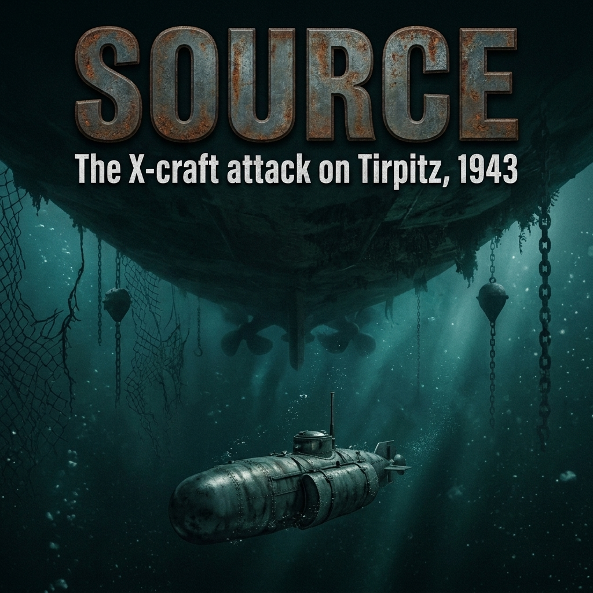

The problem was not what the ship was doing. The problem was what her presence prevented anyone else from doing.
On the third floor of the Admiralty, in the War Room beneath the blast-proof concrete slabs of the Citadel, the red chinagraph pencil on the operational map remained fixed at a single point on the Norwegian coast: Trondheim, and later, the sheer-walled anchorages farther north.
Tirpitz.
Forty-two thousand nine hundred tons standard displacement; fifty-two thousand six hundred fully laden. Eight 15-inch SK C/34 guns across four twin turrets. Twelve 5.9-inch secondary guns. An armored belt thirteen inches thick, backed by Krupp cemented steel. She was the largest, heaviest battleship ever built by a European navy, and she spent the freezing spring of 1942 burning fuel solely to keep her dynamos running at anchor.
Across the cabinet table, the Prime Minister’s minute of 25 January 1942 was well known to the Naval Staff. Winston Churchill had written directly to General Ismay for the Chiefs of Staff Committee in language stripped of his usual baroque flourish:
“The destruction or even crippling of this ship is the greatest event at sea at the present time. No other target is comparable to it… The entire naval situation throughout the world would be altered.”
The First Sea Lord, Admiral of the Fleet Sir Dudley Pound, was a man exhausted by the relentless arithmetic of global tonnage loss. He understood precisely what Churchill meant by "the entire naval situation."
Because Tirpitz sat in Norway, the British Home Fleet was shackled to the cold gray moorings of Scapa Flow. To cover the Arctic convoys carrying tanks, aviation fuel, and raw rubber to Murmansk and Archangel, the Royal Navy was forced to maintain a permanent covering force of at least two modern battleships, an aircraft carrier, four cruisers, and a screen of destroyers. These were capital ships desperately needed in the Mediterranean to relieve Malta, and in the Indian Ocean to halt the southward expansion of the Imperial Japanese Navy.
If Tirpitz raised steam and broke out into the Atlantic shipping lanes, she could tear through the central artery of Britain’s merchant supply like a scythe. If she stayed in the fjords, she achieved nearly the same result without firing a main-battery round in anger. She was the supreme embodiment of the German Existenzflotte—the fleet-in-being.
The Service had already tried to kill her. The files on Pound’s desk documented the cost.
Between January and April 1942, Air Marshal Arthur Harris’s RAF Bomber Command had hurled Halifaxes and Lancasters against her moorings in Fættenfjord, near Trondheim. The result was a grim demonstration of geography defeating air power. The Germans had berthed the battleship tight against a near-vertical cliff face. They had ringing batteries of 88mm and 105mm flak guns on the crags above, and below, a permanent network of chemical smoke generators.
When the British heavy bombers droned over the snow-covered ridges, the German alarm system sounded. Within eight minutes, hundreds of smoke pots burning chlorosulfonic acid had flooded the entire fjord with an impenetrable, oily white chemical fog. The RAF crews bombed blind through the murk from four thousand feet, or tried low-level runs through the teeth of radar-directed light flak. They dropped armor-piercing bombs and 4,000-pound "Cookie" blast bombs. They hit the water. They hit the cliffs. They hit empty moss. They lost over thirty aircraft and more than one hundred and fifty trained aircrew. Tirpitz remained virtually unscratched.
The Fleet Air Arm had fared no better. In March, when Tirpitz had briefly put to sea to intercept Convoy PQ 12, twelve Fairey Albacore biplane torpedo-bombers from HMS Victorious had managed to intercept her through freezing cloud. The German ship had simply turned her stern to the attack, put on thirty knots, and combed the torpedo wakes while throwing up an impenetrable wall of tracer. Every British torpedo missed. Two Albacores were shot down.
At the Admiralty, the senior planning officers studied the hydrographic charts of the Norwegian coast. The conclusions were bleak.
You could not sink her with high-altitude bombers because you could not see her through the artificial smoke.
You could not reach her with carrier-borne torpedo-bombers because the approaches down the steep, twisting fjords gave no run-in for an aircraft to drop an 18-inch torpedo, and the German anti-aircraft concentration was murderous.
You could not shell her with the Home Fleet’s 14-inch and 16-inch guns, because no British capital ship could navigate the narrow, mine-sown, coastal waters without being pulverized by German coastal artillery and Luftwaffe Stukas based at Bardufoss.
Finally, you could not torpedo her with a conventional submarine. Tirpitz’s anchorage was protected by an outer anti-submarine boom spanning the fjord, continuous hydrophone stations on the seabed, patrolling motor minesweepers, and—most formidable of all—a tightly drawn enclosure of triple-tiered anti-torpedo netting that hung from steel buoys down to forty feet below the surface, encasing the battleship like a cage.
A standard S-class or T-class submarine was over two hundred feet long, drew fifteen feet of water, and displaced a thousand tons. It could not pass the minefields without detection, it could not jump the boom, and its 21-inch torpedoes would merely detonate harmlessly in the outer steel mesh of the cage.
By the summer of 1942, the realization within the Submarine Branch had hardened into cold fact:
If the ship could not be hit from the air, and could not be approached from the surface, and could not be reached through the water, she had to be attacked from beneath it.
The weapon would have to slip through the German hydrophone lines unnoticed. It would have to crawl over or under the harbor booms. It would have to penetrate the anti-torpedo cage, position itself directly under the battleship’s hull where there was no armor plating, and lay enough concentrated explosive on the seabed to break her keel.
The machine required to do that did not yet exist in service. But in a converted drawing office on the south coast of England, an eccentric retired submarine commander was already sketching its outlines.
The drawing board stood in an old boatyard shed beside the mudflats of the River Hamble. It smelled of creosote, machine oil, and low tide.
Commander Cromwell Hanford Varley, Royal Navy, retired, was fifty-four years old and possessed the sharp, irritable energy of an inventor who had spent the First World War trapped inside primitive H-class and E-class submarines. He had won a Distinguished Service Order in 1917, left the service with ruined nerves, and spent the interwar years filing patents on hydraulic gears, fuel pumps, and small marine craft. When the Second World War broke out, Varley did not return to the Admiralty to shuffle paper. He founded Varley Marine Ltd. and began drafting a vessel the Naval Staff insisted was impossible: an ocean-capable submarine that could fit inside a railway carriage.
The official naval establishment had dismissed midget submarines for decades. They were considered suicide coffins, mechanically unreliable, and incapable of navigating tidal waters. But the disaster of PQ 17 was already brewing in the Arctic, and the Flag Officer Submarines, Vice-Admiral Sir Max Horton—himself a legendary Great War submariner—knew conventional methods had failed. Horton bypassed the conservative bureaucracy of the Admiralty’s Department of Naval Construction and gave Varley the authority to build a prototype.
It was designated simply: X3.
There were no X1 or X2; the navy had used those designations for experimental craft years before. X3 was the steel reality.
Varley stood over the blue-print sheets, calipers in hand, explaining the dimensional tolerances to an inspecting officer from Horton’s staff.
"The maximum internal diameter of the pressure hull," Varley said, his voice flat with mathematical finality, "is five feet, six inches. The plating is mild steel, five-eighths of an inch. She will dive to three hundred feet, though I should prefer you keep her at two. At three hundred, the rivets will weep."
"And the crew?" the staff officer asked.
"Four," Varley said. "One commanding officer at the periscope and controls. One sub-lieutenant for dead reckoning and hydroplanes. One engine-room artificer. One diver. None of them may be over five feet eight inches in height. None of them may be broad across the shoulders. A tall man will not be able to sit upright on the battery casings without bowing his head."
The layout of X3 was a masterpiece of ruthless mechanical economy. The vessel was fifty-one feet, four inches long, displacing twenty-seven tons on the surface and not quite thirty submerged. It was divided into four functional sections by three transverse bulkheads, but there were no privacy doors—only circular escape hatches cut into the steel walls, through which a grown man had to slide like an eel.
Forward lay the battery compartment. Here sat a bank of Exide lead-acid submarine cells, identical in chemistry to those in fleet submarines, but shrunk into a space so cramped that the crew’s food rations—tins of corned beef, condensed milk, boiled sweets—had to be stowed directly on top of the cell tops, warm from electrical charging.
Behind the battery was the innovation that made the X-craft unique: the "Wet-and-Dry" compartment, known simply as the W&D.
It was a steel chamber barely large enough for two men to crouch in together. It served two purposes. In an emergency, it was an escape trunk using Davis Submerged Escape Apparatus (DSEA). Offensively, it was a diver’s airlock. By isolating the compartment, opening sea valves to flood it, and venting the internal air pressure, a trained diver could unbolt the top hatch while the submarine remained completely submerged on the sea floor, climb outside into the freezing water to cut through anti-torpedo netting with hydraulic shears, crawl back inside, close the hatch, pump out the water, and return to the warm control room.
Amidships sat the control room. It contained the single brass steering wheel, the hydroplane controls, the gyro-compass repeater, a high-pressure blowing panel for the ballast tanks, and the periscope. Because a standard submarine periscope would weigh more than the X-craft itself, Varley had fitted an instrument barely an inch and an eighth in external diameter at the tip—little thicker than a broom handle. Through it, the commanding officer had a field of view of only a few degrees; it had no magnification, threw an image that was dim in anything less than brilliant sunlight, and leaked around its packing gland the moment depth exceeded sixty feet.
Aft lay the engine room.
For surface running and battery charging, Varley had rejected complicated bespoke marine diesels. Instead, he had gone to Patricroft, Manchester, and bought an off-the-shelf commercial engine: the Gardner 4LK.
It was a standard, four-cylinder, 42-horsepower diesel engine originally designed to power single-deck Guy buses and commercial delivery vans across northern England. It was light, exceptionally reliable, easily serviced, and could run for days on low-grade fuel. Married to it on the single drive shaft was a Metropolitan-Vickers 30-horsepower electric motor, which drew power from the batteries when submerged, driving a two-bladed bronze propeller at a maximum submerged speed of five knots.
"And the weapon?" the staff officer asked, looking at the profile drawing. "Where are the tubes?"
"There are no tubes," Varley replied. "A twenty-one-inch torpedo carries seven hundred pounds of TNT. If you hit the outer torpedo net around Tirpitz, you blast a hole in wire and the ship’s company drinks their coffee undisturbed. If you hit her torpedo bulge, you flood a void compartment and she lists two degrees. You cannot kill her through the side armor."
Varley unrolled a cross-sectional diagram of the external hull.
Bolted to the outside of the pressure hull, clinging to either flank of the submarine like panniers on a pack mule, were two massive crescent-shaped steel containers. They were contoured to the hull so as not to disrupt hydrodynamic flow.
"Side-cargoes," Varley said. "Each contains two long tons—four thousand four hundred and eighty pounds—of amatol high explosive. Eight thousand nine hundred and sixty pounds in total. Fitted with hydrostatic safety gear and an eight-hour clockwork delay fuse."
He pointed a blunt finger directly beneath the midships section.
"You do not fire at her from five hundred yards," Varley explained, his voice quiet. "You take this craft past the hydrophones. You take it through the net gate or you cut through the wire. You drive this hull directly underneath the battleship, between her bottom plating and the mud of the fjord. You turn these mechanical release wheels inside the control room. The port and starboard side-cargoes drop onto the seabed, side by side, directly under her machinery spaces."
He looked up at the staff officer.
"The X-craft backs away on her electric motor and makes for open water. Four hours later, the clockwork completes the circuit. Four tons of amatol detonate against the unarmored floor of the hull. The explosion creates a gas bubble that lifts the ship bodily out of the water. When the bubble collapses, her own fifty-thousand-ton weight breaks her spine."
The theory was mathematically absolute. But the physical reality was terrifying.
On 15 March 1942, X3 had been lowered into Southampton Water for her first static trim. She leaked through the propeller shaft. The trim was so delicate that when the artificer leaned forward three feet to adjust a sea-cock, the boat’s bow dipped six degrees.
Yet on subsequent trials in the Hamble and off Portsmouth, with Varley himself crammed into the control position, she proved something critical: she could submerge, run on her electric motor, hover motionless at a commanded depth, and surface again under her own power.
Admiral Sir Max Horton traveled south to see her. He stood on the damp jetty at Hamble, a thick-set man with cold gray eyes, watching the tiny steel blister of X3’s casing cut through the brown water of the estuary.
Horton did not smile, but he turned to his staff.
"Order six of them from Vickers," Horton said. "And tell the personnel department to begin finding the lunatics to drive them."
The notice had not appeared in the public press, nor had it been broadcast over the BBC. It circulated through the flotillas as an Admiralty Fleet Order, brief and deliberately opaque:
Volunteers are required for special and hazardous service. Officers and ratings must be under five feet ten inches in height, medically fit for diving, unmarried preferred, and possessing a working knowledge of internal combustion engines or dead-reckoning navigation.
To junior officers rotting in shore depots, or navigating motor launches through the dreary chop of the English Channel, the phrase "special and hazardous service" was a recognized naval cipher. It meant irregular warfare. It meant escaping the stultifying hierarchy of the surface fleet. It also meant a statistically heightened probability of being killed without a known grave.
At Fort Blockhouse, the spiritual home of the Submarine Service across the harbor from Portsmouth, the candidates sat on wooden benches in a draughty corridor outside the drafting office. They had traveled from coastal convoys, from the training establishment HMS King Alfred at Hove, and from the Mediterranean flotillas based on Alexandria and Malta.
Among them was Lieutenant Basil Charles Godfrey Place.
At twenty-one years of age, Place was already a regular Royal Navy officer with a Distinguished Service Cross. He had served as First Lieutenant in the small submarine Una in the Mediterranean, surviving depth-charge attacks by Italian torpedo boats and the grueling, diesel-fumed misery of running submerged beneath the Sicilian narrows. Place was spare, quiet, and possessed an innate, patrician calm that bordered on detachment. He had volunteered not out of a romantic death wish, but out of cold calculation: regular submarine service in the Mediterranean in the summer of 1942 had an attrition rate that offered junior officers little future anyway. If one was going to risk being crushed in a steel cylinder, it might as well be for an enterprise that offered independent command.
Inside the interview room sat Captain George Phillips, a veteran submariner whose desk held little beyond a blotter, an ash-tray, and a stack of confidential service records.
Phillips did not offer Place a chair. He looked up from the dossier.
"Place. You were in Una."
"Yes, sir."
"You have your watchkeeping certificate. You know how to handle high-pressure air and you’ve smelled chlorine before." Phillips leaned back, eyes flat. "Why on earth did you volunteer for this? You’re on the roster for a command course in twelve months."
"I prefer not to spend twelve months in the depot, sir," Place said. His tone was level, typical of the peacetime Dartmouth cadet he had been. "And the order said independent command."
"It did not say what sort of command," Phillips countered. "Can you swim fifty yards in full kit?"
"Yes, sir."
"Are you subject to ear trouble? Sinus infections? Headaches when the CO₂ rises above three percent?"
"No, sir."
"Do you get along with Dominion officers?"
Place blinked once. "I see no reason why not, sir."
"You will be working with them," Phillips said, stamping the paper with a red mark. "Half the men volunteering are Australians and New Zealanders from the Volunteer Reserve. Civilians in uniform eighteen months ago. If you want spit-and-polish, Place, walk out that door right now."
"I am content, sir."
"Report to the medical officer in Sick Bay Three for the pressure pot. If your Eustachian tubes don't clear at sixty pounds, you’re back to the depot by evening."
In Sick Bay Three, the medical checks were functional and devoid of bedside manner. The Navy was not looking for athletic heroes; it was looking for physiological tolerance.
The candidates were stripped and shoved, four at a time, into the recompression chamber—a riveted steel tank nicknamed "the pot." The medical orderly turned the brass wheel of the air valve, pumping in compressed air to simulate the hydrostatic pressure of descending sixty feet into seawater.
The air grew instantly hot and thick. The candidates swallowed furiously, pinching their nostrils to force air through their Eustachian tubes to equalize the pressure against their eardrums. If a man had an undiagnosed sinus cyst, the pressure felt like an ice-pick being driven between his eyes. If he had an air bubble trapped beneath an imperfect dental filling, the expanding air during decompression would shatter the tooth from the inside out.
Two men banged frantically on the thick glass porthole, their faces pale with panic, unable to clear their ears as pain lanced into their skulls. The orderly bled the pressure off, hauled them out, and marked their papers Rejected.
Those who passed were sent down the hall to the visual and psychological screening.
There, Lieutenant Donald Cameron, Royal Naval Reserve, was waiting his turn. Cameron was twenty-six, a Scotsman from North Argyll, built broad across the chest, with large, capable hands that had spent years hauling mooring hawsers in the Merchant Navy before the war. Unlike Place, Cameron had no Dartmouth polish. He was a practical seaman who had served his apprenticeship in merchant tramps, navigating by sextant and lead-line through North Atlantic gales, before taking command of motor minesweepers for the Admiralty.
Cameron was interviewed by a naval surgeon who laid out a series of simple questions designed to root out latent claustrophobia.
"Cameron. Have you ever spent seventy-two hours in a locked steel box without a change of air?"
"I’ve spent three weeks in the lower holds of a coal burner off the River Plate with the hatches battened in a hurricane," Cameron answered in his slow, dry Scottish burr. "It will likely be cleaner than that."
"You will not have coal dust," the doctor said. "You will have battery acid, your own excrement, and carbon monoxide. You will not be able to stand upright for a week at a time. Your knees will remain bent from the moment you leave harbor until you return. If you return."
"Aye," Cameron said, unblinking. "When do we start?"
Along with Place and Cameron came men from across the Commonwealth: Lieutenant Kenneth Hudspeth, an Australian from Tasmania with a degree in civil engineering, whose quiet technical precision masked a stubborn resilience; Sub-Lieutenant Henty-Hegg, RNVR, an artist in civilian life with a fierce, quiet intensity; and Sub-Lieutenant Kearney, an adventurous New Zealander.
Ratings were selected with equal ruthlessness: Engine Room Artificers (ERAs) who could strip down a diesel fuel injector in total darkness by touch alone, and Able Seamen who showed no instinctive terror when submerged in an escape hood beneath twenty feet of green dock water.
None of them were told what they were to attack. None were shown drawings of the X-craft.
On 20 August 1942, forty officers and ratings were assembled on Platform 4 of Glasgow’s Central Station. They carried kitbags, service gas masks, and sealed railway travel warrants instructing them to report to the pierhead at Gourock on the Firth of Clyde.
There, an Admiralty drifter was waiting in the cold drizzle to ferry them across the Firth into the remote, mist-shrouded lochs of western Scotland, where an old merchant hull was anchored beneath the hills.
The Admiralty drifter turned north out of the Firth of Clyde, pushing past the southern tip of the Cowal Peninsula into the narrowing gut of Loch Striven.
To the men huddled on the wet open deck under oilskins, Scotland in the autumn looked desolate. The loch was five miles long, less than a mile wide, flanked by near-vertical heather-clad hills that rose six hundred feet into the low, freezing rain. It had no towns, no commercial shipping lanes, and only a single rutted road winding along its eastern shore. At its southern entrance, a patrol trawler swung on its anchor beside an anti-submarine boom. It was a natural isolation ward: deep water—over forty fathoms in places—with nowhere for an observer to stand without being spotted by the Marine sentries posted along the ridges.
Moored in the middle of the loch, black against the gray water, lay a five-thousand-ton former commercial hull: HMS Bonaventure.
Built by the Greenock Dockyard Company as a refrigerated cargo vessel, Bonaventure had been requisitioned by the Admiralty while still on the slipway and converted into a dedicated depot ship. She was fitted with heavy electro-hydraulic derricks capable of lifting thirty-ton craft out of the water, workshops equipped with lathes and battery-charging manifolds, and accommodation space for several hundred men. A few miles south, at Port Bannatyne on the Isle of Bute, the requisitioned Kyles Hydropathic Hotel had been stripped of its carpets and renamed HMS Varbel—a compound of the names Varley and Bell—to serve as the flotilla’s administrative shore headquarters.
Together, the hotel and the depot ship formed the private world of the newly commissioned 12th Submarine Flotilla.
Donald Cameron stood at the drifter's rail alongside Godfrey Place and Kenneth Hudspeth as they drew alongside Bonaventure’s starboard flank. Tied up to the depot ship's boat boom, rocking gently in the swell, was a steel cylinder painted in dark sea-gray.
It was X3.
None of them spoke for several seconds. To men used to standard submarines—even the diminutive 700-ton Una Place had served in—the craft looked less like a warship than a boiler tank dropped off the back of a lorry. Her freeboard was barely twelve inches. Her casing was narrow, wet, and devoid of stanchions, guard rails, or a bridge. There was only a raised brass ring around a circular midships hatch, and a bronze periscope barrel no thicker than a walking stick sticking up into the rain.
"Good grief," Hudspeth murmured in his dry Australian drawl. "Where does one keep his shoes?"
"In the bilge, Sub-Lieutenant," a voice boomed from the gangway above. "Assuming you have time to take them off."
The voice belonged to Commander William Richmond Fell—known throughout the submarine service as "Tiny" Fell, a towering, broad-shouldered officer whose six-foot-two frame stood in direct, comic contrast to the tiny craft he had been appointed to command. Fell was a veteran submariner of the Great War, blunt, pragmatic, and entirely devoid of shore-establishment polish.
An hour later, thirty officers and forty ratings were crowded into Bonaventure’s mess decks. The smell of frying kippers from the galley fought with the damp woolen fug of their uniform tunics.
Commander Fell stood before a blackboard bolted to the bulkhead. He held a piece of chalk, but he did not draw a target. He drew a diagram of the craft's internal compartments.
"You have all volunteered," Fell began, his eyes moving over the rows of faces. "None of you know what you are here to do, and you will not be told until you are proficient enough to handle these craft without drowning yourselves within five cables of the depot ship. The weapon you see alongside is the X-craft. There are currently two in existence: X3, which you saw, and X4, which is arriving by rail from Southampton this week. Six production models—X5 through X10—are currently being built by Vickers-Armstrongs at Barrow and by subcontractors in Chesterfield."
Fell tapped the blackboard with his chalk.
"These boats cannot cross the sea under their own power. Their fuel capacity and battery banks give them an operational radius of barely two hundred miles at four knots. Therefore, to reach any operational theater, they must be towed by operational submarines—big boats from the fleet flotillas—across hundreds of miles of open ocean, through minefields and gale-force weather."
A low murmur ran through the room. Cameron shifted his weight, his merchantman’s instincts instantly doing the arithmetic of a small boat on a tow-rope in the North Atlantic.
"The passage to the target area will take between seven and ten days," Fell continued, cutting through the silence. "During that passage, the craft must remain submerged for significant periods to avoid German air reconnaissance. Living in that steel tube for eight days under tow—pitching in an ocean sea-way, without heat, living on cold compo rations, in the dark, breathing scrubbed air—is enough to reduce four men to shivering, useless wrecks before they ever sight the target."
Fell paused, leaning forward against the mess table.
"For that reason, each X-craft will have two complete crews."
He let the reality sink in.
"The Passage Crew will take the craft out. They will be towed by the mother submarine. They will endure the crossing, fight the tow-ropes, pump the bilges, and keep the batteries topped up. When the force reaches the operational drop point—thirty miles from the objective—the mother submarine will surface. The Passage Crew will be taken off and brought aboard the parent boat."
Fell pointed at the front row, where Place and Cameron sat.
"The Operational Crew will have spent that same eight-day transit riding aboard the parent submarine. In bunks. Eating hot food. Resting. At the drop point, the Operational Crew will climb into the X-craft, shut the hatch, cast off the tow, and make the attack."
A heavy, uncomfortable silence settled over the ratings in the back.
It was a brutal, asymmetric arrangement. The Passage Crews—mostly junior Sub-Lieutenants and ratings—were being asked to bear all the grinding misery, the sea-sickness, and the terrifying vulnerability of being dragged blind through mine-sown seas, only to be hauled out like exhausted cattle at the finish line, handing the mission, the attack, and any potential decoration to another four men.
Cameron raised a hand. "And if the tow parts on the crossing, sir? In a sea?"
"Then the passage crew dies," Fell replied without hesitation. "Or they surface, wait until they run out of air, and pray their parent boat spots them in the swell before an enemy aircraft does. Make no mistake: the Passage Crew's job is as critical—and as deadly—as the operational crew's. You will train for both. Every man in this room will learn to handle these boats until you can trim them in your sleep."
The training in Loch Striven began the next morning. It was an ordeal of pure physics.
An X-craft had so little reserve buoyancy—less than ten percent—that the laws of submarine stability behaved with extreme sensitivity. In X3, a crewman moving from the engine room to the control room shifted enough weight to put the boat five degrees down by the bow. If an officer took half a gallon of drinking water from the forward tank to boil tea, the First Lieutenant had to compensate immediately by flooding water into the internal compensating tank, or the hydroplane operator would find the boat rising out of the water.
"Diving," Godfrey Place ordered on his first training run down the loch.
Beside him, Engine Room Artificer Richardson worked the hand levers of the main ballast vents. There was a dull hiss of venting air as the sea rushed into the external tanks. The tiny hull slid beneath the cold, black surface of Loch Striven.
Instantly, the daylight vanished from the tiny glass deadlights in the roof of the hull. The only illumination was the faint amber glow of the instrument dials and two low-wattage emergency lamps. The temperature dropped within three minutes; the cold Scottish seawater, separated from the cabin by five-eighths of an inch of steel, turned the pressure hull into a refrigeration coil.
Condensation began to form on every exposed surface. It ran down the riveted frames in steady, icy trickles, dripping onto the backs of their necks, soaking their battle-dress blouses, and pooling in the steel bilges around their boots.
Place stood at the tiny bronze periscope, his forehead pressed against the rubber brow-pad. Through the optic, he could see nothing but a murky, green-brown world of suspended peat particles.
"Depth thirty feet," Sub-Lieutenant Robert Aitken reported from the hydroplane wheels. His voice was taut with concentration. "Trim is heavy forward, sir. She wants to dig her nose in."
"Pump ten strokes from number one to number four," Place answered calmly.
The hand pump clanked in the silence, iron against brass. The smell began to assert itself: the unmistakable, sickening perfume of an X-craft—spilled diesel oil, acid vapors from the Exide cells, human sweat, and the sharp, chemical tang of the "Protosorb" soda-lime canisters used to absorb their exhaled carbon dioxide.
Within an hour, all four men were shivering uncontrollably.
Yet they stayed down. Four hours. Six hours. Eight hours. Sitting on battery boxes, knees pulled to their chests, learning the sound of the electric motor’s reduction gear, learning the dangerous sluggishness of the controls when the batteries drained, learning to trust fifty feet of steel pipe in eighty feet of black water.
They learned to submerge. They learned to surface.
But as the winter of 1942 closed in, coating the hills of Loch Striven in hard, white snow, Commander Fell made it clear that maneuvering the craft was only the first chapter of their survival.
The real enemy was not the water. It was the wire.
And to beat the wire, one of the four men inside each boat was going to have to step out into the freezing dark.
The suit was officially designated the "Submarine Diver's Surface-Breathing and Shallow-Water Diving Dress."
The men who had to wear it called it "Clammy Death."
Manufactured by Siebe, Gorman & Company to a design by Commander Sladen, it was a one-piece coverall made of thin, bottle-green sheet rubber backed with fine twill. It had no internal heating, no thermal padding, and offered zero insulation against the Scottish winter. A diver pulled it on over two or three layers of thick Shetland wool long-johns and sweaters. You stepped in through an expansive neck aperture, pulled the rubber over your shoulders, and had an assistant clamp a rigid brass neck-ring and heavy rubber collar around your throat with wing-nuts.
If the suit leaked—and it almost always leaked around the cuffs or the crutch—the near-freezing seawater of Loch Striven saturated the woolens instantly. The water was trapped against the skin, growing cold, sour, and heavy.
Inside X3, resting on the muddy floor of the loch at forty feet during the late-winter trials of 1943, Sub-Lieutenant Robert Aitken was wedged into the Wet-and-Dry compartment.
He was twenty-two years old, an RNVR officer who had worked in an Edinburgh bank before the war. He stood five feet seven inches, his back pressed hard against the steel forward bulkhead of the compartment, his knees knocked against the internal casing of the high-pressure air manifold. Beside him hung the breathing set: a modified Davis Submerged Escape Apparatus (DSEA) strapped across his chest, fitted with an oxygen bottle, a corrugated rubber breathing tube, a spring-loaded nose clip, and a rectangular canister of Protosorb soda-lime.
In the control room, separated from Aitken by the dog-bolted circular bulkhead door, Lieutenant Godfrey Place watched the depth gauge needle resting steady on forty feet.
"Aitken," Place spoke through the voice pipe, his tone conversational. "Check your oxygen bypass."
Aitken turned the small brass wheel on the chest manifold. There was a dull shhh inside his rubber counter-lung bag. He clamped the vulcanite mouthpiece between his teeth, slipped the heavy rubber flippers over his boots, and fitted his weighted rubber diving hood over his head. Through the voice-pipe, his voice sounded muffled, distorted by the rubber bit.
"Oxygen correct, sir. Commencing flood."
Place turned to the trim controls. "Stand by on compensating tank three. Richardson, be ready on the main pump."
This was the mechanical crisis of every lock-out.
The W&D compartment was not merely a room; it was an integral part of the submarine's displacement. Empty, it held roughly a ton of air. Flooded with seawater, it added two thousand two hundred pounds of dead weight directly ahead of the craft’s center of gravity. Unless that weight was instantly offset by pumping a corresponding volume of water from the internal compensating tanks into the sea, the submarine would tip forward on her nose and drive herself like a chisel into the seabed mud.
Aitken reached down in the dark and cranked open the lower flood valve—the sea-cock that led directly to the loch.
Seawater roared through the pipe with the sound of a ruptured boiler. It hit Aitken's ankles, then rose past his knees, icy and black. The air inside the closed chamber had nowhere to escape; as the water level mounted toward his waist, the air compressed, screaming out through the overhead vent cock Aitken was feathering with his right hand.
The pressure inside the chamber climbed sharply. Aitken felt the familiar, brutal hammer against his eardrums. He swallowed violently, forcing air into his sinuses, fighting to equalize before an ear-drum burst.
Inside the control room, the bow tilted downward three degrees.
"Blow compensating three," Place ordered quietly. "Half-ahead on the motor."
The electric motor hummed; the screw bit into the water. Engine Room Artificer Richardson worked the brass levers of the air blowing panel. High-pressure air screeched as water was forced out of the tanks beneath their deckboards. The depth gauge needle flickered, dipped to forty-two feet, and then stabilized. The trim held.
Inside the W&D, the water was at Aitken’s chest. Then his chin.
He pulled the rubber mouthpiece tight, clamped the spring clip over his nostrils, and adjusted the glass goggles over his eyes. As the water closed over his head, he reached up into the darkness above him, grasped the dog-clamps of the topside circular escape hatch, and shoved.
Hydrostatic pressure held the steel hatch sealed until the internal water level was completely equalized with the loch outside. With a dull metallic clunk, the pressure balanced. Aitken threw his weight upward.
The hatch popped open.
A burst of residual air bubbled out into the black water. Aitken thrust his head through the coaming into the open loch.
Outside, the silence was total, broken only by the rhythmic, mechanical hiss of his own breathing: oxygen feeding from the counter-lung, the caustic scratch of the soda-lime scrubbing his exhaled breath, and the cold bite of seawater that immediately seeped through his left wrist seal.
Aitken reached down into the hatch coaming, pulled out a three-foot-long pair of hydraulic bolt-croppers, and climbed onto the casing of X3.
Tied between heavy anchors across the floor of Loch Striven, the Admiralty had suspended a full-scale section of standard harbor-defense anti-torpedo netting. It was a formidable barrier: interlocking rings of hardened one-inch galvanized steel wire, braided into a mesh designed to catch and detonate heavy twenty-one-inch torpedoes.
Aitken drifted toward the wire. His world was reduced to the three-foot beam of his grease-packed underwater torch and the green murk of the loch.
He clamped the jaws of the hydraulic croppers around a single strand of the steel ring.
The tool was manual. A high-pressure hydraulic hand pump was connected to the cutters by a flexible armored hose. Aitken held the heavy jaws steady with his left thigh and forearm and began to pump the handle with his right hand.
Clank. Clank. Clank.
Forty strokes of the lever to build up three tons of pressure per square inch in the cutting jaws. In the thirty-eight-degree water, his fingers went numb within five minutes. His breath came faster; he could taste the faint, sweet, chemical dryness of the oxygen.
On the forty-second stroke, with a sharp, underwater ping that rang through his teeth, the steel strand sheared clean.
One strand down. To cut an aperture large enough for a five-foot-wide X-craft to squeeze through required cutting thirty-two separate rings. It was an hour and a half of agonizing, muscle-tearing manual labor in freezing blackness.
And hovering behind every minute was the physiological specter that haunted the 12th Flotilla: oxygen convulsions.
In early 1943, Admiralty physiologists did not fully understand the exact cellular mechanism of central nervous system oxygen toxicity, but every man in the flotilla had the rule drilled into him: Do not breathe pure oxygen below thirty-three feet.
At pressures greater than two atmospheres absolute, pure oxygen ceases to be life-sustaining; it acts on the brain as a violent neurotoxin. The onset was without warning. A diver cutting wire on the sea floor would feel a sudden twitching in the corners of his lips, followed in seconds by an explosive epileptic seizure. His back would arch into violent tetanic spasms; he would bite clean through his vulcanite mouthpiece, spit it out in his thrashing, and inhale the sea.
Two divers had already died during early training in the Scottish lochs, their convulsing bodies hauled to the surface too late by their tenders.
Aitken felt the cold sweat running down his ribs beneath the woolens. He monitored his own face, terrified of the fatal lip-twitch. He checked his wrist-depth gauge. Thirty-six feet.
Three feet too deep.
He let go of the cutter, kicked his legs, and floated upward along the steel mesh until his gauge showed twenty-eight feet. He grabbed the wire with numb fingers, hauled the heavy cropper back into position, and began to pump again.
Forty-five minutes later, exhausted, his forearms cramping and his hands devoid of sensation, Aitken crawled back down the rounded hull of X3.
He slid his legs through the upper hatch of the W&D, hauled the cutters in after him, pulled the steel hatch down, and dog-bolted the clamps.
He opened the blow-valve. High-pressure air from the boat's storage bottles shrieked into the chamber, forcing the water out through the bottom discharge pipe into the sea. As the water dropped below his waist, Aitken tore the mouthpiece from his jaw, ripped off his goggles, and hammered his fist against the internal bulkhead door.
"Hatch secured," he croaked, coughing violently as the cold, dry air hit his lungs. "Wire cut. Opening made."
Inside the control room, Godfrey Place smiled faintly, checked the chronometer, and marked the log.
Throughout February and into early March 1943, the routine repeated daily. They dived, they flooded, they cut steel, and they froze. They proved that an X-craft could breach British netting, and they waited for Vickers to finish building the operational boats.
Then, on 12 March 1943, the strategic picture shifted completely.
A high-priority operational intelligence signal landed on the desk of Commander Fell aboard HMS Bonaventure.
The German battleship Tirpitz was no longer in Trondheim.
Under the cover of Operation Paderborn, she had weighed anchor on the night of 11 March, slipped out of Fættenfjord, and made a high-speed dash north past the Arctic Circle to Bogen Bay near Narvik. Ten days later, she pushed even farther north into the extreme Arctic sanctuary of Altafjord.
The target had not simply moved. She had placed herself nearly a thousand miles from the British mainland—far beyond the operational range of any RAF heavy bomber base, ringed by sheer Arctic mountains, and protected by the most formidable natural harbor defenses in the world.
If she was to be destroyed, the X-craft would have to be dragged across the roof of Europe to find her.
The intelligence was built out of two fragile materials: glass photographic plates and short-wave Morse code.
At Danesfield House, a country estate at Medmenham requisitioned by the RAF Central Interpretation Unit, Section Leader Constance Babington Smith and the photographic interpreters worked under shaded lamps with stereoscopic magnifying viewers.
Before them lay 9-by-9-inch negative contact prints flown back by unarmed De Havilland Mosquito PR.IVs flying at thirty thousand feet out of RAF Leuchars in Fife and staging through the Soviet airfield at Vaenga near Murmansk. Looking through the binocular optics, the flat gray print popped into startling three-dimensional relief.
The interpreters measured millimeters with micrometer calipers and cross-referenced their findings with the Naval Intelligence Division.
The geography was forbidding.
Kåfjord was an inlet of Altafjord, located at 69°56′ North, well above the Arctic Circle, two hundred miles north-east of Narvik. It was an aquatic dead-end: barely four miles long, eight hundred yards wide, carved into the barren tundra and hemmed in by steep, near-vertical mountain walls that rose abruptly to over two thousand feet.
At the southern head of the fjord, tethered to the rocky shore under the cliff face, sat Tirpitz.
The photographs revealed that she was not anchored in the middle of the inlet. She was secured stern-to-shore, masked beneath acres of green-and-gray camouflage netting slung from her upperworks to the cliffs. Smoke generators—hundreds of metal canisters burning chlorosulfonic acid—were bolted to the rocks around her perimeter, ready to blanket the entire anchorage in artificial fog within six minutes of an air-raid siren.
The underwater defenses were traced onto Admiralty tracing paper with red ink:
Yet photographic reconnaissance had a fatal limitation: it could not see beneath the tides, nor could it tell the Admiralty when the German patrol boats changed watch.
For that, London relied on a young Norwegian schoolteacher and resistance agent named Torstein Raaby.
Raaby, operating under the codename Ida, was part of the Secret Intelligence Service network in Finnmark. Hiding in a turf hut in the mountains above Altafjord, Raaby had tapped directly into the civilian telephone lines running from the German naval headquarters to the coastal batteries. He powered his covert short-wave transmitter using a lead-acid car battery recharged with a hand generator, or by illegally hooking wires into the local hospital's emergency generator.
Transmitting in five-letter code groups, Raaby sent regular weather reports, details of ship movements, and the precise operating schedules of the German boom-defense gates.
On 23 March, Scharnhorst had joined Tirpitz in Altafjord. In early April, the pocket battleship Lützow arrived.
The targets were now three.
Back in Scotland, between January and July 1943, the six operational X-craft arrived at Loch Striven from the shipyards:
These production boats were identical in layout to the battered prototype X3, but featured critical modifications: slightly thicker plating, improved high-pressure air manifolds, and improved magnetic gyro-compasses.
In late August 1943, Commander Fell called the commanding officers into the briefing room aboard HMS Bonaventure.
On the center of the mahogany table sat a detailed, three-dimensional plaster-of-Paris relief model of Kåfjord and Langfjord, built to exact scale by Medmenham’s model-makers using Raaby’s data and aerial photography. Every contour, every anti-torpedo buoy line, and every known hydrophone station was painted in matte enamel.
Fell did not waste words.
"The operation is codenamed Source," Fell said, tapping the model with a timber pointer. "It has been personally authorized by the Prime Minister and the War Cabinet."
He pointed to the head of Kåfjord.
"Tirpitz is here. She is the primary target. Three craft are assigned to her: Lieutenant Henty-Hegg in X5, Lieutenant Cameron in X6, Lieutenant Place in X7."
Cameron and Place leaned over the model, studying the tiny red lines representing the anti-torpedo cage.
"The second target," Fell continued, moving the pointer across to the anchorage in the adjacent fjord, "is Scharnhorst. Assigned to Sub-Lieutenant Kearney in X9 and Lieutenant Hudspeth in X10."
Hudspeth nodded once, his eyes tracing the depth soundings marked in the narrow approach channels.
"The third target," Fell said, resting the pointer on Langfjord, "is the pocket battleship Lützow. Assigned to Lieutenant McFarlane in X8."
Cameron spoke up, his merchant seaman's eye immediately assessing the hydrography. "The tidal range, sir? The nets hang forty feet. What is our clearance between the bottom of the nets and the fjord floor?"
"Near the shore, virtually none," Fell answered bluntly. "The nets are weighted with heavy sinkers. In the center of the fjord, you may have thirty to fifty feet of water beneath the foot of the wire. But there are submerged rocks, pinnacles, and discarded boom mooring cables that do not appear on any pre-war chart."
Fell laid out the astronomical and hydrographic constraints that dictated the timing of the strike.
"The operation can only take place during a period of no moon and extreme spring tides," Fell said. "We need total darkness for the mother submarines to surface at night during the tow, and for the X-craft to make their surface diesel runs into the fjord mouths. We need the maximum high water of the spring tide on the morning of the attack—first, to give you the highest possible clearance to slip over the net hurdles if you cannot get under them; and second, to give maximum depth under the keel of the battleships so the gas bubble from the side-cargoes has room to develop full upward cavitation."
The calendar provided only one viable operational window: the third week of September 1943. After that, the Arctic winter storms would make towing small craft impossible, and the continuous twilight of the autumn days would vanish into twenty-four-hour ice-fog and Arctic gales.
"On 11 September," Fell concluded, closing the dossier, "the force will sail from Loch Cairnbawn. You have three weeks to run your final machinery trials and balance your crews."
Six midget submarines. Twenty-four men in the operational crews; twenty-four men in the passage crews.
Against them stood forty-two thousand tons of German steel, three layers of harbor booms, hydrophone arrays, a thousand miles of Arctic sea, and four tons of amatol that had to be placed within thirty feet of a moving target.
The training was over. The 12th Flotilla prepared to move north.
In the extreme north-west corner of the Scottish Highlands, Loch Cairnbawn—code-named "Port HH"—was an empty, sea-sculpted cleft of salt water guarded by the cliffs of Sutherland. There was no railhead, no town, and no telephone line that had not been tapped by Naval Intelligence.
Swinging on their moorings in the sheltered roadstead were two depot ships: HMS Bonaventure and the veteran submarine tender HMS Titania. Alongside them lay six full-sized fleet submarines of the S- and T-classes: Truculent, Syrtis, Thrasher, Seanymph, Stubborn, and Sceptre.
Tethered astern of each large submarine, wallowing low in the black peat-tinged water like harbor buoys, were the six operational X-craft: X5 through X10.
The towing rig was an intricate piece of naval engineering, designed to survive a thousand miles of Arctic sea.
Each tow consisted of two hundred fathoms—twelve hundred feet—of line. The main hawser was an experimental three-inch synthetic nylon rope, selected for its extraordinary elasticity. It was capable of stretching up to thirty percent under sudden load without snapping, acting as a massive shock absorber against the violent snatch of ocean rollers. Spliced into the towing bridle was an armored, rubber-insulated telephone core intended to provide direct, hard-wired voice communication between the parent submarine’s bridge and the X-craft’s control room. On the foredeck of each midget submarine was a spring-loaded slip-hook, fitted with a trip-wire that could be pulled from inside the control room in an emergency, releasing the craft in two seconds.
On the afternoon of 11 September, the operational crews and passage crews separated on the deck of Bonaventure.
The physical contrast was already stark. The Operational Crews—Godfrey Place, Donald Cameron, Kenneth Hudspeth, and their specialists—were dressed in standard naval uniform jackets and sweaters. They were to travel aboard the parent submarines in relative luxury: hot food from a galley, dry bunks in the torpedo stowage compartments, running fresh water, and room to stand upright.
The Passage Crews—six young Sub-Lieutenants and eighteen ratings—were dressed for survival. They wore three layers of Shetland woolens, thick sea-boot stockings, and wind-proof canvas smocks. Their faces were smeared with anti-gas lanolin grease to protect their skin against the biting saltwater condensation.
On the casing of HMS Truculent, Donald Cameron stood with Sub-Lieutenant Ernest Clark, the RNVR officer who was to command X6’s passage crew. Clark was twenty-two, slight of build, carrying a canvas duffel bag holding their emergency iron rations, chocolate slabs, and tins of self-heating soup.
Cameron did not offer a speech. He looked at the heavy manila fairlead on X6’s bow, where the nylon hawser was shackled.
"The auxiliary hydroplanes are stiff on the dive, Clark," Cameron said quietly. "Keep three degrees of rise on the bow-planes when Truculent drops to seventy feet, or she’ll drag you down by the nose."
"Understood, sir," Clark replied, pulling his woolen watch-cap down over his ears.
"And watch the telephone line," Cameron added. "If seawater gets into the junction box on the casing, the short-circuit will buzz your ears off. Unplug the handset before it fries the transformer."
"Aye, sir. We'll hand her over to you in one piece off Sorøy."
Clark turned and climbed down the tiny, recessed steel footholds of X6’s casing. One by one, his three-man passage crew—an Engine Room Artificer and two ratings—slipped through the circular midships hatch like ferrets entering a pipe. The steel lid swung shut. The dog-clamps turned with a dull, hollow clack.
On the parent submarines, the commanding officers took their stations on the bridges:
The departures were staggered over thirty-six hours to prevent German coastal reconnaissance or U-boats from spotting an entire submarine flotilla moving north in formation.
At 16:00 on Saturday, 11 September, Truculent was the first to slip her moorings.
Her twin Admiralty diesels rumbled to life, sending a blue cloud of exhaust across the still surface of the loch. The towing hawser, dripping with harbor weed, rose slowly out of the water, shedding sheets of spray as the slack was taken up. Astern, X6 dug her blunt rounded snout into the water, her twin-ton side-cargoes slung like gray iron coffins on either side of her hull.
Truculent moved ahead at eight knots, clearing the narrow rocky throat of Loch Cairnbawn. Half an hour later, Syrtis followed with X9.
The following morning, 12 September, the remaining four pairs slipped their cables and shaped course to the north-east.
As the shelter of the Scottish coastline receded into the driving autumn mist, the sea changed. The calm green loch gave way to the deep, long-interval heave of the North Atlantic.
Two hundred fathoms behind each parent boat, the tiny X-craft began to buck.
The nylon hawsers stretched, thinned under the strain of thousands of pounds of hydrostatic drag, and snapped taut, flinging plumes of spray thirty feet into the air. When a swell rose beneath a parent submarine, she surged forward, yanking the little steel cylinder behind her like a hooked fish.
Inside the control rooms of the six towed craft, the world instantly shrank to the dimensions of a violently pitching sewer.
The hatches were sealed. The outside daylight vanished. The thousand-mile transit had begun.
The motion was neither that of a surface ship nor a free-running submarine.
Towed at eight knots by twelve hundred feet of nylon line, an X-craft behaved like an iron sinker dragged behind a cart. When the parent submarine crested an ocean roller forty feet above, the hawser snatched tight with a mechanical groan that reverberated directly through the steel ribs of the midget’s hull. The bow surged upward; then, as the line plunged back into the trough, the bow dropped violently, corkscrewing through thirty degrees of list before the rudder could bite.
Inside, daylight did not exist. The passage crews lived in an amber twilight cast by two low-amperage instrument bulbs shielded with wire mesh.
The routine was dictated by the parent submarines’ defensive profile. During the day, to evade the long-range Junkers Ju 88 and Blohm & Voss Bv 138 reconnaissance aircraft patrolling from Banak and Tromsø, the mother submarines dived to eighty feet. The X-craft followed them down.
Submerged towing was an ordeal of active, exhausting concentration. The X-craft did not simply trail passively. Because she had minimal longitudinal stability, the helmsman had to sit strapped to his iron seat, his hands locked around the hydroplane control wheel, continuously fighting the trim.
If the parent boat altered speed by half a knot, the tow angle changed. If the bow tilted three degrees down, the midget submarine began to plane downward toward the crushing depths of the Norwegian Trench. The passage officer sat hunched over the depth-gauge needle, calling out corrections:
"Up-planes. Half-degree rise. Catch her."
The hydroplane operator hauled back on the wheel with burning shoulders. Five minutes of inattention meant plunging past their two-hundred-foot test depth into the black abyss.
Within forty-eight hours of clearing the Minch, the voice link between parent and child died.
The experimental telephone wires braided into the core of the nylon towing ropes proved incapable of withstanding the relentless hydraulic pressure and mechanical flexing of the sea. Saltwater forced its way past the rubber vulcanizing into the external junction boxes on the X-craft’s forward casing. The telephone handsets inside the control rooms erupted into deafening screeching and crackling shorts. One by one, in X6, X7, X8, and X9, the passage officers pulled the brass plugs from the bulkheads and stowed the dead handsets.
They were cut off.
Communication with the towing submarine was now reduced to primitive rope signals: three sharp jerks on the tow line for surfacing, four for emergency dive, transmitted by the mother boat altering speed or kicking her rudder.
As the flotilla crossed the 64th parallel, pushing into the Arctic approaches, the temperature of the Norwegian Sea plummeted to four degrees Celsius.
The pressure hull, unlined and uninsulated five-eighths-inch mild steel, became a refrigerator. Condensation formed in thick, greasy sheets along every square inch of the overhead plating. It collected along the angle-iron frames and dripped steadily—a relentless, freezing rain inside the boat. It fell onto the instrument faces, short-circuited minor electrical junction boxes, saturated the hair of the watchkeepers, and soaked through three layers of thick Shetland wool until the men's clothing was heavy, sour, and perpetually freezing.
There was no heat. The Gardner bus diesel could only run on the surface when the hatch was open to draw induction air. Submerged, the Metropolitan-Vickers electric motor ran cold. To switch on the auxiliary electric heater was forbidden; every ampere-hour in the Exide battery bank had to be preserved for the attack.
The men slept—or tried to sleep—in four-hour off-watches.
There were no bunks. An off-duty rating lay stretched across the bare, ribbed wooden deckboards directly over the lead-acid battery cells in the forward compartment, his head wedged against a timber case of spare CO₂ canisters, his body shivering uncontrollably under two sodden blankets. Every roll of the craft threw him against the steel frames.
The internal air was poisoned by their own breath.
To conserve the high-pressure oxygen bottles for the operational assault, the passage crews bled oxygen into the hull only when the air grew so thin that matches would no longer strike. Exhaled carbon dioxide was scrubbed by a single chemical canister of Protosorb soda-lime mounted to the forward bulkhead, through which air was drawn by a miniature, whining electric fan.
It was never enough. Within six hours of diving, the carbon dioxide levels climbed toward three percent.
The symptoms were uniform across all six boats: a heavy, dull pressure behind the temples, expanding into a pounding, rhythmic frontal headache that made every thought an effort of will. Men spoke in monosyllables. Their lungs dragged heavily at the thick, cold air. A persistent nausea settled into their stomachs, worsened by the violent, jerky corkscrew of the tow.
Food was reduced to cold iron rations.
The small, canned rations of "self-heating" oxtail and tomato soup—fitted with a central tube of quicklime that was supposed to ignite when punctured with a wire spike—proved treacherous. When they worked, they provided a few mouthfuls of lukewarm, oily broth. When they failed, or when dampness corrupted the chemical fuse, they vented suffocating clouds of sulfurous lime smoke into the unventilated cabin, sending the crew into paroxysms of coughing.
Mostly, they ate cold corned beef dug straight from the tin with clasp knives, hard ship’s biscuits that turned to mush in the bilge water, and slabs of hard chocolate.
Then there was the toilet.
Mounted in the forward compartment, close by the battery cells, was the Elsan chemical commode—a basic steel bucket containing a caustic chemical charge. To use it in a craft rolling twenty-five degrees, with no headroom and no privacy, was an acrobatic humiliation. When seasickness struck—and it struck nearly every rating and officer during the first four days—men retched into whatever empty tin or canvas bucket was at hand. The stench of vomit, diesel oil, battery acid, and human feces mingled into a persistent, gagging vapor that coated the back of the throat.
By the night of 14 September, the force was crossing the 66th parallel, approaching the Arctic Circle.
On the surface at night, during the four-hour ventilating runs when the parent submarines surfaced to blow tanks and recharge, the passage officers could pop the small midships dome open by three inches to clear the air.
Standing on the battery casing, his head thrust into the freezing, salt-laden gale of the Barents Sea, Sub-Lieutenant Philip in X7 or Sub-Lieutenant Clark in X6 would look forward through the darkness. Ahead, twelve hundred feet into the black swells, the low, wet silhouette of the parent submarine’s conning tower was visible only as an occasional phosphorescent break of white foam.
Below them, the tow line hummed.
It was an eerie, high-pitched mechanical whine, transmitted through the steel towing eye directly into the forward frames—the sound of three-inch synthetic rope under twelve thousand pounds of snatch-tension.
The passage crews were holding. The machinery was running.
But out in the darkness, the continuous, violent snatching against the Arctic swells was working invisibly on the nylon lay of the ropes, fraying individual strands against the steel towing bridles.
And astern of HMS Syrtis and HMS Seanymph, that invisible friction was about to extract its first price.
The Arctic daylight broke slowly, filtering through low, gunmetal cloud over a sea that ran in long, oily gray swells.
Aboard the S-class submarine HMS Syrtis, cruising on the surface at eight knots, the bridge watchkeeper’s world was framed by the spray-shield and the rhythmic, thumping exhaust of the twin Admiralty diesels. Twelve hundred feet astern, invisible beneath the waves, X9 was being towed dived at a depth of sixty feet.
Down in Syrtis’s torpedo stowage compartment, the operational crew of X9 were killing time.
Sub-Lieutenant T.L. Martin, RN, the craft’s operational commanding officer, sat with his navigator and Engine Room Artificer Vernon Coles on wooden mess benches among the grease-slicked spare torpedoes. They had nothing to do. Their watches were empty, their uniforms dry, their food hot from the galley. They were the executioners in reserve, carried like freight while Sub-Lieutenant Edward "Paddy" Kearon and his two ratings—Able Seaman Harry Harte and Stoker George Hollett—steered the midget through the dark water astern.
The routine was fixed by flotilla standing orders. Every six hours, Syrtis was to slow down, surface or hold station, and signal X9 to surface using the towing cable or a timed prearrangement. The X-craft would broach the surface for fifteen minutes, run her Gardner diesel to blow out the foul air, recharge her battery bank, and dive again.
At 01:45 that morning, the procedure had worked without fault. X9 had popped her casing through the black swell, signaled with a shaded Aldis lamp, run her engine, confirmed all well aboard, and submerged back to sixty feet.
Around 06:00, down in Syrtis’s maneuvering room, the watch on the propulsion panels had noted a minor mechanical anomaly.
The port and starboard shaft revolutions had crept up by roughly eight turns a minute, without any adjustment to the fuel racks on the diesels. On a conventional ocean patrol, an increase in shaft revolutions for a given engine setting meant one of two things: the ship was riding a following sea, or the drag against the hull had suddenly diminished.
In a heavy northern sea-way, where swells continually loaded and unloaded the propeller blades, no one logged it as a crisis. The parent boat pushed on.
At 09:00, Syrtis’s commanding officer, Lieutenant Michael Hugh Jupp, climbed to the conning tower.
"Prepare to ventilate the tow," Jupp ordered the Officer of the Watch.
"Very good, sir."
The telegraphs were rung to slow. On the after casing, the towing party—three seamen in lifebelts and heavy oilskins—moved aft along the slippery wooden deckboards to the stern slip. Their job was to observe the hawser, monitor the angle as X9 surfaced, and heave in the slack if required.
The leading seaman reached the fairlead and looked over the stern.
The line was dead.
Normally, the three-inch hawser was arched out of the water in a vibrating, glistening bar of tension, cutting a white wake through the sea. Now, the rope hung straight down into the propeller wash, limp and looping.
The seaman grabbed the line with both hands. It had no bite. He hauled upward; twenty feet of sodden rope came aboard with the ease of an empty fishing line.
"Bridge!" the seaman shouted, his voice cracking against the wind. "The tow! The tow's parted!"
Jupp leaned over the bridge coaming. "Haul in!"
The seamen hauled the hawser hand over hand across the casing, coiling the wet rope onto the deck. Five minutes later, the bitter end was brought up to the bridge.
The synthetic fibers had not unraveled at the eye-splice. Three hundred yards down the length, the line had parted completely. The heavy strands were frayed and burned—whipped into a mop of severed, fuzzy white yarn by sudden tension and chafe against the seabed or the towing bridle.
Lieutenant Martin scrambled up the conning tower ladder, his face white, followed by ERA Coles. Martin stared at the severed rope lying on the teak gratings.
"When did the revs jump?" Martin asked, his voice shaking.
"Engine room logs a rise at zero-six-zero-zero," Jupp said, his tone clipped, stripped of emotion.
Three hours. X9 had been gone for three hours.
"Starboard thirty," Jupp ordered through the voice pipe to the helmsman below. "Full ahead both. Bring her round to the reciprocal. Lookouts, eyes on the surface. Report anything—wood, rubber, clothing."
Syrtis heeled hard to starboard as her rudders bit, swinging through one hundred and eighty degrees. She began to retrace her wake across the slate-gray wilderness of the Norwegian Sea, her diesels hammering at full power, pounding through the head seas.
On the bridge, five pairs of binoculars swept the wave crests.
Martin stood beside Jupp, scouring the water with his naked eyes, hunting for the yellow canvas of a Mae West lifebelt or the tiny black snout of an X-craft dome.
Under the cold laws of submarine physics, the officers on that bridge knew what had happened.
An X-craft under submerged tow was trimmed slightly heavy, with up-angle kept on her hydroplanes to fly her through the water like a kite. If the tow parted without warning while traveling at eight knots, the upward tension on the bow vanished instantly. Unless the helmsman reacted within three seconds—blowing main ballast and throwing the planes hard-to-rise—the hydrodynamic down-force and the dead weight of the four-ton side-cargoes would drive her head-down into the depths.
At that coordinate in the Norwegian Sea, the ocean floor was not forty fathoms deep. It was six hundred fathoms. Three thousand six hundred feet of water.
X9’s five-eighths-inch mild steel pressure hull was built to withstand two hundred feet. At three hundred feet, the rivets would begin to weep. At four hundred, the transverse bulkheads would buckle. At five hundred, the atmospheric pressure would cave the steel plating in on itself in a fraction of a millisecond.
At 10:45, after ninety minutes of steaming back along their dead-reckoning track, the port lookout raised a gloved arm.
"Slick on the port bow, sir! Two cables!"
Jupp swung his glasses.
There, smoothing the choppy surface of the gray swell, was a broad, iridescent sheen. It was light diesel fuel, spreading in a pale, rainbow skin across the salt water, accompanied by a cluster of brown froth that smelled of battery electrolyte and lubricating grease.
Syrtis glided through the center of the slick. The seamen lined the rail with gaff hooks.
There was no wooden deck grating. There were no bodies. There were no Davis escape sets. There was only the oil, bubbling up from three thousand feet below, bringing to the surface the only trace that Sub-Lieutenant Kearon, Able Seaman Harte, and Stoker Hollett had ever existed.
Jupp stood motionless on the bridge.
Under Admiralty operational orders, Syrtis was forbidden to break wireless silence. A single Morse transmission to London would alert the German naval listening posts at Vardø and Hammerfest that British submarines were operating off the coast. He could not call for help. He could not report the loss.
Martin looked down into the oil slick as it slid past the submarine’s black hull, his teeth set hard. Half of the force assigned to Scharnhorst had been wiped out of the operational order before they had even sighted the Norwegian coast.
Jupp placed a hand on Martin's shoulder.
"We can do nothing more here, Martin," Jupp said quietly. "Down below."
Jupp turned to the voice pipe.
"Port twenty. Resume original course. Eight knots."
Syrtis turned her bows back toward the north-east, leaving the expanding stain of diesel to be torn apart by the Arctic wind. Astern of them, forty miles to the south-west, HMS Seanymph was running into her own mechanical catastrophe with X8.
Forty miles south-west of Syrtis’s search track, HMS Seanymph was already fighting to keep her tow alive.
The first break had come in the early darkness of 15 September. At 04:05, while running submerged, the three-inch hemp-and-wire towline between Seanymph and X8 snapped clean at the forward bridle. Aboard the parent submarine, Lieutenant J.P.H. Oakley logged no sudden change in engine drag, and with the telephone line dead, the loss went unnoticed until Seanymph surfaced at 06:00 to carry out the morning ventilation.
Looking astern from the conning tower, Oakley found only empty gray water.
Unlike X9, X8 had not plunged to the bottom. Her passage commander, Sub-Lieutenant Jack Smart, RNVR, had caught the boat’s trim immediately, blew her main ballast tanks, and brought the tiny craft to the surface. For twelve solitary hours, Smart and his two ratings—Leading Seaman Pomeroy and Stoker 1st Class Robinson—bobbed in the freezing swell of the Arctic approaches, chugging slowly eastward on their 42-horsepower Gardner diesel while scanning the horizon for a friendly periscope.
At 16:30, in a stroke of improbable luck, X8 spotted the conning tower of HMS Stubborn, which was towing X7. Smart fell into station astern of Stubborn, maintaining contact through the night until Stubborn signaled Seanymph at first light on 16 September. By midday, Oakley had recovered his stray, passed a fresh towing hawser, and resumed the passage toward Norway.
The crisis appeared resolved. But beneath the surface, the physical integrity of X8’s primary weapon had already begun to decay.
The two crescent-shaped side-cargoes—each containing two long tons of Amatol—were not solid masses of explosive. Because sixty-four hundred pounds of dead metal bolted to each flank would have sent the delicate thirty-ton submarine straight to the seabed, Varley’s designers had incorporated internal buoyancy chambers into the upper casing of each charge. These void spaces were sealed with gaskets and designed to displace enough seawater to render the two-ton charges neutrally buoyant.
During the long days of snatching against the tow, the constant shuddering and hydrostatic pressure had warped the inspection plates on the starboard charge.
On the evening of 16 September, as Seanymph hauled X8 down to sixty feet, Smart noticed the trim behaving erratically.
"She’s fighting the rise," Robinson reported from the hydroplanes. The rating was leaning forward, his knuckles white on the brass spoke-handles. "Five degrees rise on the planes, sir, and the bubble's still creeping forward. She wants to go down by the head."
Smart moved to the auxiliary trim panel. "Pump twenty strokes from forward to after compensating."
Robinson worked the lever. The hand pump clanked in the cramped compartment. The bubble in the spirit level hesitated, then slid back toward center.
Two hours later, the problem shifted axes.
The spirit level in the transverse clinometer—the glass gauge measuring list—began to register a permanent tilt. Three degrees to starboard. Then five degrees.
Smart shone his inspection torch through the starboard deadlight into the dark water outside. There was no exterior damage visible along the hull casing. But when he leveled the boat by pumping ballast water out of the starboard internal tanks into the sea, X8 refused to come upright.
By the early morning of 17 September, the list had reached eleven degrees.
Inside the narrow tube, living became impossible. The wooden deckboards tilted beneath their boots. Condensation dripping from the roof did not run down both sides into the bilges; it streamed down the starboard frames in an icy sheet, soaking the electrical switchboards and pooling around the batteries. To keep the boat level fore and aft, Robinson had to keep ten degrees of permanent rise on the hydroplanes, dragging her through the sea like an iron plow.
Smart realized the truth: Seawater was weeping into the sealed auxiliary buoyancy chamber of the starboard side-cargo.
The charge was no longer neutrally buoyant. It was turning into a two-ton iron deadweight hanging off their starboard side, pulling X8 relentlessly down into the trough.
At 09:15, Seanymph surfaced for the scheduled ventilation. Smart blew all main ballast tanks to bring X8’s casing out of the water.
Even on the surface, the midget submarine lay horribly lopsided, her starboard saddle-charge dragged down into the wash while her port side showed six inches of bronze casing to the Arctic gale.
Oakley signaled from Seanymph’s bridge. In the heavy swell, the mother submarine lowered a collapsible canvas dinghy.
Lieutenant Brian McFarlane, RAN—the operational commanding officer of X8—climbed down the parent boat’s scramble net and dropped into the boat. The Australian was twenty-six, a regular naval officer who had trained for a year to take X8 under the hull of the pocket battleship Lützow. He was hauled aboard X8’s slippery, tilted casing by Smart, his oilskins streaming saltwater.
McFarlane squeezed through the midships hatch and dropped into the control room. The air was thick with sulfuric acid mist and vomit.
Smart wiped the condensation from his face with a greasy sleeve. "The starboard buoyancy tank is flooded, Brian," Smart said, his voice flat with exhaustion. "We've pumped the internal starboard tanks dry, but she's still eleven degrees down. If Seanymph dives us again at six knots, the hydrodynamic down-force will peel the planes right off the shaft. We won't hold sixty feet. We'll go to the bottom like Kearon did."
McFarlane looked at the transverse clinometer. The bubble sat pinned against the glass border.
He knelt by the starboard hand-release wheel. The bronze wheel, connected by a steel rod through the pressure hull to the external release claws holding the two-ton charge, was locked with a safety pin.
"If we drop the starboard charge," McFarlane said, looking up at his passage skipper, "we have no mission against Lützow. We have half an explosive load."
"If you don't drop it," Smart replied quietly, "you won't have a boat."
McFarlane stood in the damp, tilting cylinder, feeling the cold steel pulse with the engine of Seanymph idling ahead.
The operation against Lützow was dead. But six men—three in the passage crew, three in his own operational team waiting aboard the mother submarine—were still alive.
McFarlane climbed back up the ladder and stepped onto the casing. He faced Seanymph’s bridge through the stinging spindrift and raised his signaling flags.
STARBOARD CHARGE COMPROMISED. CANNOT MAINTAIN TRIM. INTEND TO JETTISON.
From Seanymph’s bridge, Oakley blinked back with a hand-held Aldis lamp:
CONCUR. SET SAFETY GEAR TO SAFE. CAST OFF.
McFarlane dropped back into the hull.
"Smart," he said. "Set the hydrostatic pistol to safe. We're dropping the starboard side."
He did not know it, but four thousand four hundred and eighty pounds of high explosive, submerged in ninety fathoms of freezing salt water, was about to write its own physics.
Sub-Lieutenant Jack Smart reached down to the brass release gear on the starboard side of the control room.
The mechanism was mechanical: a hand-cranked worm drive connecting a steel shaft through a watertight stuffing box in the pressure hull to the four external suspension claws. Beside it sat the hydrostatic safety pistol. Smart adjusted the knurled dial, ensuring the depth-arming mechanism was disengaged—set to "safe"—so that water pressure as the charge sank would not compress the firing spring against the detonator cap.
"Stand by to release starboard," Smart called.
Leading Seaman Pomeroy braced his boots against the tilting deckboards. Stoker Robinson gripped the hydroplane levers with both arms, waiting to fight the violent shift in trim.
"Release."
Smart cranked the wheel six rapid turns.
Outside the hull, the four forged steel claws rotated open. Four thousand four hundred and eighty pounds of steel, buoyant air-voids, and Amatol slid out of the saddle recess.
The physical reaction was instantaneous.
Relieved of two tons of deadweight on her starboard flank, X8 did not level out. She violently snapped the other way. The craft rolled through thirty degrees in a single second, righting itself only to heel immediately over to port under the unbalanced weight of the remaining port charge.
Tools, iron spanners, and spare tins of rations broke from their stowage and clattered across the deck into the rising bilge water on the port side. Robinson was thrown off his seat, his elbow smashing against the high-pressure manifold, but he scrambled back onto the stool, fighting the hydroplanes.
The boat had traded an eleven-degree starboard list for an unmanageable fifteen-degree port list.
Smart pulled the vent valves to blow out the foul air and surfaced. Through the deadlights, the sea was a heavy, cold chop. Astern of Seanymph, X8 rode the swell like a wounded animal, her port casing completely submerged, her starboard flank riding high out of the water.
They towed her on the surface for two hours, wallowing in the wake of the parent submarine while Oakley and McFarlane monitored her from Seanymph’s bridge.
At 18:45, the ocean floor gave its answer.
Nine hundred yards astern of X8, in ninety fathoms of black water, the jettisoned starboard charge detonated.
The supposedly disarmed hydrostatic mechanism had failed. Whether deep-water hydrostatic pressure had crushed the water-weakened casing onto the primary detonator, or whether the clockwork fuse had shorted out internally, the result was absolute: two tons of Amatol exploded against the bedrock of the Barents Sea.
Water is virtually incompressible. An explosive shockwave in seawater travels at nearly five thousand feet per second, moving with the density of solid stone.
Inside X8, there was no sound of an explosion—only a violent, metallic clang, as if a fifty-ton steam hammer had struck the outside of the pressure hull.
The tiny craft was kicked bodily out of the water. Inside, the lights shattered instantly. Smart, Pomeroy, and Robinson were thrown violently into the overhead angle-irons. In total darkness, accompanied by the shriek of twisting frames, high-pressure air began to hiss from a fractured pipe in the forward compartment.
"Emergency lighting!" Smart shouted, tasting blood where his lip had split against a valve wheel.
Pomeroy flicked the switch on the secondary battery circuit. The dim red emergency bulb flickered on.
Water was spraying in a fine, atomized mist from the propeller shaft gland aft. The main engine mounts had shifted half an inch; the auxiliary bilge pump was cracked across its cast-iron casing. But the hull was intact. They had survived the blast.
Yet the operational equation had worsened.
To continue towing with a single two-ton charge dragging the port side down was impossible. If Seanymph were forced to dive by an enemy aircraft, the asymmetrical drag would cause X8 to corkscrew into the depths out of control.
Through the long, freezing twilight of 17 September and into the predawn hours of 18 September, the crew worked with hand tools to shore up the leaking glands and brace the air lines.
At 08:45 on the morning of 18 September, McFarlane and Oakley signaled from Seanymph: the port charge had to go.
Smart dropped down into the cold slosh of the control room. With the boat riding dead in the water, he spun the port release wheel. The port side-cargo dropped away into the abyss.
Smart did not trust the safety gear. He knew the hydrostatic fuse design was suspect.
"Start the Gardner," Smart ordered Robinson. "Blow tanks. Put half a mile between us and that charge before it finds bottom."
The bus diesel coughed, spat black exhaust into the damp Arctic air, and sputtered into life. X8 began to limp forward across the gray rollers, dragging a severed towline, pulling away from the drop point.
They made three and a half cables—barely seven hundred yards.
At 09:15, the port charge found its depth.
The second detonation was far worse than the first. The Amatol tore the seabed apart directly beneath their stern quarters.
The shockwave hit X8 with devastating hydraulic violence. The hull plates groaned; fifty rivets in the after engine-room frames sheared with reports like rifle shots, their steel heads flying across the compartment.
The watertight doors to the Wet-and-Dry compartment warped inside their frames, jamming half-open. The propeller shaft was bent out of true; when Robinson tried to engage the motor, the entire after compartment shrieked with metal-on-metal friction before seizing solid. High-pressure air lines to the main ballast tanks ruptured, filling the boat with a deafening roar and venting their remaining compressed air into the sea in a froth of white water.
X8 was finished.
She lay dead on the surface, listing drunkenly, leaking through her stern gland, incapable of diving, incapable of moving under her own power, and completely defenseless.
Aboard HMS Seanymph, Oakley brought the parent submarine alongside. In the heavy swell, the two hulls bumped together with sickening thuds of rubber and steel fenders.
McFarlane stood on Seanymph’s casing, staring down at his command.
Smart, Pomeroy, and Robinson were hauled up onto Seanymph’s deck by their lifebelts. They were shivering uncontrollably, their faces black with diesel soot and white with sea salt, their hands bleeding from stripped bolts.
McFarlane dropped down through X8’s open hatch for a three-minute forensic inspection.
The bilges were full of oily seawater. The gyro-compass was smashed. The engine was seized. The pressure hull had lost its circular form; in places, the frames were buckled inward by half an inch. Even if towed to Kåfjord, she could neither dive nor fire.
McFarlane stood in the ruins of the craft he was supposed to take to war.
He reached down to the main flooding valves—the Kingstons. He turned the bronze wheels until the sea began to bubble freely over the lower floorboards. He opened the main vents, climbed back out of the hatch, and stood on the narrow casing.
He pulled the hatch closed, dog-bolted the outside clamps, and scrambled across the scramble netting onto Seanymph.
At 10:00 on Saturday, 18 September, at 71°41′ North, 18°11′ East, Seanymph backed away.
The crew of X8 stood on the parent submarine’s deck in the freezing wind, watching their boat.
The stern of the midget dipped first, water washing over the empty saddle recesses where four tons of explosive had once hung. The bronze dome held for a few moments, glistening in the pale Arctic light, before slipping beneath the gray swells. A large bubble of trapped air broke the surface with a muffled gulp, followed by a light rainbow slick of diesel fuel.
Then there was only the sea.
Oakley stepped up to McFarlane on the conning tower.
"Target Lützow is canceled," Oakley said quietly.
"Aye, sir," McFarlane replied.
Six boats had left Loch Cairnbawn.
Two were now at the bottom of the Barents Sea. One target had been struck completely from the operational map.
Only four craft remained: X5, X6, X7, and X10.
Ahead of them, less than one hundred miles to the south-east, the jagged black snow-capped peaks of the Norwegian coastline were rising out of the mist.
At 69° North, the edge of the continental shelf drops into black water.
Through the periscopes of the four surviving parent submarines—Truculent, Stubborn, Thrasher, and Sceptre—the loom of land appeared at dawn on 19 September: a jagged, black saw-tooth of slate rock, flecked with dirty autumn snow, rising out of the Arctic swell. It was the island of Sørøya, the outer barrier reef shielding the mouth of Altafjord from the Barents Sea.
They had arrived at the operational release zone, designated in the operation orders as "Area Free."
The area had been carefully plotted from Admiralty hydrographic charts and German grid maps supplied by the Norwegian resistance. It was an oceanic box, fifteen miles west of the coastal islands, supposed to be clear of German offshore minefields.
At 18:30 on the evening of 20 September, HMS Truculent broke the surface three cables off Sørøya’s outer skerries.
The Arctic night was falling fast. The wind had dropped, leaving a heavy, oily swell that broke lazily over Truculent’s casing. Astern, eight hundred feet back, X6’s small rounded casing emerged from the foam, shedding sheets of green water.
Lieutenant Donald Cameron stood by the conning tower ladder inside Truculent, dressed in thick naval blue serge, a windproof smock, and sea boots. Behind him stood his operational team: Sub-Lieutenant John Lorimer, his navigator; Sub-Lieutenant Richard Kendall; and Engine Room Artificer Charles Goddard.
They were rested, their skin clean, their stomachs full of tinned steak and hot tea from Truculent’s galley. For eight days, they had slept in dry canvas bunks while other men had been battered inside the steel tube astern.
"Up hatch," Cameron ordered.
The party scrambled onto Truculent’s casing into the freezing air. The smell of land hit them immediately: wet peat, salt kelp, and snow.
Seamen launched the mother submarine's small canvas-and-timber collapsible dinghy. Cameron and Goddard dropped into it, their boots sliding on the wet duckboards, and paddled aft through the swell toward X6.
As they drew alongside the midget’s casing, the circular brass hatch clanged open.
Sub-Lieutenant Ernest Clark, RNVR, crawled out onto the narrow deck.
The contrast between the two men was savage. Clark’s face was hollowed out by eight days of relentless pounding; his eyes were sunken, circled with bruised purple shadows, his skin glistening with yellow lanolin grease and streaked with black diesel soot. His woolen uniform was saturated with condensation; it hung on his frame like wet carpet. When he stood upright, his knees buckled—his joints locked after two hundred hours of crouching on battery casings.
Clark did not salute. He gripped the wet coaming of the hatch to steady himself.
"She’s sound, Donald," Clark said, his voice cracked and hoarse from breathing soda-lime dust. "Main motor's running sweet. Diesel's good. But the periscope packing gland is weeping at sixty feet. A pint an hour into the bilge. Keep an eye on it."
"The tow?" Cameron asked, looking at the bow fairlead.
"Chafed at the eye-splice, but it held," Clark replied. "Only God knows how."
Cameron dropped a hand onto the young officer's shoulder. "Get aboard Truculent. Tell the cook to give you the rum ration. You've done your bit, Ernie."
"Aye," Clark said quietly. "Give the bastards hell."
One by one, the three men of X6’s passage crew were hauled into the dinghy like limp sacks of wet wool and ferried back to Truculent. One by one, Cameron, Lorimer, Kendall, and Goddard slid down through the hatch into X6.
Cameron dropped onto the wooden deckboards of the control room.
The smell hit him like an open drain. It was the concentrated essence of four men's unwashed bodies, the sour tang of vomit from the forward bilge, stale Elsan chemical, and the acrid, metallic burn of overcharged lead-acid batteries. The air was cold, damp, and heavy with moisture that ran down the angle-irons and splashed onto the chart table.
"Lorimer," Cameron said, stepping around the compass housing. "Check the dead-reckoning plot. Goddard, check fuel levels and test the main motor contacts."
"Aye, sir," Goddard’s voice came from the cramped engine space aft. "Bilges are three inches deep in oily water. Starting the hand pump now."
Ten miles to the south, the exact same handover was taking place between HMS Stubborn and X7.
Lieutenant Godfrey Place climbed down into X7’s hull, relieving Sub-Lieutenant P.H. Philip, SANF, of the South African Naval Forces. Philip was so stiff with hypothermia that two ratings from Stubborn had to haul him under the arms up the scramble net like a drowned corpse.
Place stood in X7’s control room beside Sub-Lieutenant Robert Aitken—the diver who would cut them out if they met the wire—Sub-Lieutenant William Whittam, and ERA William Morrison.
Place pulled the logbook toward him. Philip’s last entry was written in a shaky, illegible scrawl: Position verified 18.00. Sørøya bearing 095 degrees, 14 miles. Handing over.
To the north and east, Thrasher handed X5 over to Lieutenant Henty Henty-Creer and his crew. Sceptre handed X10 over to the quiet Australian, Lieutenant Kenneth Hudspeth.
Of the six craft that had left Scotland, four were now manned by the men trained to kill the capital ships.
The parent submarines prepared to break the final physical link.
Aboard Truculent, Lieutenant Alexander brought his boat dead into the wind. On X6’s forward casing, Sub-Lieutenant Kendall knelt in the icy spray, a copper mallet in his hand. He knocked out the steel retaining pin of the towing slip.
Clank-clank.
The heavy slip-hook snapped open. Twelve hundred feet of three-inch nylon hawser, frayed and slick with weed, whipped out of the bronze fairlead and splashed into the dark sea.
On X7, Place did the same. On X5 and X10, the heavy ropes dropped away.
Aboard the parent submarines, the bridge telegraphs rang to half-ahead. Truculent, Stubborn, Thrasher, and Sceptre turned their bows toward the open sea. Under their operation orders, they were to withdraw fifty miles to the north-west, diving by day and surfacing by night, waiting at designated ocean patrol boxes until 27 September to pick up any X-craft that managed to fight its way back out of the fjords.
Cameron stood on X6’s casing, his head and shoulders protruding from the small open dome.
He watched Truculent’s dark conning tower shrink into the Arctic twilight, its diesel exhaust fading into the smell of the sea, until the parent boat dipped beneath the horizon.
They were fifty feet of steel pipe, wallowing in an Arctic sea, thirty miles from the most heavily fortified naval anchorage on earth. They had no radio transmitter capable of reaching Britain. They had no support ship. They had no retreat.
Cameron leaned down into the hull.
"Start the Gardner," he ordered Goddard.
Aft, the bus diesel churned twice, cough-fired, and settled into its steady, rhythmic thrum: tack-a-tack-a-tack-a-tack.
White exhaust bubbled into the wake. The two-bladed propeller bit into the black water.
"Course zero-nine-eight," Cameron called down to Lorimer at the gyro-compass. "Three knots. We make for the Stjernsund."
X6 swung her rounded snout toward the black cliffs of Norway. Astern of her, three other tiny silhouettes—X7, X5, and X10—spread out into the dark, their diesels chattering against the silence of the fjord approaches.
The four craft separated into the dark, each maintaining an interval of several miles to prevent mutual interference or collision.
Under the operation orders, each commanding officer was left to his own navigation. The immediate obstacle lay directly ahead across the mouth of Stjernsund: a declared German defensive minefield, plotted from intelligence reports as a dense barrier of moored contact mines anchored to deny the inner channels to Allied submarines.
Donald Cameron stood waist-deep in the circular opening of X6’s midships hatch, wedged between the raised brass coaming and the bronze periscope barrel.
The night was clear and bitterly cold, the temperature hovering near freezing. Overhead, the green, pale ribbons of the aurora borealis pulsed across the Arctic sky, casting a faint, eerie luminescence across the water that made Cameron curse under his breath. The glow silhouetted the boat against the black mass of the coastline.
The tactical choice across the minefield was mathematical.
Submerged, an X-craft was sixty tons of displacement with her side-cargoes, drawing nearly eight feet of water and running blind through water laced with tethered steel spheres. But on the surface, trimmed light with her main ballast tanks empty, her draft was barely five feet. German moored mines were set to catch deep-draft cruisers and fleet destroyers; their spherical casings were suspended twenty to thirty feet below the surface.
Cameron chose the surface.
"Watch your revs, Goddard," Cameron called down through the hatch. "Keep her at four knots. No higher. We don't want a bow wave."
Aft, Engine Room Artificer Charles Goddard adjusted the throttle lever on the Gardner diesel. The four-cylinder engine throbbed with a hollow, muffled pulse: chunk-a-chunk-a-chunk. The exhaust, vented through an underwater baffle near the stern, broke the surface in a stream of dark, oily bubbles.
Below the hatch, Sub-Lieutenant John Lorimer stood hunched over the dead-reckoning tracing board, braced against the magnetic compass binnacle. In the dim red glow of a shaded inspection lamp, he traced their course with a brass parallel rule across a sheet of greaseproof paper pinned to Admiralty Chart 2313.
"Bearing zero-eight-two, Donald," Lorimer called up. "If the Admiralty's mine intelligence is sound, we're crossing the outer line now."
Cameron did not answer. He swept his night binoculars across the black chop of the water ahead.
There was nothing to do. If a mine had broken from its mooring sinker and floated awash, or if a mooring wire snagged the guard-irons of X6’s hydroplanes, the contact horns would crush. Two hundred pounds of hexanite would vaporize the five-eighths-inch hull before anyone could register the sound.
X6 slid through the water, her rounded snout pushing aside the cold Atlantic swell. Five miles to the south, Godfrey Place in X7 was making the same gamble, running on his diesel with his head out of the hatch, watching the black cliffs of Stjernøya loom out of the dark.
By 01:00 on 21 September, the minefield was behind them. The channel narrowed abruptly.
They entered the Stjernsund.
The sound was a geographic funnel, eighteen miles long and barely two miles wide, separating the mountainous island of Stjernøya from the mainland. The sheer cliffs rose nearly three thousand feet on either side, their snow-dusted basalt faces dropping vertically into the water. With the tide turning toward the open sea, the spring current raced against them at three to four knots.
The Gardner engine groaned under the load.
"Open the fuel rack two notches," Cameron ordered.
The diesel note hardened. X6 vibrated violently as the propeller fought the rushing water. Progress dropped to a crawl—barely two knots over the ground. Great eddies of black, swirling tide snatched at the rudder, forcing Sub-Lieutenant Kendall at the steering wheel to swing the helm hard over, back and forth, to hold the boat on her heading.
Along the northern shore, sweeping beams of light appeared.
The Germans had established coastal watching stations and small-caliber gun batteries on the headlands. A searchlight beam reached across the sound, a sharp, brilliant pencil of blue-white light striking the water five hundred yards ahead.
"Douse the deck light," Cameron snapped. "Stand by to dive."
He ducked down, pulled the heavy steel hatch shut, and spun the central locking wheel. The brass dogs bit home.
"Flood main ballast," Cameron ordered.
Goddard opened the induction valve, cutting the diesel. Lorimer jerked the vent levers.
With a rushing hiss of displaced air, the sea roared into the external tanks. The buoyancy died out of the hull. X6 sank beneath the surface, leveling out at thirty feet on her Metropolitan-Vickers electric motor.
Inside, the silence descended—thick, cold, and absolute.
Place, running X7 an hour behind Cameron, encountered the same defensive searchlights. Place did not merely dive; he trimmed X7 heavy, let her drift into the shallows of a small bay on the southern shore of Stjernsund, and rested her gently on the gravel seabed at sixty feet to let the tidal race slacken.
Inside the sunken craft, the cold was immediate.
With the engines stopped, the heat dissipated within twenty minutes. The metal frames of the hull grew slick with freezing moisture. Sub-Lieutenant Robert Aitken sat on the deckboards of X7, his knees pulled up inside his smock, breathing slowly into his woolen scarf.
"Trim's holding, sir," Aitken whispered. In the enclosed space, every whisper seemed to rattle off the steel plating like gravel. "Sixty-two feet. Firm bottom."
"Very well," Place said from the darkness. "We lie here until daylight breaks, then make our run down Altafjord submerged. Get some sleep, Robert. Tomorrow morning you'll be cutting wire."
Throughout the day of 21 September, the four submarines crept forward through the deep channels, navigating a maze of fjord junctions.
They ran submerged whenever the daylight made their periscopes visible to coastal lookouts or German Arado 196 floatplanes patrolling the sound. Whenever they dived, the physical deterioration resumed: the soda-lime scrubbers hummed, the frontal headaches returned, and the condensation dripped steadily from the rivets.
By late afternoon, X6 and X7 were clearing the eastern mouth of Stjernsund, slipping into the vast, sheltered amphitheater of Altafjord.
Twenty miles to the south lay the narrow gut of Kåfjord and the gray silhouette of the battleship.
The operational schedule was holding. But the machinery, designed for short training runs in sheltered Scottish lochs, had now been immersed in high-pressure salt water for ten continuous days.
Gaskets were warping. Packing glands were eroding.
And in the cramped control rooms of X10 and X6, the mechanical failures that would define the attack were already beginning to leak through the brass fittings.
For Lieutenant Kenneth Hudspeth, the battle had ceased to be about the German battlecruiser Scharnhorst. It was an engineering war against his own hull.
As X10 fought the strong adverse currents in the narrowing gut of Stjernsund on 21 September, the delicate electromechanical components inside the thirty-ton craft began to fail under the relentless assault of vibration, saltwater weeping, and internal condensation.
The first casualty was the periscope hoisting gear.
An X-craft was fitted with two periscopes: a main search periscope and a razor-thin "attack" periscope no thicker than a thumb. Because manual hoisting required heavy physical exertion in a confined space, an electric hoist motor raised and lowered the steel tubes through their brass hull-glands.
During a routine depth change to thirty feet to evade a coastal patrol boat, Hudspeth pressed the hoist lever.
Instead of the smooth ascent of the tube, there was a harsh, dry metallic screech from the overhead housing. The electric motor groaned, drew an enormous spike of current that caused the voltmeter needle to plunge, and began to vent a thin, acrid ribbon of scorched insulation varnish into the control room.
"Cut it," Hudspeth said quietly.
Engine Room Artificer E. Tabb killed the switch. He stood on an empty ration case, burning his palms against the motor casing.
"Stuck solid, sir," Tabb reported, his Australian accent tight. "The drive shaft's seized in the bevel gear. The packing gland must have taken on grit when we touched bottom off Stjernøya."
Hudspeth took the auxiliary manual crank handle. In the space between the gyro-compass binnacle and the high-pressure air pipes, there was barely room to turn the brass handle through a half-arc. It took eighty turns of agonizing, knuckle-scraping effort to raise the periscope three feet.
Worse followed immediately.
When Hudspeth pressed his eye to the rubber brow-pad of the main periscope, the horizon was gone.
Saltwater, driven past the dried leather packing washers by hydrostatic pressure at sixty feet, had penetrated the internal optical tube. The internal glass prisms were coated with a murky film of atomized brine and oil. Through the eyepiece, the bright Arctic twilight outside was reduced to a milky, distorted blur. He could see light and dark, but he could not resolve a coastline, an anti-submarine buoy, or the mast of a ship.
"Try the attack periscope," Hudspeth told Sub-Lieutenant Bruce Enzer.
Enzer, the boat’s First Lieutenant and trained diver, unbolted the secondary optic and racked it upward. He peered through the lens.
"Dry, sir," Enzer said, "but the field of view is less than five degrees. In this chop, it's like looking through a soda straw."
Then the boat’s electrical nervous system began to disintegrate.
Condensation inside an X-craft was not passive moisture; it was an active conductive brine that coated every surface. Water dripping from the overhead frames found its way into the junction box of the main motor controller.
Without warning, the Metropolitan-Vickers electric motor began to stutter.
When Tabb shifted the controller from "half-ahead" to "slow," a violent blue arc flashed behind the Bakelite panel, accompanied by the sharp stench of ionized ozone. The main contacts had fused. The motor refused to run in reverse, and ahead propulsion could only be maintained at erratic, surging speeds.
At 18:00 on 21 September, as X10 lay submerged off the north-west coast of Altafjord, the master gyro-compass failed.
The gyro, an intricate, high-speed flywheel suspended in gimbals, was sensitive to voltage drops. Deprived of steady current by the short-circuiting switchboard, the gyro rotor slowed, lost its rigidity in space, and began to precess wildly. The compass card spun in lazy, meaningless circles.
Sub-Lieutenant Geoffrey Harding, the navigator, tapped the glass face of the magnetic liquid compass mounted below the deckhead.
"Useless, sir," Harding said, shaking his head. "The local magnetic attraction from the iron-ore deposits in these basalt cliffs has pulled the needle twelve degrees off true. And every time Tabb works the motor switch, the magnetic field throws us another ten degrees."
Hudspeth sat on the forward battery casing, his long legs folded under him, chewing on an unlit cigarette.
The physical reality was uncompromising:
Under Admiralty operation orders, X10 was assigned to attack Scharnhorst in her designated anchorage at Kåfjord or Langfjord at dawn on 22 September, precisely synchronized with the strikes by X5, X6, and X7 against Tirpitz.
Hudspeth looked at his three crewmen. Their faces were gray, greasy with sweat and condensation, their eyes bloodshot from breathing air contaminated by ozone and Protosorb dust.
To take a blind, mechanically crippled craft through the mined outer booms, navigate twenty miles of twisting, uncharted fjord waters without a reliable compass, penetrate two layers of anti-torpedo netting, and locate a moving or camouflaged capital ship was not a difficult mission. It was a technical impossibility.
More critically, if X10 broached on the surface outside Kåfjord because her motor surged or her planes jammed, the German coastal batteries and patrol boats would be alerted hours before Cameron and Place could reach Tirpitz. The surprise upon which the entire flotilla's lives depended would be blown.
Hudspeth made his decision.
It was the hardest decision a naval officer could make: the cold, unheroic choice to stand down.
"We do not proceed into Altafjord tonight," Hudspeth told them, his tone even, quiet, and decisive. "We trim her down, rest on the bottom off Tommelholm, and strip these periscope glands and motor contacts down to the bare brass. If we can restore optical vision and motor control by tomorrow night, we make a delayed run. If we cannot, we withdraw."
Tabb took up a spanner and a clean cotton rag. Enzer and Harding began unbolting the heavy steel casings in the dripping dark.
Thirty miles to the south, X6 and X7 were already clearing the final headland into the mouth of Altafjord.
Donald Cameron had no intention of standing down. Yet inside X6, the exact same mechanical rot was eating its way through his own periscope glands, driving him toward the guns of Tirpitz completely blind.
Inside X6, running at thirty feet on her electric motor across the wide basin of Altafjord, the internal air temperature hovered at three degrees Celsius.
Sub-Lieutenant John Lorimer sat at the diving plane controls, watching the depth gauge. Ahead of him, Sub-Lieutenant Richard Kendall monitored the steering. Donald Cameron stood amidships at the periscope, his boots resting in two inches of oily bilge water that had collected above the floorboards.
The leak through the periscope packing gland, which Sub-Lieutenant Clark had logged during the handover off Sørøya, had worsened under continuous submersion.
The gland consisted of layers of greased leather washers compressed into a bronze stuffing box where the steel periscope barrel entered the hull. Ten days of immersion in high-pressure seawater had hardened the leather. Under thirty feet of hydrostatic pressure, a continuous trickle of brine was being forced past the seal, running down the exterior of the inner tube and weeping directly into the lower prism assembly.
Cameron racked the periscope up, wiped the rubber eyepiece, and turned the traversing handles.
The optical field was gone.
Saltwater had completely flooded the lower optical chamber. The prism was submerged in an emulsion of brine and lubricating grease. When Cameron squinted into the lens, he could distinguish between daylight and darkness, but the optics could not resolve an edge, an outline, or a bearing. The instrument was useless.
"Lorimer," Cameron said. "Bring her up to twelve feet."
Lorimer worked the hydroplane wheel. The craft angled upward until her casing was just beneath the surface. Cameron peered through the lens again. The view remained an opaque, watery gray.
Before Cameron could step down, an electrical short flared behind the engine-room bulkhead.
Condensation and salt mist, dripping steadily from the overhead framing, had run down the back of the main electrical distribution board. The dampness bridged the terminals of the 24-volt auxiliary lighting circuit. There was a sharp crack of arcing electricity, followed by a bright blue flash. The rubber and canvas insulation around the copper leads caught fire.
In seconds, the cramped hull filled with dense, acrid smoke.
In a sealed submarine, electrical fire presents an immediate toxic hazard. The burning rubber released sulfurous fumes that could not vent. Within moments, the four men were coughing violently, their eyes burning and streaming tears.
"Distribution board's burning!" Engine Room Artificer Charles Goddard shouted from aft.
Goddard did not wait for an extinguisher, which would have displaced breathable oxygen in the compartment. He grabbed a sodden woolen blanket from his bunk space, dropped to his knees in the bilge water, and jammed the wet wool directly against the flaming terminal block, crushing the smoldering insulation against the copper busbar until the arc died.
"Circuit broken, sir," Goddard reported, coughing into his arm. "Auxiliary lighting circuit burned out. Main motor cables untouched."
Cameron ordered the ventilation fan switched on to draw the smoke through the Protosorb soda-lime scrubber. The chemical bed absorbed some of the acidic fumes, but a heavy, gray haze remained trapped inside the boat, irritating their throats and settling on the instrument faces.
Lorimer wiped his streaming eyes on his sleeve and looked up at Cameron.
"Donald," Lorimer said, "the periscope is drowned. We can't navigate thirty feet down without an eye."
Standard submarine doctrine required a boat that had lost its optics in enemy waters to scrub the attack and withdraw. An X-craft running blind could not fix her position against the shoreline, avoid patrol craft, or identify the narrow gates in harbor booms.
Cameron looked at the dead periscope barrel, then looked up at the circular hatch directly above his head.
"We aren't turning back," Cameron said.
He laid out the only physical alternative: X6 would proceed "awash."
The raised hatch coaming of an X-craft was fitted with four small, circular glass deadlights—thick observation ports the diameter of a teacup. In theory, a commanding officer could stand with his head inside the hatch dome and look out through the glass.
In practice, the deadlights were almost useless in open water. Waves broke over them continuously, and when the water cleared, the glass was left coated in an opaque crust of dried salt crystals.
To see well enough to navigate, Cameron would have to do something far more dangerous. He would stand on the upper rung of the access ladder, unclamp the heavy brass dogs of the hatch, and crack the circular steel lid open an inch or two into the freezing spray. He would peer through the slit with his naked eyes to take a visual bearing on the land, then haul the lid down and dog it shut before the next wave could swamp the boat.
The margin of safety was paper-thin.
An X-craft running awash had less than two hundred pounds of positive reserve buoyancy. If a wave crested the coaming while the lid was cracked, fifty gallons of seawater pouring down into the control room would destroy the boat's trim instantly, sending her to the bottom like an iron stone.
"Lorimer, keep her steady on the planes," Cameron ordered. "Kendall, watch the helm. If I shout 'shut,' drop her two feet instantly."
Cameron climbed the two iron rungs, wedging his shoulders into the narrow access trunk.
He loosened the central locking wheel and eased back the brass dogs. With both hands bracing the heavy counter-weighted steel lid, he pushed upward.
The hatch cracked open two inches.
A blast of sub-zero Arctic air and freezing salt spray hit Cameron squarely in the face, stinging his smoke-burned eyes. Cold water cascaded down his oilskin sleeves.
Through the narrow slit, between the crests of the black swells, the geography of northern Norway emerged.
It was 04:00 on the morning of 22 September. The sky to the east was shifting from absolute black to a cold, slate gray.
Two miles to the south, the towering mass of the Bratteklev headland loomed out of the gloom. Between its sheer rock cliffs lay the dark, narrow opening of Kåfjord.
Across that narrow mouth, strung between anchored trawlers and heavy flotation buoys, sat the outer harbor boom.
Cameron slammed the hatch shut, spun the dogs tight, and wiped the saltwater from his eyes.
"Bearing one-eight-zero," Cameron called down into the smoke-tainted hull. "Two knots on the motor. We're at the entrance."
The entrance to Kåfjord narrowed to a deep, jagged throat barely eight hundred yards wide, flanked on the western side by the dark promontory of Bratteklev.
Across this gap, the Kriegsmarine had anchored the first line of harbor defense: the outer anti-submarine boom. Supported by iron buoys and heavy baulks of timber, wire nets hung vertically down into the fjord to foul the propellers and rudders of any submerged vessel attempting to penetrate the anchorage. At the center of the boom lay the boat gate—a moveable section of net operated by an anchored boom-defense drifter, opened only to pass authorized German naval traffic.
Lieutenant Godfrey Place in X7 arrived at the entrance first, at 03:50.
Unlike Cameron’s blinded craft, X7’s periscopes were still functional, though leaking slightly around the glands. Running submerged at thirty feet on her Metropolitan-Vickers electric motor, Place brought the boat up to periscope depth.
He raised the thin steel tube two inches above the water.
In the dim predawn twilight, Place sighted the silhouette of the boom-defense drifter swung at anchor. The boat gate was not closed tight; it lay open, or ajar, leaving a gap of clear water between the drifter’s stern and the timber flotation logs. A German auxiliary patrol vessel was maneuvering nearby, her diesels rumbling through the water.
Place made a calculated decision: rather than risking a deep dive under the weighted foot of the net at eighty feet—where unknown rocky pinnacles or discarded mooring chains might pin him to the seabed—he would take X7 through the surface gap.
"Up to twelve feet," Place ordered. "Slow ahead."
X7 slid toward the surface. Place watched through the lens as the iron buoys slid past forty yards to starboard. The small hull slipped through the boat gate into the flat, sheltered water of Kåfjord without touching wire.
Then the first crisis of the approach struck.
Just inside the gate, the periscope swung onto the sharp, white bow-wave of a German motor launch coming down the fjord at ten knots, heading directly toward them.
"Down periscope. Forty feet," Place snapped. "Flood compensating one."
The dive was fast. X7 ducked beneath the wash of the launch, the high-speed thrash of its three-bladed screw hammering through their hull plating like a pneumatic drill.
The launch passed directly overhead. Place ordered the boat leveled at forty feet.
Instantly, X7 shuddered and stopped dead.
There was no sound of a collision—only a slow, heavy, elastic deceleration. The bow lifted four degrees; the electric motor began to whine in protest as the propeller shaft labored against an invisible brake.
"Motor off," Place ordered.
The silence returned. In the control room, Sub-Lieutenant Robert Aitken looked at the trim gauges.
"Depth forty-five feet," Aitken said. "We aren't on the bottom, sir. There’s thirty fathoms beneath us."
They had run directly into an old, disused net.
Unmarked on any Admiralty chart, the Germans had left a section of heavy anti-torpedo netting suspended across an abandoned auxiliary anchorage just inside the fjord entrance. X7 had driven her rounded snout and starboard side-cargo straight into the galvanized steel mesh. The wire had caught the guard-irons of her diving planes and wrapped itself around the projecting bronze casing of the periscope standard.
For the next fifty minutes, Place and his crew fought a silent, mechanical duel with the wire.
To send Aitken out through the Wet-and-Dry compartment to cut their way free was impossible; every minute wasted inside the airlock was daylight gained by the enemy, and the noise of the hydraulic pump would carry through the water to the boom drifter behind them.
"Slow astern," Place ordered.
The electric motor hummed in reverse. The propeller thrashed, pulling against the net. The boat surged back six feet, then snapped to a halt as wire fouled the rudder post.
"Stop motor. Blow main ballast. Lift her."
High-pressure air hissed into the external tanks. X7 strained upward against the mesh, rolling ten degrees to port as the wire dragged along her casing. She rose to thirty feet, broke the surface of the net, and then plunged down again as Place flooded the tanks to prevent broaching in full view of the shore batteries.
He worked the craft like a hooked fish: ahead, astern, blowing, venting, swinging the rudder from stop to stop.
The physical toll inside the hull was brutal. The air, already depleted by hours of submerged running, was thick with carbon dioxide. Place, Aitken, Whittam, and Morrison were panting, their lungs burning, sweat pouring down their faces despite the freezing cold of the hull.
Finally, at 04:50, with a sharp, resonant twang that vibrated through the pressure hull, the starboard hydroplane snapped a strand of mesh. X7 slipped backward, her nose clearing the tangle.
Place leveled her at sixty feet, checked his dead reckoning, and set course down the center of Kåfjord.
Behind them, at 05:30, Donald Cameron was bringing X6 to the same barrier.
Cameron was running awash, his hatch cracked an inch, peering through the freezing spray.
With his gyro-compass dead and his periscopes blind, he had no means of finding a deep-water route under the nets. He relied entirely on his Merchant Navy eye and the faint silhouette of the Bratteklev shore.
He saw the boom drifter. He saw the timber baulks.
In the gray mist of early dawn, a small group of German harbor craft—a motor tug and a liberty boat—were approaching the gate from Altafjord. The gate crew hauled back on the mooring winch to widen the gap.
Cameron did not hesitate.
"Half ahead," Cameron called down through the hatch coaming. "Kendall, keep her steady on this heading."
X6 slid through the chop, her casing riding four inches above the surface. Cameron tracked the wake of the German liberty boat, using its churning white propeller wash to mask the tiny bow-ripple of the X-craft.
He passed within thirty yards of the boom-defense vessel. On the drifter’s deck, a German sailor in a heavy watch-coat stood by the wire winch, his back turned to the cold morning wind, smoking a cigarette. The red glow of the tobacco was clearly visible through the slit of Cameron’s hatch.
The German never turned round.
X6 slipped through the gap into the flat, mirror-calm water of Kåfjord.
Cameron pulled the hatch down, drove the brass dogs home, and ducked into the control room.
"Flood main ballast," Cameron said, his voice level. "Thirty feet."
X6 slid beneath the surface.
Both boats were through the outer barrier. They were inside the inner roadstead, five miles from the head of the fjord.
Ahead of them, the morning fog was beginning to lift off the glass-calm water, exposing the sheer rock cliffs, the smoke generator batteries, and the gray, camouflaged bulk of the battleship swung on her moorings.
The morning call—Wecken—sounded through the broadcast speakers of Tirpitz at 05:30.
Across three armored decks, two thousand six hundred officers and men began their morning routine. The ship smelled of floor wax, boiler steam, damp wool, and the bitter chicory coffee simmering in the mess galleys. In the lower flats, men rolled up their canvas hammocks, stowed them in the overhead battens, and pulled on heavy woolen jumpers against the Arctic damp.
On the navigation bridge, thirty feet above the armored deck, the Officer of the Watch surveyed Kåfjord through Zeiss binoculars.
The morning was cold, clear, and utterly still. The water was as smooth as dark bottle-glass, mirroring the vertical basalt cliffs that hemmed in the anchorage. From the sheer rock walls to the north-west, thousands of square yards of green and dun-colored camouflage netting hung suspended from steel cables anchored to the crags, draping down over the ship’s upperworks to break up the hard geometric lines of her bridge structure and fire-control towers. Along the waterline, the forest of shore-mounted chlorosulfonic acid smoke pots sat cold and silent.
To the German naval command in northern Norway, Kåfjord was considered impregnable.
Just two weeks earlier, Tirpitz and Scharnhorst had returned from Operation Sizilien—a heavy naval bombardment of the Allied meteorological and coal-mining installations on Spitsbergen. It had been the battleship’s first operational use of her 15-inch guns against land targets. The ship’s company was confident, well-drilled, and lulled by the routine of a static anchorage.
The tactical situation was logged in the battleship's Kriegstagebuch (War Diary):
Below the waterline, the ship sat inside her Netzkäfig—the net cage.
The enclosure was an irregular box of heavy, galvanized anti-torpedo netting suspended from iron flotation buoys, ringing the battleship at a distance of between one hundred and fifty and three hundred yards. On the starboard side, facing the open fjord, the net plunged to a depth of fifty feet. Near the rocky shore to port, where Tirpitz was secured by heavy stern hawsers to rings bolted into the granite cliffs, the nets hung nearly to the shallow bottom.
The listening watch was largely inactive.
The harbor hydrophone stations at Bratteklev and on the outer boom vessels were frequently compromised by the acoustic clatter of local traffic: auxiliary steam tugs, motor launches, and drifters shuttling between the battleship, the repair ship Neumark, and the shore headquarters. Unless an air-raid siren sounded from the coastal radar stations, underwater sound surveillance was treated as a secondary precaution.
At 06:30, the bugle sounded Reinschiff—morning cleaning stations.
Seamen in denim trousers appeared on the teak quarterdeck with brooms and canvas hoses, washing down the dew that had settled over the wooden planking. Around the four massive twin turrets—Anton and Bruno forward, Caesar and Dora aft—the 15-inch gun barrels, each fifty-eight feet long, pointed silently over the net buoys toward the cliffs.
On the starboard boat boom, the morning boat routine was beginning.
A steam pinnace was brought alongside the accommodation ladder to take the daily liberty and shore party to the Bratteklev pier. A coastal store ship, hauling fresh provisions and engineering spares from Alta, had arrived in the fjord and was preparing to enter the net enclosure to come alongside the battleship’s port quarter.
At 07:00, the boat gate in the north-eastern corner of Tirpitz’s net enclosure was signaled by the gate vessel to open.
A winch groaned on the mooring raft. The heavy section of wire mesh, thirty yards wide, swung slowly back, breaking the surface of the green water with a bubbling hiss.
Aboard Tirpitz, the deck watchkeepers leaned over the starboard guardrail, mugs of coffee in their hands, watching the supply boat make its turn toward the gap.
None of them looked at the water four cables out.
There, just beneath the mirror-smooth surface of the fjord, two small shapes were closing the distance. One was fighting through the water blind; the other was stalking the buoy line with her periscope bare inches above the calm.
Through the two-inch crack beneath the steel rim of X6’s hatch, Donald Cameron watched the coaster’s stern.
The German vessel—a gray-painted coastal supply boat displacing roughly two hundred tons—was moving slowly across the calm water of the fjord, throwing a low, white propeller wash from its single screw. Ahead of it, the heavy wire gate in Tirpitz’s anti-torpedo cage stood pulled wide, suspended between two iron mooring pontoons.
Inside X6, the air remained foul with the oily residue of the electrical fire and the sour dampness of forty-eight hours of sweat and bilges.
"Half ahead on the motor," Cameron called down into the hull. "Kendall, bring her round two points to port. Steer for the white water."
Sub-Lieutenant Richard Kendall swung the brass steering wheel. In the engine space aft, Engine Room Artificer Charles Goddard eased the rheostat arm forward. The Metropolitan-Vickers motor hummed up in pitch, drawing forty-five amperes from the battery bank.
The little submarine accelerated to three and a half knots.
Cameron was conning the craft on instinct and crude geometry. Because his periscopes were dead, he could not dive to thirty feet and creep beneath the foot of the net. To dive blind inside the fjord was to risk driving full-tilt into the sheer rock walls or ramming the submerged mooring cables that held the net buoys in place.
His only chance was the surface gate, and the gate was open.
"Lorimer," Cameron said, his voice flat and steady. "Keep fifty pounds in the bow tank. If I slam the lid, take her down to twenty feet instantly."
"Ready on the vents, Donald," Sub-Lieutenant John Lorimer answered from the hydroplane station.
Cameron kept his head wedged in the hatch trunking, freezing spray lashing his eyes as X6 slid into the coaster’s churned wake. The turbulence of the German ship's screw broke up the surface, masking the tiny bow-ripple of the midget submarine’s casing.
They were fifty yards from the gap. Then thirty.
To starboard, the gate pontoon drifted past. On its timber staging, two German seamen in dark blue naval fatigue caps stood leaning against the hand-winch, watching the coaster clear the nets.
Cameron ducked his head down until his eyes were level with the rubber coaming. The top of X6’s bronze hatch dome was barely five inches above the water, painted a non-reflective sea-green that matched the dark, peat-stained surface of the fjord.
The two German sailors looked across the water toward the Bratteklev shore, chatting. Neither looked straight down into the foam of the coaster’s wake.
X6 slipped through the gap.
The steel mesh of the net, suspended from its row of spherical steel floats, receded down her flanks barely ten feet away.
Inside the hull, Kendall glanced up through the circular glass deadlight in the deckhead. For two seconds, the dark, criss-cross shadow of the galvanized wire passed directly overhead, filtering the pale morning light, and then vanished.
"We're through the gate," Kendall whispered.
Cameron pulled the hatch lid down. The heavy spring counterweight took the load, and the brass locking dogs slammed home into their tapered wedges with a sharp, heavy thunk. He spun the central locking wheel until the rubber gasket compressed flat against the coaming.
"Dive to twenty feet," Cameron ordered.
Lorimer pulled the hydroplane levers forward. Goddard opened the forward vent. The boat slid beneath the surface, leaving only a faint trace of foam that dissolved into the coaster's wash.
Behind them, the gate crew on the pontoon engaged the winch. The steel cable groaned as the motorized drum began to turn, hauling the thirty-yard section of anti-torpedo netting back across the opening to seal the cage.
X6 was inside the Netzkäfig.
She was in the inner sanctum, separated from the open fjord by three layers of hardened wire.
Ahead of them, less than two hundred and fifty yards through the green water, sat forty-two thousand tons of Krupp steel.
Cameron stepped down from the ladder, his boots sloshing in the bilge. He moved to the periscope, gripped the rubber brow-pad against his eyes, and racked the tube up.
The optical field was still completely opaque—a blur of brown and milky gray. The instrument had not miraculously cleared; it was dead.
X6 was inside the perimeter, locked in a narrow pen of water surrounded by shallows, shoals, and mooring lines, traveling at three knots toward the belly of the battleship.
And she was entirely, utterly blind.
Inside X6, at thirty feet depth, the water outside the hull shifted from deep ocean black to the pale, murky bottle-green of the inner fjord.
Sub-Lieutenant John Lorimer held the hydroplanes level. Sub-Lieutenant Richard Kendall kept the brass steering wheel steady on a dead-reckoning heading toward the center of the anchorage. Donald Cameron stood by the useless periscope, his hands resting on the brass handrails.
"Five knots on the motor," Cameron said. "Take her down to thirty-six feet."
They were traveling on dead reckoning through an aquatic cul-de-sac hemmed in by submerged rock shelves. The Admiralty charts, based on pre-war Norwegian soundings, did not plot the micro-topography of the seabed close inshore where Tirpitz was moored.
At 07:15, X6 struck.
There was no preliminary scrape. The rounded keel drove hard into a steep, uncharted sandbank and gravel ledge fifty yards off the battleship’s starboard bow.
The deceleration was violent. The thirty-ton submarine stopped dead, throwing Lorimer against the hydroplane column and knocking Kendall off his seat. The bow rode up the incline of the bank at an angle of fifteen degrees.
"Full astern!" Cameron shouted.
Engine Room Artificer Charles Goddard slammed the controller into reverse. The Metropolitan-Vickers motor shrieked, the main ammeter needle pinning hard to starboard as the batteries poured four hundred amperes into the armature. The bronze propeller thrashed in reverse, churning up a boiling vortex of sand, silt, and foam.
The boat did not slide back. Instead, the sudden cavitation and positive buoyancy in the forward ballast tanks forced the bow upward.
X6 broke the surface.
Her blunt snout, the bronze periscope standard, and the circular hatch dome burst through the mirror-calm water, shedding sheets of foam. She lay hung up on the sandbank, eighty yards off Tirpitz’s starboard bow, fully exposed in broad daylight.
On the teak deck of the battleship, eighty yards away, the starboard watch stopped cleaning.
A German seaman holding a wash-down hose pointed toward the foaming water. For five seconds, there was incomprehension. In the quiet of the morning harbor, the low, rounded shape looked like a black whale or a porpoise—ein Tümmler—surfacing inside the nets.
Then the bronze dome caught the morning sun. The periscope standard was unmistakable.
"Alarm!" a lookout shouted from the starboard bridge wing. "U-Boot im Netzkäfig!"
The general alarm clattered through the battleship’s broadcast system—a sharp, mechanical ringing that tumbled two thousand men out of their mess decks and sent gun crews sprinting along the armored decks.
On Tirpitz’s forecastle, sentries unslung their Kar98k rifles. The sharp crack-crack-crack of 7.92mm rifle fire erupted across the water, joined seconds later by the dry stammer of an MP 40 machine pistol. Bullets struck the water around X6 in violent white spurts; several ricocheted off the midget’s mild steel casing with high-pitched, metallic screams.
Inside X6, the sound of the rifle fire hit the pressure hull like gravel thrown against a galvanized bucket.
"She’s off!" Goddard yelled over the scream of the motor.
The propeller finally took hold. With a sickening shudder, the keel ground backward off the gravel bank. The bow dropped. Seawater closed over the dome as X6 slid back into thirty feet of water.
Inside, the boat was in chaos.
The violent grounding had knocked the magnetic compass off its pivot; the card was wedged at an angle, useless. The periscope remained flooded with brine. Cameron had no gyro, no optics, and no compass.
Worse, every second counted. On the surface, the Germans were already lowering picket boats and manning depth-charge throwers. In two minutes, the water inside the cage would be hammered by high explosives.
Surprise was gone. Tactical evasion was impossible.
Cameron did not hesitate. He had forty-eight hundred pounds of Amatol hanging off his flanks, and he knew the general bearing where the fifty-thousand-ton hull had to be.
"Half ahead," Cameron ordered, his voice cutting through the panic. "Steer by the helm indicator. Straight ahead."
"Heading blind, Donald," Lorimer warned, fighting the sluggish hydroplanes.
"Straight ahead," Cameron repeated. "We drive into her."
The electric motor hummed. X6 accelerated through the green murk, blind and deaf, moving beneath the surface like an unguided torpedo.
Ten seconds. Twenty seconds.
Ahead, the pale green light filtering through the water began to dim. The daylight faded into a vast, unnatural shadow that spread across the water above them like an eclipse.
It was the overhang of the armored belt.
At 07:20, X6 struck Tirpitz.
The midget submarine did not glance off. Her rounded nose hit the heavy Krupp cemented armor plate of the battleship's starboard side, directly beneath "B" (Bruno) turret, with a deep, booming metallic clang that vibrated through every frame of both vessels.
X6 rebounded six feet, stalled in the water, and swung broadside against the sheer, weed-covered cliff of the battleship’s hull.
X6 lay broadside against the armored flank of the battleship, held there by the gentle thrust of her electric motor.
Above them, through the thick glass deadlights in the hull, the daylight was completely cut off by the vast, black overhang of Tirpitz’s anti-torpedo bulge. Outside the steel plates, the muffled, high-speed thrash of German motor launches could be heard circling overhead, accompanied by the dull underwater thuds of rifle fire striking the water.
Inside the control room, Donald Cameron stood in two inches of bilge water, his face smeared with black soot from the earlier electrical fire.
The mission was at its absolute limit. The craft was blind, her compass was destroyed, the German harbor defense was fully alerted, and fifty feet of steel pipe had no means of escaping through the closed net gate.
"We are under 'B' turret," Cameron said. His voice was completely steady. "Drop the charges."
Sub-Lieutenant Richard Kendall and Engine Room Artificer Charles Goddard knelt on the tilting floorboards, one on the port side, one on the starboard side.
Each man gripped the heavy, spoke-wheeled bronze hand-crank connected through the pressure hull to the external release gear. The clockwork fuses had been pre-set during the approach for a one-hour delay, timed to detonate between 08:30 and 08:45.
"Starboard side," Kendall reported, his hands locked on the wheel.
"Port side," Goddard called.
"Release together," Cameron ordered. "Let them go."
Kendall and Goddard spun the bronze hand-wheels six complete turns.
Outside the hull, the heavy forged steel claws rotated back into their recesses. Four long tons—eight thousand nine hundred and sixty pounds—of Amatol high explosive broke free.
The two crescent-shaped steel containers slid out of their cradles and plunged into the dark green water. They sank thirty feet through the fjord, settling side by side into the soft, gray glacial silt of the seabed, directly beneath the battleship’s keel.
Relieved of nearly nine thousand pounds of deadweight, X6 surged upward toward the surface.
"Vent all tanks!" Cameron snapped. "Open the Kingstons. Destroy the confidential books."
Sub-Lieutenant John Lorimer grabbed the weighted canvas bag containing Admiralty Chart 2313, the dead-reckoning tracing sheets, and the flotilla’s recognition signal tables. He pulled the drawstring open, rammed the papers deep into the bilges beneath the battery cells, and kicked the lead weights over them into the greasy water.
Aft, Goddard reached the main sea-cocks—the Kingston flooding valves. He spun both wheels counter-clockwise until the brass stops hit the casings.
A solid jet of freezing Arctic seawater, three inches in diameter, erupted into the engine space with a deafening, hollow roar. It cascaded over the Metropolitan-Vickers motor, drowning the switchboard in a spray of salt foam. The electric motor died with a muffled hiss of steam and shorting circuits.
"Blow main ballast," Cameron ordered. "Prepare to abandon."
High-pressure air shrieked into the forward and after ballast tanks, displacing just enough water to check the sinking hull. X6 rose through the water for the last time.
At 07:28, the midget submarine broke the surface five yards off Tirpitz’s starboard side, directly abreast the forward 15-inch turrets.
Cameron did not wait. He threw his weight against the central locking wheel, threw back the brass dogs, and shoved the heavy circular hatch open into the cold morning air.
The noise of the harbor hit them like a wall.
Above them, the massive gray wall of Tirpitz’s hull towered thirty-five feet out of the water. Along the teak forecastle and the bridge wings, hundreds of German sailors were lined along the guardrails. Sentries with Kar98k rifles and MP 40 submachine guns were aiming down at the casing, while light flak gunners in the secondary 20mm tubs swung their quad barrels downward, screaming commands that were lost in the roar of boat engines.
Cameron climbed out of the hatch and stood on the narrow casing, followed by Lorimer, Kendall, and Goddard.
All four men raised their arms above their heads. They stood in their water-soaked blue jerseys, oilskins, and sea-boots, shivering in the freezing wind, completely unarmed.
A German picket boat—a timber-hulled steam pinnace—came racing across the water from the starboard boom, its machine gunner aiming an MG 34 from the bow. The pinnace reversed its screw with a violent roar of white water, bumping hard against X6’s rounded flank.
German sailors, their rifles leveled, leaned over the timber gunwale and hauled the four British submariners aboard by the collars of their smocks.
As Goddard, the last man, was dragged into the German launch, X6 gave a heavy, shuddering roll to port.
With her Kingston valves wide open and the Arctic sea roaring into her machinery space, the midget submarine's stern settled beneath the surface. The bronze periscope standard tilted upward at a sharp angle; then, with a muffled rush of venting air from her open hatch, X6 slipped beneath the water, plunging sixty feet to the bottom of Kåfjord.
She settled into the silt barely twenty yards from the two tons of Amatol her crew had just placed under the battleship's hull.
A German petty officer in the pinnace shoved Cameron toward the cockpit, his rifle muzzle pressed against the Scotsman's ribs.
Cameron did not resist. He stepped into the boat, glanced down at his service wristwatch, and said nothing.
It was 07:35.
Fifty feet beneath them, the clockwork fuses were ticking toward zero.
And three hundred yards away, entangled in the outer mesh of the torpedo nets, Godfrey Place in X7 was still fighting to get in.
While Donald Cameron was crashing X6 onto the sandbank inside the enclosure, Lieutenant Godfrey Place was approaching the outer perimeter of the same net cage from the north-west.
Unlike Cameron’s blinded craft, X7’s razor-thin attack periscope was still clear. Racking the brass tube up through its stuffing box, Place peered through the rubber eyepiece into the morning light.
Across the calm water of Kåfjord, three hundred yards off, sat the battleship.
From water level, Tirpitz appeared colossal—a towering gray mountain of steel, her 15-inch turrets swung out over the nets, her superstructure draped in mottled camouflage canvas. Between X7 and the ship’s armored hull stretched the inner defense line: a continuous curtain of cylindrical flotation buoys supporting the heavy, double-tiered anti-torpedo netting of the Netzkäfig.
Place saw no open boat gate. The entrance Cameron had slipped through had already been hauled shut by the gate drifter’s winch.
Place lowered the periscope.
"Down periscope," Place said, his tone dry and conversational. "Whittam, we are going under."
Sub-Lieutenant William Whittam, the navigator, glanced up from his dead-reckoning plot. "Soundings give twenty fathoms here, sir. The bottom of the net should hang forty to fifty feet."
"Very well," Place answered. "We dive to seventy-five. We pass under the sinkers."
"Seventy-five feet," Sub-Lieutenant Robert Aitken repeated from the hydroplane station.
He pushed the hydroplane levers forward. Engine Room Artificer William Morrison eased the motor controller to slow ahead. X7 angled downward, leaving the pale morning green of the surface and sliding into the cold, black water of the lower fjord.
Fifty feet. Sixty feet. Seventy feet.
At seventy-five feet, Place ordered the boat leveled. In theory, they were fifteen feet below the weighted foot of the German nets, in the clear water between the wire and the fjord bed.
X7 glided forward for twenty yards.
Then, with a dull, heavy twang that vibrated through every frame of the pressure hull, the bow stopped dead.
The boat did not rebound. She was snubbed by an elastic, yielding barrier that brought her thirty tons of momentum to a halt over three feet.
"Motor off," Place snapped.
Morrison killed the current. The silence inside the hull was total, broken only by the steady, rhythmic drip-drip-drip of condensation falling onto the battery boxes.
Place had encountered the German dockyard's unplotted defense: the nets did not end at fifty feet. To secure the battleship against bottom-crawling weapons, German salvage teams had lashed auxiliary skirts of heavy wire mesh to the lower sinkers, pinning the barrier almost to the mud. X7 had driven her rounded snout straight into the center of the mesh at seventy-five feet.
Outside, the steel grommets were biting into her hull. Wire was wrapped over the bronze periscope housing, tangled behind the hydroplane guard-irons, and caught in the release claws of the starboard Amatol side-cargo.
Place looked at Aitken. Aitken had trained for months to lock out through the Wet-and-Dry compartment to cut wire, but at seventy-five feet, the physics of diving were fatal. Pure oxygen in a DSEA set breathed at that depth was more than double the threshold for lethal convulsions. To send Aitken out was to guarantee his death within five minutes.
"We blow her out," Place said quietly. "Blow main ballast."
Morrison wrenched open the high-pressure air valves. Compressed air shrieked into the forward ballast tanks with a deafening roar, blowing hundreds of gallons of seawater out through the bottom vents.
X7 groaned under the strain. Relieved of water ballast, her buoyancy soared to nearly two tons positive. The hull shuddered, strained upward against the wire, and then—with a screech of galvanized steel slipping over metal—tore free of the mesh.
The surge was uncontrollable.
With her tanks blown dry, X7 rocketed toward the surface like an unguided rocket.
"Vent! Vent main ballast!" Place shouted.
Whittam slammed the vent levers open to flood the tanks, but the momentum was too great.
At 07:15, X7 broached violently on the surface.
The entire forward casing and the bronze dome burst out of the water twenty feet from the net buoys, throwing a three-foot geyser of spray into the air.
Place racked the periscope up for two seconds.
The view through the lens was horrifying: Tirpitz’s starboard quarter was barely one hundred and fifty yards away. The fjord was boiling with white water. German motor launches were racing across the enclosure, their machine guns hammering, depth charges already rolling off the stern of a harbor picket boat chasing Cameron’s X6.
No German lookout had yet spotted X7’s momentary breach; the gunners' attention was entirely locked onto X6 two hundred yards to the south.
"Down! Take her down!" Place ordered.
The vents took hold. Seawater flooded into the tanks, and X7 plunged backward into the depths, sliding stern-first back into the black water.
Seventy feet. Seventy-five feet.
At seventy-five feet, the stern slammed into another section of netting.
This time, the entrapment was catastrophic. The wire caught the propeller guard aft, while the bow surged downward, pinning X7 in a crumpled loop of heavy steel mesh that held the boat in a sixty-degree bow-down angle.
The transverse clinometer bubble was pinned against the glass. Whittam was thrown against the compass; Morrison was forced to wedge his boots against the motor frame to avoid tumbling into the forward compartment.
Inside the hull, the air was rapidly degrading. The violent exertion and stress had doubled the crew’s oxygen consumption. Morrison’s face was glistening with cold sweat, his hands shaking on the controls.
For seven agonizing minutes, Place fought the boat.
He did not raise his voice. He treated the submarine like a mechanical lever:
"Ahead half. Rudder hard to port."
The motor groaned. The wire tightened.
"Stop. Blow after ballast ten seconds."
Air shrieked into the stern tanks, leveling the hull.
"Astern full."
The screw thrashed in reverse, biting against the tangled mesh. The boat bucked like a tethered mule. Outside the hull, the heavy wire grommets scraped across the mild steel plating with a sound like a dozen iron files rasping against an anvil.
Then, at 07:22, something parted.
Whether an auxiliary net seam gave way, or whether the heavy hull tore through a rust-weakened strand of the lower skirt, X7 suddenly surged backward.
The wire slipped away. The resistance on the propeller vanished.
Place checked the depth gauge: seventy-two feet. Firm trim.
"Ahead slow," Place ordered, wiping the cold condensation from his eyes with the back of his hand. "Steer one-eight-zero."
X7 moved forward through the black water. The mesh did not touch her casing. The iron buoys were behind them.
She had broken through the barrier.
She was inside the inner net cage, gliding into the deep, cold shadow beneath the battleship.
At seventy feet, X7 moved beneath the surface in absolute blackness.
Lieutenant Godfrey Place ordered the boat up to forty feet. Through the small circular deadlights in the hull, the dark green murk of the fjord returned for a few seconds, only to be extinguished again as the submarine slipped beneath the massive overhang of the battleship’s hull.
Daylight did not fade; it was cut off like a guillotine.
The water around them was replaced by an impenetrable, suffocating shadow. Above their heads, less than eight feet above the bronze casing of X7, sat fifty-two thousand tons of German armor plate.
The acoustic environment inside the midget submarine altered completely.
The faint lap of fjord water was swallowed by a deep, rhythmic mechanical roar transmitted directly through the salt water into the hull frames. It was the collective acoustic signature of Tirpitz’s auxiliary machinery: the high-speed hum of turbo-generators, the deep thud of main circulating pumps, the wheeze of domestic refrigeration plants, and the low, resonant vibration of hundreds of tons of auxiliary steam lines running through her boiler rooms.
The physical clearance was razor-thin.
Tirpitz drew thirty-six feet of water. The fjord bed beneath her berth sloped upward from eighty feet to sixty feet toward the rocky shore. Between the flat, barnacle-encrusted steel keel of the battleship and the soft glacial silt of the seabed, there was an aquatic corridor barely thirty feet high.
X7 was fifty-one feet long. If her hydroplanes jammed or her trim faltered by two degrees, her bow would drive into the fjord mud while her stern propeller smashed against the battleship’s docking keels.
"Stop motor," Place ordered, his voice echoing in the low cabin.
Engine Room Artificer William Morrison pulled the rheostat back. The Metropolitan-Vickers motor fell silent. X7 coasted forward on her momentum, sliding through the black water at two knots.
Place looked through the attack periscope. He could see nothing through the optics except the black, oily skin of the battleship's bottom plating eight feet above, scarred with anti-fouling paint and zinc corrosion anodes.
"Whittam," Place said. "Position."
Sub-Lieutenant William Whittam checked the dead-reckoning plot against their elapsed running time since clearing the net.
"We are under the forward machinery spaces, sir," Whittam replied. "Abreast 'B' turret."
"Right," Place said. "We let the first one go."
Sub-Lieutenant Robert Aitken stepped to the starboard release wheel. The four-thousand-four-hundred-and-eighty-pound Amatol charge was secured in its external recess by heavy mechanical claws, held shut by a spring-loaded toggle.
Aitken gripped the bronze hand-wheel.
"Starboard charge ready, sir."
"Release starboard," Place ordered. "Morrison, stand by to catch the trim. Flood compensating number one the moment she drops."
Aitken threw his weight into the wheel, spinning it four rapid turns.
Outside the pressure hull, the release rod rotated. The steel claws snapped open.
Two long tons of Amatol slid out of the starboard saddle recess. The charge fell thirty feet through the freezing water, striking the soft gray mud of the seabed directly beneath Tirpitz’s forward magazine compartments with a dull, muffled thud.
Relieved of forty-four hundred pounds of deadweight on her starboard side, X7 rolled violently six degrees to port and surged toward the battleship’s keel.
"Flood number one!" Place snapped.
Morrison hauled back on the sea-cock lever. Freezing water roared into the forward internal compensating tank, adding ballast to offset the lost weapon. Aitken threw the hydroplanes hard-to-dive, catching the boat’s ascent bare feet beneath the battleship's bottom plates. The bronze dome scraped along a barnacle-encrusted docking keel with a hollow, grinding shriek, then leveled off.
"Ahead slow," Place said, wiping cold sweat from his forehead. "We take her aft sixty feet."
Morrison engaged the motor at lowest revolutions. X7 crawled through the black water beneath the battleship's belly, moving from the boiler rooms toward the after turbine flats.
Above them, the machinery roar deepened. They were passing beneath the main reduction gears and the bases of the after 15-inch turrets—Caesar and Dora.
At 07:35, Place checked the compass and elapsed revolutions.
"We are under the after turrets," Place said. "Release port."
Aitken moved across the narrow deckboards to the port release gear. He spun the wheel.
The port claws rotated. The second two-ton charge dropped away, sliding out of its cradle and plunging into the silt below.
The full destructive payload was deployed.
Four long tons—eight thousand nine hundred and sixty pounds—of Amatol now sat on the seabed beneath the battleship's keel, separated by less than seventy feet: one charge beneath the forward magazines of Bruno, the other directly under the after machinery and Caesar turret.
Combined with the four tons dropped ten minutes earlier by Cameron’s X6, nearly eight long tons—almost eighteen thousand pounds of high explosive—lay resting in the mud beneath forty-two thousand tons of German steel.
The clockwork delay fuses inside all four charges were already ticking.
The mechanical brass escapements, driven by heavy clock-springs, were rotating toward the electrical contact studs. The detonation window was set for approximately 08:30—less than fifty minutes away.
Place stood in the dim, amber-lit control room. His clothes were soaked through with condensation; his breath misted in the freezing air.
X7 was now empty of weapons, her external flanks hollowed out where the crescent charges had hung. She had completed her primary mission under every clause of the operational order.
Now, she had to get out.
"Half astern," Place ordered. "Bring her round to three-six-zero. We clear the hull and head for the nets."
Morrison reversed the motor. X7 backed slowly out from under the black expanse of the battleship’s keel, turning her bow toward the open fjord.
As she cleared the shadow of the armored belt, the pale green light of the morning water returned through the deadlights.
Ahead of them, less than two hundred yards away, the iron buoys of the Netzkäfig hung in the calm water.
And as X7 accelerated toward them at three knots, the dark, criss-cross pattern of heavy galvanized steel mesh began to emerge through the green gloom.
At 07:40, seventy feet beneath the surface, X7 drove nose-first into the wire.
There was no preliminary scrape. The bow struck the vertical curtain of the anti-torpedo net at three knots. Because she had dropped her four-ton side-cargoes, the empty saddle recesses on her flanks acted like open scoops; the jagged edges of the external release brackets snagged the galvanized steel grommets of the net, locking the hull into the mesh like a key in a ward.
Lieutenant Godfrey Place did not raise his voice.
"Stop motor. Full astern."
Aft, Engine Room Artificer William Morrison reversed the controller. The Metropolitan-Vickers motor hummed up in pitch, drawing sixty amperes from the depleted batteries. The two-bladed propeller churned in reverse, throwing a wash of cold water forward along the hull.
X7 did not budge. The net was an elastic web; as the screw pulled backward, the mesh stretched five feet, absorbed the propeller's thrust, and pulled the boat forward again the moment the torque slackened.
"Hard over, port," Place ordered. "Ahead slow."
The rudder swung. The bow pivoted three degrees, grinding against the wire. Then the steering wheel jammed solid. A loop of heavy wire had worked its way behind the lower rudder pintle, locking the steering linkage in place.
"Rudder's fouled, sir," Sub-Lieutenant William Whittam reported from the wheel. He threw his weight against the brass spoke-handles, but the linkage refused to move.
Sub-Lieutenant Robert Aitken looked at the compass binnacle. The liquid magnetic compass was spinning slowly in forty-degree arcs; the grounding shocks and proximity to the steel netting had corrupted its magnetic field. The auxiliary directional gyro had tumbled completely during their violent broach ten minutes earlier.
Underwater, inside the net cage, Place was directionally blind. He could not tell whether his bow was pointing north toward the open fjord, east toward the shore cliffs, or south back into the armored flank of the battleship.
"Whittam," Place said calmly. "Check the high-pressure air."
Whittam tapped the brass pressure gauge on the blowing manifold. The main storage bottles, charged to two thousand pounds per square inch in Scotland, were down to eight hundred psi.
Every time Place blew the main ballast tanks to heave the boat out of the wire, hundreds of pounds of irreplaceable compressed air vented into the sea. If the pressure fell below four hundred psi, they would have no means of surfacing the boat even if they cut the wire.
"Morrison, battery capacity?"
"Down to forty-two percent, sir," Morrison replied, his voice strained. "The cells are taking on cold. If we keep thrashing the motor in reverse, the voltage will collapse."
Inside the hull, the temperature had fallen to two degrees Celsius. Condensation dripped in a relentless rhythm onto the deckboards, pooling around their sea-boots. The air was foul, thick with the sour, chemical smell of spent soda-lime and the acidic tang of overworked lead-acid cells. Every breath required a conscious effort of the diaphragm.
Place pulled his service watch from his tunic pocket.
It was 07:50.
Under the battleship's hull, barely one hundred and twenty yards away, the clockwork delay fuses were running down.
Four tons of Amatol from X6, and four tons of Amatol from his own boat—nearly eighteen thousand pounds of high explosive—lay resting in the silt beneath Tirpitz’s keel. The mechanical brass gears in the hydrostatic pistols were turning, tooth by tooth, toward the firing pins.
Detonation was set for approximately 08:30.
Forty minutes.
Water is an incompressible medium. If eighteen thousand pounds of Amatol detonated while X7 was pinned in the wire barely one hundred yards off, the shockwave would not merely dent the hull. Traveling through the sea at nearly a mile a second, the hydraulic hammer would crush the five-eighths-inch mild steel plating like a dry leaf.
"Morrison," Place said, his tone dry, matter-of-fact. "Stop the motor. We aren't doing any good burning ampere-hours against this wire."
Morrison opened the main knife-switch. The hum died.
The silence inside X7 returned—cold, dark, and absolute.
Outside the hull, they could hear the muffled, irregular thump-thump of German motor launches circling the surface fifty feet above, and the distant, metallic rattle of small-arms fire as sentries shot at floating debris in the harbor.
"We wait," Place said.
Aitken leaned against the forward bulkhead, his fingers tucked into his wool armpits to keep them from freezing. Whittam sat on the deckboards beside the dead compass.
None of them spoke of the clock. There was no need.
In the total stillness of the submerged hull, every man listened to the slow, heavy drip of water from the deckhead, watching the luminous second-hand of Place’s watch sweep around its brass dial.
07:55.
08:00.
Thirty minutes until the seabed exploded.
And directly above those eighteen thousand pounds of ticking high explosive, lined up along the teak guardrails of Tirpitz’s quarterdeck, the four men of X6 were watching the exact same minutes slip away.
The four men of X6 were prodded up the teak treads of the starboard accommodation ladder at bayonet point.
As Donald Cameron stepped onto the quarterdeck of Tirpitz, the sheer mass of the battleship pressed in on him. The armored deck seemed as broad as a village square, framed by the towering barbette of Caesar turret and the massive overhang of the superstructure.
All around them, harbor discipline had collapsed into controlled frenzy.
Hundreds of German sailors in blue fatigue jumpers crowded the guardrails and superstructure ladders, staring down at the four British submariners. Armed sentries with Kar98k rifles circled them, their fingers hooked through the trigger guards, while officers in peaked caps shouted orders over the roar of circulating pumps and the shrill whistles of boatswains’ pipes.
Cameron, Lorimer, Kendall, and Goddard were marched forward along the starboard casing, their sea-boots squeaking wetly against the scrubbed wood.
Beneath Bruno turret, they were halted against the armored bulkhead of the superstructure. German ratings stepped forward to search them.
The search was thorough, clinical, and rapid. Hands slapped down their soaked woolens, turning out pockets. The haul was meager: wet handkerchiefs, sodden tins of ship’s chocolate, clasp knives, and brass identity discs. There were no signal books, no codes, and no charts; Goddard had seen to that before opening the Kingstons.
The German officers examining them were visibly bewildered by their equipment.
The prisoners were not commandos in camouflage smocks. They were dressed in the specialized clothing of the British Submarine Service: heavy knitted white polo sweaters, thick wool-lined trousers, and the distinctive rubberized diving suits designed for the Wet-and-Dry compartment.
A Korvettenkapitän stepped forward, flanked by an armed guard. He addressed Cameron in precise, clipped English.
"You are officers of the British Navy?"
"Lieutenant Cameron, Royal Naval Reserve," Cameron answered. He recited his service number in a flat, unyielding Scots burr. "These are my officers and crew."
"Where is your parent ship?" the German officer asked. "You were carried by an aircraft carrier?"
"Name, rank, and number," Cameron repeated.
Beside him, Sub-Lieutenant John Lorimer and Sub-Lieutenant Richard Kendall stood at attention, water dripping from their trouser cuffs onto the deck. Engine Room Artificer Goddard stood slightly behind them, his face still blackened with grease and soot from the electrical fire. None of them looked at the German officer.
Their eyes were fixed on the bulkhead behind him.
Mounted beneath the armor overhang was an electric ship’s clock—a round, black-framed Siemens dial with white Arabic numerals and a sweeping red second-hand.
It read 07:52.
The German naval personnel showed no brutality. Decades of naval tradition and professional curiosity overrode hostility. A petty officer appeared from a galley hatch carrying four chipped enamel mugs of hot, steaming chicory coffee and a yellow packet of Juno cigarettes.
"Trinken," the petty officer muttered, thrusting the mugs into their freezing hands.
Kendall took a mug, his hands shaking so violently from the bitter Arctic wind that the hot coffee sloshed over his knuckles. He took a drag from a lit cigarette, blew the smoke into the freezing morning air, and glanced at Lorimer.
Neither spoke. They knew what the Germans did not:
Directly beneath the teak deck where they stood—barely sixty feet down in the gray mud of the fjord—sat eight thousand nine hundred and sixty pounds of Amatol dropped by their own boat, alongside whatever charges Godfrey Place had managed to lay from X7.
On the bridge, thirty feet above them, Kapitän zur See Hans Meyer was assessing the crisis.
The initial German panic—that the miniature submarine had fired conventional torpedoes—was beginning to shift to a more sinister calculation. The harbor patrol reported that X6 had not attempted to maneuver for a torpedo shot; she had run directly alongside the ship's bottom plating before scuttling.
Meyer was an experienced naval officer. He knew the British would not risk an experimental craft inside Kåfjord merely to fire a machine gun at his armor belt.
The craft had dropped mines.
At 07:55, Meyer issued three rapid orders:
The third order ran headlong into the cold physics of naval engineering.
Tirpitz was at Condition IV. Her twelve Wagner high-pressure boilers were cold. To heat the massive boilers, raise steam to fifty atmospheres, warm the reduction gears, and spin the three massive Brown-Boveri steam turbines required a minimum of two hours.
The chief engineer’s voice came up the bridge voice-pipe with unalterable finality: the main engines could not move the ship before 09:30.
Meyer took the only alternative available to a moored capital ship.
"Heave in on the starboard bower cable," Meyer ordered the forecastle watch. "Slacken the port stern hawsers. Walk the ship away from the submarine’s sinking position."
At 08:00, the massive electric windlasses on Tirpitz’s forecastle engaged with a deafening, shuddering groan.
Beneath the deckboards, the heavy forged-steel links of the anchor chain began to clank through the hawsepipe, dragging thousands of pounds of iron across the fjord bed. Slowly, ponderously, forty-two thousand tons of steel began to swing.
The ship’s bow pivoted to starboard, moving across the water toward the net buoys, while her stern drifted away from the rock cliffs, hauling the hull roughly fifty yards away from the spot where X6 had slipped beneath the surface.
Down on the deck, Cameron felt the deck plates vibrate as the anchor cable dragged.
He glanced up at the Siemens clock.
08:05.
The battleship was moving, but she was moving like a glacier. Fifty yards was nothing. High explosive underwater does not care about fifty yards.
Cameron tightened his grip on his coffee mug. His jaw muscles locked. Beside him, Lorimer was staring intently at the red second-hand as it made its silent, mechanical revolution around the dial.
08:08.
08:10.
08:11.
The second-hand swept past the twelve.
Beneath the keel of the battleship, eighty feet down in the silt, the clockwork brass gears had finished their turn.
The firing contacts closed.
At 08:12, the seabed erupted.
The detonation began not with sound, but with an instantaneous hydraulic hammer. Eighty feet beneath the surface, eight long tons of Amatol high explosive converted into superheated gas, creating a massive underwater shockwave that struck the flat, unarmored double-bottom of the battleship at nearly five thousand feet per second.
On the quarterdeck, under the armored overhang of the forward superstructure, Donald Cameron and his three crewmen were thrown two feet into the air.
The heavy teak-planked deck surged violently upward beneath their boots, accompanied by a deafening, metallic crash that vibrated through the soles of their feet into their spines. Cameron hit the deckboards hard on his knees; Lorimer, Kendall, and Goddard were slammed sideways into the armored bulkhead, while their German guards tumbled across the wood in a clatter of Mauser rifles and overturned mugs.
The fifty-two-thousand-ton battleship was lifted bodily out of the water.
A mile across the mirror-calm fjord, watchstanders on the repair ship Neumark saw the vast gray hull heave upward, roll five degrees to port, right itself with a shuddering bounce, and slam back into the sea.
A split second later, abreast the after turrets on the port side, the fjord floor blew out.
Two towering geysers of black water, gray glacial silt, and oil erupted simultaneously, rising more than two hundred feet into the air. The columns crested higher than the foretop mast, hung suspended against the slate-gray Arctic sky, and collapsed in a crushing deluge across the upperworks of the battleship.
Thousands of tons of freezing salt water, mud, and dead fish cascaded down over the quarterdeck.
Cameron pushed himself up, wiping the blinding slurry of silt and saltwater from his eyes. Across the open decks, peacetime routine had vanished. From the engine-room ventilation cowls, dense clouds of white superheated steam and oily soot hissed into the cold air. Sirens and boatswains’ pipes shrilled in broken, frantic bursts. German ratings, convinced the ship had been struck by a salvo of deep torpedoes and was about to capsize, scrambled for the life-raft stowages.
Beneath the waterline, the structural destruction was severe:
More than fourteen hundred metric tons of seawater was pouring through jagged seams in the double bottom. One German rating was dead, crushed in the lower machinery spaces, and forty others were injured, suffering fractured limbs and concussions from being hurled against steel bulkheads.
On the navigation bridge, thirty feet above, Kapitän zur See Hans Meyer hauled himself up from the deck of his sea cabin. Gripping the bridge coaming, he looked down at the mud-slicked decks. The ship was listing two degrees to port, settling heavily by the stern into the foam.
"Damage control!" Meyer ordered through the acoustic voice-pipe. "Report flooding! Close all watertight doors on the third deck!"
The voice that crackled back from the lower flats was strained, competing with the roar of incoming water and high-pressure steam leaks:
"Generator flat two flooded! No electrical power to the pumps! Keel holed beneath the after flats!"
Down on the forward deck, Cameron, Lorimer, Kendall, and Goddard stood together with their backs against the superstructure, water and mud dripping from their woolen smocks.
A German watch officer, his peaked cap missing and his uniform soaked in spray, hurried down the companionway, followed by four armed sentries. The officer’s face was taut with shock, his hands trembling as he stared at the four British submariners.
"How many more?" the German demanded in hurried, broken English, pointing out across the boiling, oil-streaked water of the enclosure. "Are there more boats? Are there more torpedoes?"
Cameron stood at attention, his face devoid of expression.
"Name, rank, and official number," Cameron answered.
The German officer stared at him for three seconds, swallowed hard, and turned away, shouting rapid orders to his sentries to escort the prisoners down into the armored superstructure flat out of the spray.
Cameron turned his head, his merchantman’s eye tracing the churning surface of the net enclosure.
It was 08:14.
The geysers had collapsed into a vast, spreading slick of furnace oil that was slowly smoothing the churned surface of Kåfjord.
And out in the nets, eighty yards away, the same underwater shockwave had just struck Godfrey Place’s X7.
Seventy-five feet down, trapped in the elastic grip of the Netzkäfig, the blow arrived without sound.
Water does not cushion high explosive; it transmits shock with the speed and density of solid granite. When the eight tons of Amatol detonated against the silt beneath Tirpitz’s keel, the hydraulic shockwave struck X7 at nearly five thousand feet per second.
The thirty-ton steel cylinder was slammed bodily sideways through the water.
Inside the control room, the force of the blast tore men from their handholds. Godfrey Place was lifted off the wooden deckboards and hurled across the binnacle, his ribs cracking hard against the bronze rim of the gyro casing. Sub-Lieutenant Robert Aitken was thrown forward into the open compartment of the Wet-and-Dry, his head striking the brass high-pressure blow valve. Sub-Lieutenant William Whittam and Engine Room Artificer William Morrison were tossed into the bilge like discarded clothing, buried beneath a cascade of unbolted floorboards, spanners, and heavy timber battery wedges.
The interior light bulbs—two 24-volt filament lamps shielded in wire cages—shattered simultaneously, plunging the hull into pitch blackness.
The sound that followed was not a roar, but a deafening, metallic ring—a sustained, high-pitched ping that resonated through every plate, rivet, and rib of the five-eighths-inch hull, as if the craft had been struck on all sides by five-ton sledgehammers.
Then came the scream of ruptured pipes.
In total darkness, high-pressure air began shrieking through fractured copper tubing in the forward flat. The air, stored at eight hundred pounds per square inch, expanded into the confined space with an ear-splitting whistle, instantly pressurizing the cabin and driving an icy mist of atomized salt water and battery acid into their eyes and throats.
"Emergency lamp!" Place shouted, his voice hoarse, coughing against the sudden pressure spike in his eardrums.
Morrison, hauling himself out of the bilge water in the engine space aft, felt along the cold bulkhead until his bleeding fingers found the toggle switch for the secondary dry-cell battery.
A feeble, reddish-amber glow flickered to life.
The boat was in ruins:
Yet the explosion had performed an impossible mechanical miracle.
The massive underwater pressure wave had sheared through the galvanized steel grommets of the net like dull scissors. The wire curtain that had pinned X7 in place had been blown backward, shredded and parted by the blast.
X7 was loose.
She was not resting on the bottom, nor was she held by wire. She was tumbling through seventy feet of black water, completely devoid of trim, rolling fifteen degrees to port and sinking by the bow.
"Morrison!" Place barked, pulling himself upright against the periscope standard, one hand pressed hard against his bruised ribs. "Can you run the motor?"
Morrison hauled back on the main controller. The heavy copper contacts closed.
A blinding blue flash of arcing current lit the engine room, accompanied by the sharp stench of scorched copper and sulfur.
"Main switchboard's drowned, sir!" Morrison shouted over the hiss of leaking air. "Contacts are shorted to the hull frames! If I pull the master knife, she’ll spark the battery vapors!"
"Leave it," Place said instantly. "No motor."
They had no propulsion. They had no periscope. They had no functional depth gauges. And with the high-pressure line fractured, the irreplaceable compressed air that represented their only reserve of buoyancy was roaring into the hull, starving the blowing manifold.
Place did not deliberate. Without engine power to drive her hydroplanes, an X-craft that lost trim in deep water sank like an iron anvil. If they slid into the deep trough of the fjord, the fractured hull would implode before they reached one hundred and fifty feet.
"Blow main ballast!" Place ordered. "Blow everything! Morrison, dump the forward compensating tank! Robert, heave on the after blow!"
Aitken scrambled across the wet deckboards, his fingers locking onto the brass spoke of the after blowing valve. Morrison shoved the main air lever to full discharge.
The remaining high-pressure air from the intact storage bottles shrieked through the outer manifolds into the external ballast tanks, fighting the hydrostatic pressure of the sea. For five seconds, nothing happened. The boat continued to sink, the steel plating groaning as the depth increased.
Then, the buoyancy broke the inertia.
The displacement of water from the main tanks transformed thirty tons of dead metal into a buoyant cork. Relieved of ballast, X7 stopped sinking. She hovered, the bow tilted twenty degrees upward, and then she rocketed toward the surface.
The ascent was violent and uncontrollable.
Seventy feet. Fifty feet. Thirty feet.
The air inside the hull expanded as the external water pressure dropped, roaring out through the cracked voice-pipes and popping the crew's eardrums.
"Vent! Vent main ballast!" Place yelled, anticipating the lethal breach.
If they burst through the surface with dry tanks, they would leap completely out of the water in full view of Tirpitz’s secondary batteries, eighty yards away.
Morrison threw his weight against the vent levers to flood the tanks and kill the ascent, but the brass linkages had buckled under the shockwave; the valves refused to seat.
At 08:15, X7 broke the surface.
The craft did not merely broach; she breached like a hooked fish, throwing her entire rounded bow, bronze casing, and circular midships hatch five feet into the cold morning air.
Sheets of white spray and black, churning furnace oil cascaded off her flanks.
Inside the hull, Place looked through the small glass deadlights of the hatch dome.
The scene outside was apocalyptic.
The fjord was boiling with oil and foam. Fifty yards away, the colossal gray wall of Tirpitz was shrouded in white clouds of venting steam. Turret Dora was canted sideways, paralyzed; the battleship's quarterdeck was awash with mud and oil; and alarms were screaming across the water.
Before Place could even reach for the hatch locking dogs, X7’s bow came down with a heavy, hollow crash.
She had not struck open water.
In her wild, uncontrolled leap to the surface, the midget submarine had landed squarely on top of an anchored wooden-and-steel pontoon—a large, floating battle-practice target float anchored a cable off the battleship’s starboard quarter.
The submarine’s rounded keel drove hard onto the timber baulks of the float, sliding halfway across its scrubbed timber staging before grinding to a dead halt.
She lay half out of the water, perched like a stranded whale on the raft, listing twenty degrees to port, water pouring from her empty saddle-cargo recesses.
Inside, the impact threw Place against the hatch ladder.
He looked at Aitken, then at Whittam and Morrison.
The boat had no motor. Her pressure hull was leaking. Her ballast tanks could no longer be controlled. She sat stranded on a wooden target in broad daylight, sixty yards from the guns of the German battleship.
Outside, the first burst of small-arms fire struck the casing.
Crack-crack-crack-ping.
Rifle bullets from Tirpitz’s forecastle tore into the light metal fairings around the periscope.
Place reached up, his hand closing around the brass central locking wheel of the hatch.
"I’m going up," Place said, his patrician tone entirely devoid of panic. "I’ll see to a line. Be ready to follow through the trunking."
He spun the wheel, shoved the heavy steel lid upward against its counter-weight, and thrust his head into the smoke-filled Arctic air.
The Arctic air struck Godfrey Place’s face with shocking clarity.
After hours of breathing Protosorb dust, scorched copper insulation, and atomized battery acid, the freezing salt wind felt clean, sharp, and terrifyingly cold. Place shoved the heavy circular hatch lid back against its spring stops.
He pulled himself up through the narrow coaming and stood on X7’s rounded casing.
The immediate reality was deafening. Across sixty yards of churned, oil-blackened water, Tirpitz was erupting with defensive fire. On her boat deck and superstructure, gunners manned light 20mm C/30 and C/38 flak mounts, depressing the barrels as low as their training stops allowed. Sentries lined the starboard rails, firing in ragged volleys.
The sound of gunfire was a continuous, dry stammer: tak-tak-tak-tak.
Bullets whipped through the air around Place with sharp, supersonic cracks. Steel projectiles tore through the light sheet-metal casing of X7, puncturing the empty saddle-cargo brackets and chewing into the heavy baulks of the wooden float beneath the submarine’s keel. Splinters of creosoted timber and spray geysered around his sea-boots.
Place was completely exposed. He wore only his oil-soaked service uniform and a white wool polo sweater, stained yellow at the collar with condensation and lanolin.
He had no sidearm, no helmet, and no cover. The battle-practice target float was nothing more than an open, flat raft of pine decking bolted over heavy buoyancy tanks, designed to be towed behind fleet tugs for gunnery drills. It offered nowhere to hide.
Place reached down, stripped off his white sweater, and held it high above his head with both hands.
He waved the sodden wool in broad, rhythmic sweeps against the gray backdrop of the cliffs.
"Cease fire!" Place shouted, though his voice was entirely lost in the roar of Tirpitz’s steam safety valves and the hammering of the flak guns.
Across the water, the white cloth registered. A German officer on the battleship’s forward searchlight platform raised his arms, shouting through a megaphone. One by one, the 20mm guns fell silent, their barrels smoking. The sporadic rifle fire petered out into ragged, individual cracks, then stopped.
For five seconds, the only sound was the low, resonant hiss of escaping steam from the crippled battleship and the heavy slap of fjord water against the wooden float.
Place turned his head and looked down into the open hatchway of X7.
Beneath the coaming, Sub-Lieutenant Robert Aitken was already on the iron rungs of the access ladder, his hands gripped around the upper hatch ring. Behind Aitken, in the amber shadows of the flooded control room, Sub-Lieutenant William Whittam and Engine Room Artificer William Morrison were preparing to follow, their faces pale, illuminated by the dying emergency bulb.
"Robert," Place called down, his tone level, clipped, and urgent. "Come out on the float. Whittam, Morrison, get clear. She’s sitting high, but the trim won't hold."
"Coming up, sir," Aitken answered, shifting his boots to the next rung.
Then the laws of physics and seawater asserted themselves.
X7 had not been securely berthed; she was merely balanced, her rounded keel resting precariously on the slick, wet timber planks of the raft. The explosion had ruptured her internal trim lines, and the Kingston valves were leaking.
As the wash from a German motor launch racing across the enclosure reached the float, the timber raft surged beneath the submarine.
The craft gave a sudden, sickening shudder.
The steel keel, lubricated by gray mud and furnace oil, lost its friction on the wet wood. X7 began to slide backward.
"Robert! Jump!" Place yelled, dropping to his knees on the wooden staging and reaching out with both hands to grab Aitken’s arm.
It was too late.
The submarine’s stern dropped off the edge of the timber float into thirty fathoms of water. The sudden downward angle—thirty degrees in two seconds—pitched Aitken off the access ladder. His boots slipped on the oily iron rungs; he lost his grip on the coaming and fell backward into the dark, flooded cabin below.
As the hull tilted sharply by the stern, the open midships hatch dipped below the waterline.
The fjord poured in.
A solid, green cataract of freezing salt water—thousands of gallons a minute—cascaded down through the open circular hatchway with the sound of a bursting dam. The water roared over the control room deckboards, swamping the Exide cells and extinguishing the last amber emergency lamp.
From the blackness inside the sinking tube, Place heard a muffled, choked cry:
"Shut the hatch! Shut the—"
The voice was cut off by the roar of the sea.
Aitken, knocked flat in the rising water, fought his way back to his feet in total darkness, his head hitting the deckhead. Through the torrent of incoming water, he saw the circular silhouette of the hatch above him. Whittam, up to his waist in freezing brine, was reaching up through the cascade, throwing his weight against the heavy counterweighted lid to slam it shut before the boat filled completely.
Outside, Place lunged across the wet timber of the float, his hands grasping for the hatch coaming to pull it shut from above.
The suction was terrifying. The rushing water tore at his sleeves, nearly dragging him headfirst down the flooded trunking into the interior.
With a hollow, heavy metallic clang, the steel lid slammed shut from within. The brass dogs bit into their wedges.
The hatch vanished beneath the surface.
Place stood alone on the slippery deck of the target float, the white sweater clutched in his left hand, water streaming from his wool trousers.
Astern of the raft, the rounded casing of X7 slipped beneath the oil-slicked water. A violent eruption of trapped air broke the surface in a boiling vortex of white foam, accompanied by a slick of light lubricating oil and a few floating wooden ration battens.
Then the foam smoothed away into the blackness of the fjord.
X7 was gone.
She was plunging through the dark, cold depths of Kåfjord, sinking stern-first toward the seabed one hundred and twenty feet down, carrying three living men sealed inside an unpowered, flooding iron coffin.
Place stood motionless on the wooden float.
His eyes were fixed on the oily patch of water where his boat had disappeared. His hands were shaking, not from fear, but from the sudden, deep exhaustion of twenty-four hours of continuous battle and the freezing Arctic wind cutting through his soaked flannel shirt.
A sharp roar of diesel engines broke the silence.
A German harbor picket boat—a forty-foot timber motor launch armed with a forward MG 34—swung broadside to the target float, its screw thrashing in reverse. Six German sailors in blue watch-coats stood at the gunwales, their Kar98k rifles leveled directly at Place’s chest.
In the cockpit, a Leutnant zur See drew a Walther P38 pistol from his leather holster.
"Hände hoch!" the officer barked, his voice shrill with tension. "Kommen Sie her!"
Place did not raise his arms again. He dropped the white sweater onto the wet wood of the float, stepped across the splintered pine decking, and looked down at the German launch.
"Lieutenant Place, Royal Navy," he said. His voice was quiet, patrician, and entirely devoid of emotion. "HMS X7."
Two German ratings leaned over the timber gunwale, grabbed him by the shoulders of his uniform jacket, and hauled him roughly aboard into the bilge of the launch. A sentry shoved him down onto an engine casing, the cold steel muzzle of a Mauser pressed against the back of his neck.
The German launch backed away from the float, its diesel hammering at full throttle, and turned its bow toward the towering, smoke-shrouded silhouette of Tirpitz.
Place did not look at the battleship.
He sat on the engine casing, his back straight, staring over the launch’s transom at the expanding circle of oil where his crew had gone down.
It was 08:35.
One hundred and twenty feet beneath that oil, in total darkness and rising water, Robert Aitken, William Whittam, and William Morrison were picking themselves up off the floorplates.
And out in the center of the fjord, five hundred yards beyond the outer nets, another tiny bronze dome was about to break the surface into the guns of the fleet.
The entry in the Kriegstagebuch (War Diary) of the battleship Tirpitz was logged with clinical precision:
08:43. U-Boot an Steuerbordseite in etwa 500 m Entfernung gesichtet. Geschütze 10,5 cm und leichte Flak nehmen das Ziel unter Feuer. Boot wird von Treffern eingedeckt und taucht ab. Mehrere U-Jäger und Hafenschutzboote werfen Wasserbomben.
On the navigation bridge, forty feet above the mud-spattered teak decks, Kapitän zur See Hans Meyer was struggling to maintain command of a paralyzed fortress.
The ship’s internal communications were shattered. The turbo-generators had tripped off their beds; four hundred men in the lower engineering flats were working waist-deep in oily water, illuminated only by handheld accumulators, trying to shore up bulkheads between frames 35 and 60. Dense clouds of white chemical smoke from ruptured chlorosulfonic acid pots along the rocky shoreline were beginning to drift across the water, mixing with the soot from the ship’s auxiliary boiler exhausts.
Then, from the starboard forward fire-control platform, a lookout’s voice cut through the clamor:
"Objekt an Steuerbord! Fünfhundert Meter außerhalb des Netzes!"
Meyer raised his heavy 7x50 Zeiss binoculars.
Beyond the line of cylindrical net buoys, five hundred yards off the battleship’s starboard bow in the open water of the fjord, the surface broke.
It was not a periscope wake. It was the entire upper profile of a midget submarine.
The dark, rounded casing and the circular bronze dome of X5 surged through the oil-streaked swell, throwing up a broad fan of white spray. For three seconds, the craft lay hung on the surface, rolling heavily to port, her blunt snout pointing almost directly toward the net gate.
Whether her commanding officer, Lieutenant Henty Henty-Creer, RNVR, had experienced the identical periscope flooding that blinded X6, whether the massive shockwave of the 08:12 detonation had damaged her trim pumps while she was stalking the outer perimeter, or whether she had already penetrated the outer boom and was attempting a surface dash through the defensive gunfire—the German records could not determine.
No man outside that hull would ever know.
To the German gunners, there was only a target.
"Feuer frei!" the starboard battery officer screamed into his headset. "Alle Rohre freigeben!"
The battleship’s starboard secondary armament answered immediately.
Turret Flak 1—a twin 10.5 cm SK C/33 gun mount on the starboard forward shelter deck—swung its long barrels downward to extreme depression. The guns fired with an ear-shattering, concussive crack-crack that blew out the remaining glass windows in the forward chart house.
Two high-explosive shells, each weighing thirty-three pounds, screamed across the five hundred yards of water, detonating on the surface forty feet short of X5 in towering geysers of white water and brown shrapnel smoke.
Seconds later, every light automatic weapon on the battleship’s starboard side joined the barrage.
Four 3.7 cm SK C/30 anti-aircraft guns opened up in a rapid, heavy clack-clack-clack-clack, sending streams of high-explosive tracer skimming across the fjord. The quad 20mm Flakvierling mounts on the forward superstructure opened fire simultaneously, pouring eighteen hundred rounds of armor-piercing and tracer ammunition per minute into the water around the midget.
The water around X5 was whipped into a boiling cauldron of foam and steel fragments.
Rounds hit the water in hundreds of simultaneous geysers. Observers on Tirpitz’s bridge saw at least one heavy automatic shell—a 3.7 cm or 10.5 cm fragment—strike the casing directly abaft the periscope standard with a sharp, yellow flash.
The midget submarine’s bow dipped violently.
She did not dive under control; she slipped down by the head at a steep, unnatural angle, her bronze screw thrashing momentarily in the surface chop before disappearing into the black water.
"U-Jagd!" Meyer ordered through the bridge megaphone to the harbor patrol craft swarming outside the cage. "Vernichten! Mit Wasserbomben belegen!"
Two German harbor defense vessels—a converted armed fishing trawler and a 110-foot motor patrol boat from the Hafenschutzflottille—were already racing toward the coordinates at twelve knots, their diesels hammering at maximum revolutions.
On the foredeck of the leading patrol craft, German ratings swung the steel cradles of the depth-charge throwers.
"Standort feststellen!" the German patrol skipper shouted from his open bridge wing. "Abwerfen!"
At 08:46, the first depth charges rolled off the stern rails.
Three cylindrical two-hundred-kilogram depth charges plunged into the fjord, their hydrostatic pistols set to shallow running: forty meters.
Ten seconds later, the water erupted.
The concussive thump of the charges struck the surrounding mountain cliffs, echoing back across Kåfjord like rolling thunder. Three towering, dome-shaped mounds of water rose from the fjord floor, turned inside out, and burst into two-hundred-foot geysers of mud, pulverized rock, and white froth.
Inside Tirpitz’s armored superstructure flat, where Donald Cameron and his three crewmen were being held under guard, the underwater explosions shook the deck beneath their boots.
Cameron did not move. He kept his eyes fixed on the gray paint of the bulkhead, but his hands tightened into fists inside the pockets of his wet smock. He knew the acoustic signature of depth charges. He knew what they meant to fifty feet of five-eighths-inch steel.
Across the water, the patrol boats circled the foaming patch of fjord, dropping three more charges into the center of the slick.
At 08:50, the disturbance on the surface settled.
Through his binoculars, Meyer watched the water clear five hundred yards out.
From the depths of the fjord, a heavy, dark upwelling broke through the surface. It was not the light, pale sheen of surface machinery oil. It was thick, brown lubricating oil and light diesel fuel, bubbling up in broad, expanding rings that covered several hundred square yards of the bay.
Amid the oil, small fragments of debris drifted to the surface: splintered internal wooden battery chocks, scraps of cork insulation, and a few ragged patches of light gray painted canvas.
No bodies appeared. No escape hoods broke the water.
Lieutenant Henty Henty-Creer, Sub-Lieutenant Nelson, Sub-Lieutenant Malcolm, and Engine Room Artificer Mortiboys were gone.
Whether four tons of Amatol still hung in the saddles of their sunken hull, or whether they had laid their charges beneath the net lines before being forced to the surface by battle damage, remained sealed in the mud of Kåfjord.
The German patrol craft cut their throttles, their screws idling as they drifted through the oil slick, rifles held ready at the rails.
On the bridge of Tirpitz, Meyer lowered his glasses. His face was gray with fatigue and shock.
Two miniature submarines destroyed inside the net cage. One sunk outside the boom. Four British prisoners aboard; another captured on the practice target and being brought up the gangway.
He turned to his navigation officer.
"Are there more?" Meyer asked, his voice harsh in the quiet of the bridge. "In the name of all that is good, how many did they send?"
The navigation officer had no answer.
The fjord was silent again, save for the crackle of burning oil on the water and the hiss of steam from the battleship's ruptured flats.
It was 09:05.
And far down beneath that silent surface, one hundred and twenty feet into the icy blackness of the fjord floor, three men inside X7 were standing waist-deep in water, calculating the remaining volume of their air pocket.
The hull settled into the glacial silt with a soft, sucking impact.
There was no bounce. The thirty-ton steel tube sank six inches into the gray clay, heeling twelve degrees to port, resting on the fjord bed at a recorded depth of one hundred and twenty feet.
Inside, the blackness was absolute.
Seawater, having roared through the open circular hatchway during the plunge from the target float, had filled the control room and forward flats to a depth of nearly three feet before Whittam had managed to force the steel lid shut against its stops. The water was icy—barely two degrees above freezing—saturated with floating grease, loose tools, and caustic sediment washed from the flooded battery casings.
Sub-Lieutenant Robert Aitken stood wedged between the dead gyro-compass housing and the hydroplane linkages, the freezing brine reaching above his waist. His wool trousers were heavy and sodden; his boots were buried in the submerged debris on the deckboards.
Beside him, he could hear the ragged, labored breathing of Sub-Lieutenant William Whittam and Engine Room Artificer William Morrison.
"Aitken?" Whittam’s voice croaked from the darkness.
"Here," Aitken answered. His teeth were chattering violently, the cold driving involuntary shudders through his diaphragm. "Morrison?"
"Here, sir," Morrison replied from the after compartment. A metallic scrape echoed as the artificer pulled himself onto an engine frame to get his torso out of the brine. "Emergency lamp is drowned. Bilges are full. The Exide cells are under two feet of salt water."
"Are they gassing?" Aitken asked immediately.
If salt water penetrated the lead-acid cells, the reaction with sulfuric acid would generate chlorine—a heavy, greenish-yellow gas that would strip the bronchial lining from their lungs in minutes.
Morrison sniffed the freezing air, his breath ragged. "No chlorine yet. The rubber cell seals must be holding. But the air's thick."
The mechanical reality facing the three men was governed by immovable hydrostatic laws.
At a depth of one hundred and twenty feet, the sea exerted an external pressure of approximately fifty-three pounds per square inch—nearly four times the normal atmospheric pressure at sea level.
The circular access hatch above their heads had a surface area of roughly four hundred and fifty square inches. Simple multiplication dictated that more than twenty thousand pounds—nearly ten long tons—of external water pressure was holding the steel hatch lid clamped against its rubber seal.
Human muscle could not shift ten tons.
To open the hatch and escape, they had only one physical path: the internal air pressure inside the hull had to be raised until it equalized with the fifty-three pounds per square inch of the water outside. Once the internal and external pressures balanced, the ten tons of resistance would drop to zero, and the spring-loaded counterweight would allow the hatch to be shoved open.
In a fleet submarine, compressed air from intact storage banks would be vented into the compartment to force the pressure up rapidly.
In X7, that was impossible. The shockwave of the 08:12 explosion had fractured the main high-pressure air manifold; their high-pressure air had already bled into the hull or vented into the sea.
There was only the primitive, terrifying alternative: the slow flood.
They would have to open the hull’s sea-valves deliberately, allowing the Arctic fjord to pour into their living space. As the water level rose inside the sealed cylinder, the trapped pocket of air at the deckhead would be compressed into an ever-shrinking volume.
When the rising water compressed the remaining air pocket to one-fourth of its original volume, the pressure would reach four atmospheres absolute. The hatch could then be opened.
The cost was time and physiology.
To compress the air pocket, the water inside the hull would have to rise until it reached their armpits—then their shoulders—then their chins. They would have to stand motionless in near-freezing salt water in total darkness for hours, waiting for the level to climb, while their bodies succumbed to shivering hypothermia and their lungs fought a rising concentration of carbon dioxide.
"The sets," Aitken said, his voice flat with concentration. "Get the DSEA sets on before the water takes the stowages."
Moving entirely by touch in the blackness, his hands numb and clumsy with cold, Aitken reached into the forward casing of the Wet-and-Dry bulkhead.
His fingers found the canvas harnesses of the Davis Submerged Escape Apparatus. He pulled the sets from their brackets and passed two back through the darkness to Whittam and Morrison.
The DSEA was a basic closed-circuit rebreather:
"Check your bypass valves," Aitken instructed, his words punctuated by coughing. "Morrison, do not crack the oxygen bottle until the hatch is ready to open. We need every liter of gas for the ascent."
If they breathed the bottled oxygen while waiting in the pressurized air pocket, they would burn through their fifteen-minute supply long before the water equalized the hatch. Worse, at four atmospheres of pressure, breathing pure oxygen from the sets would trigger explosive neurological convulsions.
They had to breathe the contaminated, dying air pocket trapped against the steel roof of the submarine.
Whittam reached down into the sloshing black water near the steering column, feeling for the spindle of the main bilge flood valve—the sea-cock leading to the bottom of Kåfjord.
"I’m cracking the flood," Whittam whispered.
"Open it," Aitken said.
Whittam turned the bronze valve wheel.
With a hollow, sucking roar, the sea entered X7.
The water surged into the control room through the sea-cock, swirling around their thighs, pushing a cold shockwave of displaced mud and dead oil against their ribs. The sound was a steady, rhythmic gurgle that echoed off the mild steel frames.
In the dark, the three men pulled their feet onto whatever raised surfaces they could find. Aitken stood braced on the gyro casing, his head pressed hard against the steel plating of the deckhead. Whittam stood beside him on the battery chocks; Morrison clung to the engine-room bulkhead frame aft.
The minutes stretched into an ordeal of pure physical endurance.
By 09:30, an hour after the scuttle, the water had reached their chests.
The cold was no longer a sensation on the skin; it had penetrated the bone, deadening the nerves in their arms and legs. Their hands were swollen, gray, and completely devoid of tactile feeling. Shivering ceased to be a tremor and became violent, rhythmic muscle spasms that shook their entire bodies, burning through their body’s remaining glycogen reserves.
Then the air pocket began to poison them.
As the incoming seawater compressed the air trapped against the deckhead into a pocket barely eighteen inches deep, Boyle’s Law asserted its deadly penalty.
The volume of air shrank, but the molecules of carbon dioxide exhaled by the three men remained trapped inside that diminishing space. With every breath, the partial pressure of CO₂ climbed.
The symptoms of acute hypercapnia set in with relentless momentum:
"Robert..." Whittam’s voice was slurred, thick, and disoriented. "My head... I can't hold my head up."
Aitken reached out in the dark, his freezing fingers brushing Whittam’s wool-covered shoulder. Whittam was slipping off the battery casing, his knees buckling under the numbing cold of the water.
"Hold on to the trunking, Bill," Aitken urged, his own voice sounding thick and distant in his ears. "Keep your chin up against the roof. The air's there. Just breathe shallow."
"It's cold, Robert," Whittam murmured. "Man, it's cold."
From aft, Morrison’s breathing had devolved into a rapid, wet rattle. The artificer was fighting to keep his nose above the rising scum of oil and water, his knuckles locked around an angle-iron frame.
Every ten minutes, Aitken reached up into the darkness above his head and threw his shoulder against the steel underside of the circular escape hatch.
Thud.
Ten tons of external water pressure held the lid like solid rock.
Thud.
The brass locking dogs were clear, but the seal refused to yield a millimeter.
By 10:30, two hours into the slow flood, the water had reached their collars.
The air pocket was reduced to a suffocating layer of toxic gas less than twelve inches deep, trapped between the rising brine and the dripping steel plating of the roof. To breathe, Aitken had to tilt his head back at an agonizing angle, pressing his mouth against the cold steel of the deckhead, drawing in shallow, burning gasps of air thick with the stench of fuel oil and sour breath.
The pressure against their eardrums was intense.
As the air compressed, Aitken had to swallow continuously, pinching his nose with numb, unresponsive fingers to force the pressure through his Eustachian tubes. The pain in his ears was a sharp, lancing agony that drove through his jaw into his teeth.
"Whittam," Aitken called out in the blackness.
There was no answer. Only the gentle, hollow lapping of water against the circular trunking.
Aitken reached his left arm through the darkness. His hand found Whittam’s face.
Whittam’s head was tilted forward. His forehead was resting in the water; his skin was as cold as iron. He was not moving. The combination of hypothermia, deep shock, and acute carbon dioxide narcosis had overwhelmed his consciousness. He had slipped beneath the surface in silence.
"Morrison!" Aitken shouted, his voice cracking into a coughing spasm.
A faint, incoherent groan came from the engine space aft—a weak, bubbling sound that trailed off into the lap of the rising tide.
Aitken was alone in the dark with the dead.
The water was at his lower lip.
He tilted his chin to the maximum limit of his neck, sucking in the last two inches of compressed gas. The air burned his throat like caustic lye. He could feel his own consciousness fraying—a heavy, seductive darkness pulling at the edges of his vision, whispering to him to let go of the gyro casing, to drop his feet, to let the freezing water close over his mouth and end the agony.
Aitken forced his jaw shut.
He reached down to his chest harness, felt for the vulcanite mouthpiece of the DSEA set, and jammed the rubber bit between his teeth. He slipped the nose-clip over his nostrils.
His numb right hand found the small brass wheel of the oxygen cylinder.
He gave it a quarter-turn.
A sharp, life-giving shhh hissed inside the rubber counter-lung bag. Aitken drew in a mouthful of pure, sweet, chemical oxygen.
The gas hit his starving lungs like fire. His mind snapped back into sharp, desperate focus.
He reached up with both hands into the dark, gripped the iron emergency handles on the underside of the access hatch, braced his sea-boots against the gyro binnacle beneath the water, and threw his entire body upward with all the remaining strength in his spine.
Hydrostatic equilibrium had been reached.
Inside the pressure hull, the compressed air pocket had shrunk to a thin cushion of toxic gas bare inches deep, its internal pressure matching the fifty-three pounds per square inch of the water pressing from without. The ten tons of clamping force had evaporated into balance.
When Aitken’s shoulders drove against the underside of the access hatch, the steel lid gave way.
With a dull, metallic clunk, the circular hatch swung upward on its spring hinges.
The last pocket of foul air trapped beneath the deckhead erupted through the coaming in an explosive column of broad, silver bubbles. The sudden loss of residual air pulled the remaining volume of sea down into the hull, submerging Aitken completely.
In total, liquid blackness, Aitken reached above his head. His rubber-gloved hands found the cold rim of the hatch trunking.
He did not look back. There was nothing to see, and no one left to pull. Whittam and Morrison lay submerged beneath three fathoms of internal bilge, locked in the frozen dark of the control room.
Aitken kicked his boots against the steering linkages, pulled his torso up through the narrow circular collar, and wriggled out onto the casing of X7.
The Arctic sea closed around him like an iron vise. The water at one hundred and twenty feet was untouched by the autumn sun—a stagnant, freezing slurry hovering at two degrees Celsius.
Aitken let go of the hatch coaming.
The counter-lung of the Davis Submerged Escape Apparatus, charged with pure oxygen from the small steel flask, provided positive buoyancy. The rubber bag against his ribs acted as a lifting float, pulling his torso upright. His heavy sea-boots lifted clear of the midget submarine's deck plating.
He was suspended in the abyss.
Beneath his kicking legs, the blurred, dark outline of X7 sat in the gray silt, her empty saddle-cargo brackets pointing outward like broken ribs. Above him, there was only an impenetrable, uniform gloom of deep fjord water.
He began to rise.
Now the laws of physics reversed their penalty.
Ascending through one hundred and twenty feet of seawater is an ordeal of mechanical deceleration against Boyle’s Law. At forty meters, the gas inside Aitken’s lungs and inside the rubber breathing bag was compressed to four times its surface density.
As he drifted upward, the ambient hydrostatic pressure dropped by roughly one atmosphere for every thirty-three feet of ascent.
With every fathom gained, the oxygen inside his lungs expanded.
If he succumbed to instinct—if he closed his glottis or held his breath against the rush of the water—the expanding gas would tear the delicate alveoli of his lung tissue like wet paper. Pulmonary barotrauma would force arterial gas emboli directly into his carotid arteries, killing him before his head cleared the surface.
Aitken clamped his teeth hard into the vulcanite lugs of the mouthpiece.
He kept his throat open, humming a low, steady note against the rubber bit, forcing a continuous stream of silver bubbles to vent around his lips and through the spring-loaded flutter valve at the base of the counter-lung.
One hundred feet.
The counter-lung ballooned against his chest harness, rigid as an inflated tire. The expanding gas tugged him upward with accelerating speed. Aitken kicked his legs rhythmically to maintain vertical trim, his head tilted back, staring upward through the murky green water.
His ears crackled continuously as the trapped air forced its way out through his Eustachian tubes, reversing the agonizing pressure of the three-hour descent.
Eighty feet.
The blackness gave way to a dull, translucent bottle-green. The cold was searing; his lips were numb, losing their grip on the vulcanite bit. He fought the overwhelming urge to spit the mouthpiece out and inhale, his brain screaming for ventilation against the residual carbon dioxide still poisoning his bloodstream.
Fifty feet.
The expansion was now violent.
A torrent of expanded gas roared from the relief valve, rushing past his temples in a deafening shroud of white foam. His ascent speed climbed to nearly five feet per second. He felt lightheaded, giddy—the first creeping tendrils of oxygen decompression sickness prickling in his joints and across the skin of his chest.
Twenty feet.
The green water brightened into a pale, milky chartreuse.
Through the surface chop, he could resolve the jagged, dark underbellies of surface debris: splintered timber baulks, torn pieces of camouflage netting, and the long, sweeping curve of an anti-torpedo net buoy line.
Aitken threw both arms over his head to shield his skull from collision with floating wreckage.
At 11:18, three hours and six minutes after X7 slipped off the target float, Sub-Lieutenant Robert Aitken broke the surface of Kåfjord.
He burst through the water like a cork, his head and shoulders clearing the surface before splashing back into the oily swell.
Aitken spat the rubber mouthpiece from his jaws, tore the spring-clip from his nostrils, and dragged the Arctic air into his raw throat.
The air was thick with the stench of burning furnace fuel and the sharp, chemical reek of chlorosulfonic acid.
Aitken blinked against the blinding glare of the daylight.
He was floating fifty yards off the starboard quarter of Tirpitz. The battleship was a mountain of wounded steel, her listing hull surrounded by a dense, greasy blanket of black fuel oil that covered the water from shore to net.
A cable away, a German harbor motor boat—a forty-foot launch with an auxiliary machine gun mounted on the foredeck—was idling its engine through the wreckage.
A German sailor on the launch's bow suddenly pointed a gloved hand toward Aitken's yellow counter-lung.
"Da! Ein Taucher! Da schwimmt einer!"
The launch’s throttle slammed forward. The timber hull surged through the oil slick, throwing a brown, greasy bow wave as it bore down on him.
Aitken did not swim. He could not.
The violent ascent, combined with the sudden release of pressure, had extracted its physical price: his legs had lost all sensation, limp and unresponsive in the freezing water. His body was seized by deep, violent shivers that rattled his teeth together with an audible chatter.
The launch reversed its screw, throwing up a foam of oil and water, and swung broadside against him.
Three German ratings leaned over the timber gunwale. Their hands—clad in coarse woolen mittens—grabbed the shoulder straps of Aitken’s DSEA harness.
With a coordinated heave, they hauled him out of the fjord.
Aitken flopped onto the wet deckboards of the launch’s cockpit like a landed fish, his sea-boots drumming weakly against the engine box. Salt water, bile, and black oil poured from his mouth and nose as he retched uncontrollably onto the pine planks.
A German petty officer knelt beside him, unbuckling the brass neck-ring of the diving dress, while a rating held a Kar98k rifle pointed steadily at his head.
The petty officer looked at the collapsed British officer, then looked down into the water where Aitken had emerged.
"Wo sind die anderen?" the petty officer demanded, his voice urgent, pointing a finger down into the depths. "Wie viele noch? Wo ist das Boot?"
Aitken lay on his side, his face gray, his eyes bloodshot and swollen from pressure. He stared at the German’s jackboots, dragging in shallow, shuddering breaths of Arctic air.
He said nothing.
There were no others coming.
Whittam and Morrison were cold on the seabed, forty meters down. Place was in the hands of the battleship’s guards. Cameron’s crew were prisoners. X5 was pulverised in the mud outside the net.
The attack on Tirpitz was over.
The launch got underway, its diesel thumping through the calm water, heading toward the accommodation ladder of the crippled capital ship.
Behind them, seventy miles to the south-west, in the shadow of the sheer cliffs of Langfjord, the solitary surviving craft of the 12th Flotilla—X10—lay resting on the bottom, her crew working in silence with spanners and battery wire, oblivious that the battle had already been fought and won.
Fifty-nine meters down, on the sloping gravel shelf north of Tommelholm Island, X10 sat in dead silence.
The depth gauge needle rested at one hundred and ninety-five feet. At that depth, the hydrostatic pressure against the five-eighths-inch mild steel plating was nearly eighty-seven pounds per square inch. The cold was total: the hull was a heat-sink, holding the internal cabin temperature at two degrees Celsius. Condensation formed in heavy, greasy beads along the deckhead and dripped steadily onto the blankets wrapped around the men's knees.
Lieutenant Kenneth Hudspeth sat on the wooden battery boards beneath the dead periscope, his sea-boots drawn back against the gyro housing.
Beside him, Engine Room Artificer E. Tabb worked by the pale beam of an inspection torch, its lens hooded with oily cheesecloth. Spread across a clean canvas rag on the floorboards were the stripped components of the periscope hoisting gear: spur gears, sheared cotter pins, and leather packing washers hardened to the consistency of dried horn.
Hudspeth looked at his watch.
08:11.
Under the operational orders for Operation Source, the strike against the German capital ships was synchronized for dawn. Four miles to the south, inside the narrow gut of Kåfjord, Cameron in X6, Place in X7, and Henty-Creer in X5 were scheduled to be driving under Tirpitz’s armored belt.
X10 was supposed to be abreast them, penetrating the adjacent anchorage of Langfjord to place four tons of Amatol under the keel of the battlecruiser Scharnhorst.
Instead, she was anchored to the seabed by her own mechanical ruins.
At 08:12, the silence of the deep fjord was shattered.
The sound did not travel through the water as a distant rumble; it struck the hull of X10 as a sharp, resonant blow, like an iron bar swung against a church bell. The pressure hull vibrated violently; a flurry of dried paint flakes and salt crystals showered down from the angle-irons onto Tabb’s bare neck.
Sub-Lieutenant Bruce Enzer, wedged by the forward compensating tank, grabbed a pipe to steady himself. Sub-Lieutenant Geoffrey Harding, the navigator, jerked his head up from the dead-reckoning pad.
"What was that?" Enzer whispered.
Hudspeth held up a hand.
Four seconds later, a second metallic blow struck the plates, slightly muffled, followed by a low, rolling cavitation roar that rumbled through the bedrock of the fjord floor for nearly fifteen seconds.
Hudspeth lowered his hand.
"Amatol," Hudspeth said quietly, his flat Australian drawl steady. "The big charges. Cameron or Place have laid their side-cargoes."
For thirty minutes, the crew sat motionless in the amber gloom of the auxiliary lamps, listening to the acoustic aftermath of the explosion.
The water carried everything: the distant, high-speed whine of three-bladed screws as German motor launches were launched; the dull, hollow clatter of heavy anchor chains being hove short; and the frantic, rhythmic pulsing of auxiliary steam turbines being worked up to emergency pressure.
Then, at 08:44, the character of the acoustic signature changed.
A sharp, deafening crack slammed through the fjord, followed instantly by another, and another. It was heavy naval gunfire—10.5 cm secondary batteries firing at surface depression.
Two minutes later, the first depth-charge pattern detonated.
Even four miles away, the hydraulic concussion of the two-hundred-kilogram German Wasserbomben hammered X10’s pressure hull. The craft groaned; the needle of the flooded auxiliary depth gauge flickered wildly. Between 08:45 and 09:15, the crew counted sixteen separate underwater detonations.
The harbor defenses were in full, murderous mobilization. The fjord was being swept with high explosive.
Inside X10, the physical atmosphere was deteriorating with every hour.
To preserve the battery cells for a possible breakout, the electric heaters remained isolated. The men’s breath formed dense clouds of white vapor that hung in the freezing air before freezing against the hull plates into a thin crust of rime. Exhaled carbon dioxide was rising; the single Protosorb canister on the forward bulkhead was saturated, its soda-lime pellets turning into a damp, caustic paste that gave off an eye-stinging alkaline dust.
All four men had pounding frontal headaches. Their movements were slow, deliberate, and clumsy from cold and mild anoxia.
"Report on the optic, Bruce," Hudspeth ordered.
Enzer, who had spent the last two hours with his hands plunged into a bucket of paraffin trying to clean the lower prism of the attack periscope, looked up. His fingers were raw, white, and bleeding around the cuticles.
"The seal's gone, Ken," Enzer said, his voice hoarse. "Moisture has penetrated between the cemented doublet lenses. Even if we wipe the face dry, the internal glass is fogged like frosted bathroom glass. If you put your eye to it, you can’t tell a trawler from a mountain ridge."
Hudspeth turned to Tabb. "The main motor controller?"
The artificer wiped his grease-blackened palms on his dungarees.
"The copper contact fingers are burned half-away, sir," Tabb said. "I’ve filed the burrs down, but the Bakelite mounting board is carbon-tracked. The moment I feed seventy volts into the commutator, it’s going to arc across the busbars. We have no astern power at all. If we go ahead, she surges between two knots and four knots without touching the throttle."
Hudspeth looked down at the bilge water pooling around his boots.
The tactical situation was stripped of illusion:
Unknown to Hudspeth, Scharnhorst was not even at her moorings. She had weighed anchor earlier for gunnery exercises in the outer channels, leaving an empty berth surrounded by cold water and dead net pens.
Even if X10 had possessed functional periscopes and intact motors, there was no target to kill.
To take a blind, uncontrollable boat into the heavily patrolled net gates under these conditions was not hazardous service; it was mechanical suicide that would deliver four tons of unexploded Amatol and four British prisoners into German hands without firing a shot.
Hudspeth was twenty-five years old, a former Tasmanian schoolteacher and merchant seaman holding a volunteer reserve commission. He did not possess the peacetime career ambitions of the regular RN officers, but he understood the cold mathematics of command.
He leaned back against the hull frames and looked at his three crewmen.
"We are not proceeding into Langfjord," Hudspeth said. His voice was quiet, calm, and completely devoid of drama.
Harding looked up from his chart table. Enzer let out a long, ragged breath that misted in the beam of the torch.
"The attack is canceled," Hudspeth continued. "Our operational duty now is to save the boat, preserve the secret of the side-cargoes, and bring this crew back to the rendezvous area off Sorøy."
The men said nothing. There was no argument, and no relief—only the grim realization of what the decision meant.
Getting into the fjords with the element of surprise had taken ten days of grueling endurance. Getting out—blind, through sixty miles of twisting, mine-sown channels swarming with alerted German hunter-killer groups—was a statistical impossibility.
"Tabb, secure the tools," Hudspeth ordered. "Bruce, get some sleep. Harding, work up a dead-reckoning course from Tommelholm back down the Stjernsund based purely on timed runs at three knots."
"Aye, sir," Harding whispered.
They waited on the bottom for nine more hours, lying in their damp woolens on the battery casings, listening to the distant, irregular thud of depth charges down the fjord.
By 17:45, the chronometer showed dusk approaching on the surface. In late September at 70° North, the Arctic twilight began to settle over the mountains, masking the water in gray shadow.
Hudspeth pulled himself up the iron rungs of the access ladder and stood beneath the hatch.
"Morrison—Tabb, stand by the blowing panel," Hudspeth called down. "Enzer, hydroplanes."
"Ready, sir."
"Blow main ballast," Hudspeth ordered. "Bring her up slow to twelve feet. We take a look with our own eyes."
High-pressure air hissed into the ballast tanks.
With a soft, sucking groan, X10 broke free of the glacial silt fifty-nine meters down and began her long, blind climb back toward the surface of an alerted enemy sea.
The surface broke in twilight.
At 18:00 on 22 September, X10 blew her forward compensating tank and brought her bronze hatch dome two inches clear of the Altafjord swell. Kenneth Hudspeth cracked the locking wheel, eased back the brass dogs, and pushed the lid up an inch.
The air that rushed through the narrow gap was bitterly cold, clean, and smelling of Arctic snow.
Through the opening, the silhouette of Tommelholm Island sat black against the darkening water. Across the fjord, the sky was completely clear, the jagged peaks of the Finnmark coast fading into indigo. There were no searchlights reaching into the sky, and no patrol launches in the immediate two-mile sector. The fury that had consumed Kåfjord four miles to the south had settled into an eerie, post-attack quiet.
Hudspeth opened the hatch fully and stood waist-deep in the coaming.
"Start the Gardner," he called down through the trunking.
Below, Engine Room Artificer Tabb spun the decompression levers and engaged the starter. The commercial bus diesel churned, coughed a plume of black soot through the exhaust port, and settled into its heavy, mechanical pulse: chunk-a-chunk-a-chunk.
"Main motor isolated," Tabb reported. "Running on diesel. Generator charging at twenty-eight amperes."
"Bruce," Hudspeth said to Sub-Lieutenant Bruce Enzer, who stood beside him with his head wedged into the hatch trunk. "We get rid of the cargo."
Four tons of Amatol hung from their flanks. The high explosive was dead weight; it consumed battery power, dragged their speed down by a knot and a half, and made the unballasted craft difficult to handle on the hydroplanes. With their mission abandoned and the harbor alerted, carrying four thousand kilograms of high explosive was an intolerable risk. If a coastal battery spotted them on the surface, a single 20mm fragment striking the saddle casings could vaporize the hull.
In ninety fathoms of water north of Tommelholm, Hudspeth ordered the release gear turned.
Enzer and Harding worked the bronze wheels. The safety pistols were verified safe, the hydrostats locked. With two heavy, hollow thuds, the two-ton crescent containers slid out of their cradles, tumbling down through the black water to bury themselves in the fjord silt.
Relieved of four thousand kilograms, X10 leaped three inches higher in the water.
Tabb opened the Kingston valves on the internal compensating tanks, flooding seawater into the hull to restore low-profile trim. With her flanks stripped bare, the craft slipped more easily through the sea.
"Steer two-six-four," Hudspeth ordered. "Three knots. We run for the gut of Stjernsund."
The withdrawal down the thirty-mile fjord system was a masterpiece of blind piloting.
Because both periscopes were useless and the gyro-compass was dead, Hudspeth could not submerge to navigate. He was forced to make the entire sixty-mile passage to the open sea on the surface, conning the boat with his naked eyes while standing in the freezing wash of the casing.
Sub-Lieutenant Geoffrey Harding sat on the battery boards beneath the access trunk, his fingers cramped around a parallel rule and a grease-pencil on Admiralty Chart 2313. Without an operable compass, Harding calculated their progress by clockwork and dead reckoning:
"At four knots, fifteen hundred engine revolutions gives us the Bratteklev light abeam in twenty-two minutes, Ken," Harding called up through the hatch.
"Watch the shoreline," Hudspeth answered against the freezing spray. "The cliffs are throwing a lee. If the wind comes round from the north-west, we’ll be set onto the shallows of Stjernøya."
Twice during the night of 22 September, the silhouette of a German auxiliary patrol vessel—a converted whale-catcher hunting for retreating craft—crossed their path.
Each time, Hudspeth cut the Gardner diesel instantly, jammed the hatch down, and let X10 slide three feet beneath the surface on static trim, drifting like a waterlogged timber until the thrum of the German screws faded into the distance.
By dawn on 23 September, X10 had cleared the western mouth of Stjernsund.
She slipped across the declared defensive minefield on the surface, riding light over the tethered horns, and entered the vast, rolling expanse of the open Arctic Sea.
Behind them, the jagged, snow-capped mountains of Norway receded into the morning mist.
Ahead lay Area Free—the designated ocean rendezvous zone fifteen miles west of the island of Sørøya.
At 23:00 on the night of 23 September, precisely seventy-seven hours after slipping her tow, X10 reached the primary rendezvous coordinates.
The sea was empty.
Under the operational plan, the parent submarines—Truculent, Stubborn, Thrasher, and Sceptre—were ordered to patrol their designated ocean boxes, surfacing at night to sweep the water with high-power binoculars and maintain a listening watch on their hydrophones.
Hudspeth brought X10 to a dead stop.
Standing on the casing in the howling wind, his face numb with frostbite and his oilskins caked in salt crystals, Hudspeth aimed a hand-held Aldis lamp toward the horizon.
Shielding the lens with a tin cone, he keyed the shutter in short, rhythmic Morse groups:
D-D-D.
The designated recognition signal flashed out across the waves in a thin, pencil-beam of shaded red light.
He waited five minutes, his eyes straining into the Arctic dark.
There was no answering blink. No dark conning tower broke the swell. Only the long, black rollers of the Barents Sea, cresting in white foam that broke relentlessly over X10’s casing.
For thirty-six hours, through the remainder of 23 September and all of 24 September, X10 maintained a desperate, mechanical vigil in Area Free.
The ordeal was breaking the crew:
By the predawn hours of 25 September, Hudspeth realized the truth:
In an ocean patrol area spanning several hundred square miles, the odds of a fifty-foot midget submarine—riding with six inches of freeboard in a sea running six-foot swells—intercepting a conventional submarine that was diving by day were practically zero.
Worse, their fuel was down to twenty gallons. If they burned their remaining diesel searching the empty sea, they would lose all electrical power to pump the bilges or run the scrubbers.
At 04:30 on 25 September, Hudspeth made another radical tactical calculation.
The operation orders contained an emergency fallback clause: if direct oceanic rendezvous failed by 25 September, surviving craft were authorized to seek temporary shelter in the unpopulated, isolated fjords along the northern coast of Sørøya Island.
"We're coming off the patrol line," Hudspeth told the crew. "Harding, shape course south-east. We make for Sandøyfjord."
X10 swung her rounded snout back toward the land.
Fighting a heavy following sea, running on the surface with her bus diesel hammering against the waves, she made landfall on the north coast of Sørøya at dusk on 25 September.
Hudspeth slipped the craft through the narrow, rocky entrance of Sandøyfjord, easing into the completely deserted, sheltered waters of Ytre Rappafjord.
The relief was physical.
Surrounded by towering, vertical basalt cliffs that completely blocked the Arctic wind, the water was as flat as black glass. Hudspeth brought X10 into a shallow, gravel-bottomed cove, dropped a kedge anchor in five fathoms, and opened the hatches.
For thirty-six hours—all of 26 September and into the morning of 27 September—the four men rested.
They did what no X-craft crew had done in two weeks: they stood upright.
They took turns climbing onto the casing, breathing clean mountain air, stripping their salt-encrusted smocks, and using freshwater from a melting snowfield cascading down the rocks to scrub the battery acid and vomit from their uniforms.
Inside the hull, Tabb stripped the Gardner's fuel lines, cleared the filters, and patched the burned insulation on the motor switchboard with friction tape.
Hudspeth reviewed the final operational signal table.
There was one last, desperate rendezvous point logged in the Admiralty annex: Øfjord.
Located twenty miles to the west, on the extreme north-western tip of Sørøya, Øfjord was a deep, fjord-cleft open to the sea. The mother submarine HMS Stubborn had been instructed to make a final, dangerous surface sweep into the mouth of Øfjord during the night of 27–28 September before abandoning the Norwegian coast and returning to Scotland.
At dawn on 27 September, X10 weighed her kedge anchor.
She slipped out of Sandøyfjord, crawled along the sheer, wave-battered headlands of Sørøya on her diesel, and rounded the northern promontories into the wide, dark mouth of Øfjord as dusk settled over the water.
Hudspeth cut the engine.
X10 sat motionless in the deep shadow of the cliffs, her casing awash, the battery low, her fuel almost gone.
The Arctic night fell, black and freezing.
Hudspeth stood in the hatch dome, his binoculars raised toward the open sea, searching the mouth of the fjord for a sign of life.
The dark was total. In the deep shadow cast by the two-thousand-foot granite precipices of north-western Sørøya, the sea had no horizon—only the white, phosphorescent line of breakers smashing against the jagged offshore skerries.
Kenneth Hudspeth stood wedged in the circular opening of X10’s hatch dome, his binoculars pressed against his salt-encrusted eyebrows.
The Gardner diesel was shut down, its exhaust manifold ticking as it cooled. The boat lay dead in the water, riding the heavy ocean swell that rolled into the mouth of Øfjord from the open Barents Sea. The temperature was two degrees below freezing. Wind cut through the narrow cleft of the fjord in erratic, shrieking gusts that whipped freezing spray across the casing.
Beneath the deckboards, thirty gallons of oily bilge water sloshed sluggishly from frame to frame.
Sub-Lieutenant Bruce Enzer, Sub-Lieutenant Geoffrey Harding, and Engine Room Artificer Tabb sat wedged together on the battery tops in absolute silence. They wore every stitch of wool they possessed, topped by sodden canvas overalls stiff with dried salt and diesel oil. Their hands were tucked into their armpits to stave off frostbite. They were beyond conversation; their bodies had slowed to a numb, shivering lethargy, husbanding the last reserves of metabolic heat.
Hudspeth checked the luminous hands of his service watch.
01:15, Tuesday, 28 September.
This was the final date and coordinate on the emergency annex. If no British submarine entered Øfjord before dawn, X10 would be abandoned. They would beach her on the rocks, open the Kingstons, burn the confidential signal books with paraffin, and attempt to climb the ice-covered cliffs of Sørøya to seek out Norwegian fishermen.
Hudspeth raised the hand-held Aldis lamp from the coaming.
He aimed the heavy brass barrel at the open black water of the entrance, three cables out. He pulled the shutter trigger three times, masking the lens with his gloved fingers to show only a faint, dull red filament glow:
D-D-D.
He released the trigger. The blackness closed in again.
He counted ten seconds. Twenty. Thirty.
Then, five hundred yards out in the center of the fjord mouth, a low, wet shape materialized out of the rain squall.
It was not a timber launch or an auxiliary whale-catcher. It was a long, dark knife of steel cutting through the Atlantic swells, shedding sheets of phosphorescent spray from a flared bow.
Rising amidships was the unmistakable, raked profile of an S-class submarine’s conning tower.
From the shadow of the bridge rail, a tiny red eye blinked back through the sleet:
G-G-G.
"Down below," Hudspeth called, his voice cracking with salt and fatigue. "Submarine on the port bow. Parent boat."
Inside the hull, no one cheered. Tabb let out a long, ragged groan as he tried to unbend his frozen knees. Harding and Enzer hauled themselves onto the iron rungs, their joints grinding like dry hinges.
The full-sized submarine eased forward at two knots, her twin Admiralty diesels rumbling in a low, resonant baritone that echoed off the sheer rock faces of Øfjord. On her casing, dark shapes in lifebelts and heavy oilskins moved quickly along the teak jumping wires.
It was HMS Stubborn.
Her commanding officer, Lieutenant Albert "Dicky" Duff, RN, leaned over the port bridge coaming, a megaphone raised to his mouth.
"Ahoy! What craft is that?" Duff’s voice boomed across the water.
Hudspeth cupped his numb hands around his mouth. "HMS X10!"
A momentary pause hung over the water, followed by a chorus of muffled shouts from the parent boat’s bridge.
Stubborn had spent the last eight days patrolling the jagged coast of Finnmark in total ignorance of the flotilla’s fate. She had released Godfrey Place and X7 on 20 September; since then, Duff had heard nothing but the concussions of depth charges rolling out of Altafjord. Stubborn’s original tow was dead or captured; she had made the dangerous, unauthorized sweep into the rocky gut of Øfjord on the faintest gamble that some survivor might limp into the shallows.
"Heave a line!" Duff shouted.
Stubborn swung her broadside into the wind, her ballast tanks creating a lee that flattened the chop around the midget submarine. A weighted heaving line sailed through the darkness, slapping wetly across X10’s foredeck.
Enzer, crawling out onto the narrow, icy casing on his hands and knees, caught the line with frozen mittens. He hauled in the messenger, bringing across a heavy three-inch manila securing hawser. He slipped the eye over the midget’s towing bollard and jammed home the steel toggle pin.
The two hulls bumped gently together with the soft groan of rubber fenders.
Down the scramble net hanging from Stubborn’s high forward casing dropped three fresh ratings, followed by an officer in a fleece-lined sea-coat.
The officer caught Hudspeth’s arm as the Australian climbed out of the circular hatch.
It was Sub-Lieutenant P.H. Philip, SANF—the South African officer who had commanded X7’s passage crew on the voyage out from Scotland, who had remained aboard Stubborn waiting for news of Place.
Philip stared at Hudspeth’s face under the faint red glow of a shaded bridge lamp.
The physical degradation of the X10 crew was shocking. Hudspeth’s cheeks were sunken and blackened with engine soot; his eyes were bloodshot, surrounded by dark, hollow rings of exhaustion; and his lips were split and bleeding from salt dehydration. His uniform reeked overpowering of stale vomit, spent chemical soda-lime, and bilge grease.
"Ken," Philip said, his voice tight. "Godfrey? Did X7 get in?"
Hudspeth stood on the wet deck, his balance swaying wildly as he adjusted to the unfamiliar stability of an eight-hundred-ton hull.
"We heard the charges," Hudspeth answered, his voice barely above a whisper. "At zero-eight-one-two on the twenty-second. The whole fjord shook. They got them under her, Philip. But the depth charging went on for three hours after. Only God knows who got out."
Philip closed his eyes for two seconds, then turned to the ratings.
"Get these men below. Galley flat. Tell the cook hot soup and rum, immediately."
One by one, Harding, Enzer, and Tabb were hauled up the scramble net like limp bundles of wet canvas. They were lowered down Stubborn’s forward torpedo hatch into a world of incomprehensible luxury: warm air, bright tungsten lighting, the smell of frying bacon and fresh coffee, and dry bunks with clean woolen blankets.
Tabb collapsed onto a torpedo handling skid in the forward flat, his hands trembling so violently that a sick-bay attendant had to hold a mug of sweet, steaming tea to his lips.
Up on the casing, the work of naval salvage began immediately.
Duff was not going to abandon X10. She was battered, her periscopes were flooded, her motor switchboard was scorched, and her side-cargoes were gone; but she was a commissioned warship of the Royal Navy, the solitary surviving X-craft from the six that had sailed from Loch Cairnbawn.
"Philip," Duff ordered from the conning tower. "Can you take her back?"
"Yes, sir," Philip replied without hesitation.
Philip, rested after eight days aboard the mother submarine, stepped forward with his own relief crew—Leading Seaman J. Magennis and Stoker Luck—the men who had originally nursed X7 across the Norwegian Sea. They carried dry accumulators, a box of fresh Protosorb canisters, and an emergency towing bridle.
Philip dropped down into X10’s narrow control room.
The interior was a foul, freezing swamp. Two inches of oily water washed over the floorplates; the smell of stale bilge and rotting compo rations was choking. Philip pulled the circular hatch closed, dog-bolted the clamps, and checked the hydroplane linkages.
On Stubborn’s after deck, the towing party payed out the heavy hawser.
By 01:50 on 28 September, the tow was secured.
Stubborn rang her telegraphs to half-ahead. Her twin diesels hammered in the darkness as the towing hawser rose from the water in a glistening, taut arc, sending sheets of spray into the night.
Astern of her, X10 buried her rounded bow into the Atlantic chop, her hydroplanes set to ride the swell.
Stubborn cleared the rocky mouth of Øfjord, turned her bows to the south-west, and shaped course for the Shetland Islands—nine hundred miles of Arctic ocean away.
Behind them, the coast of Norway faded into the sleet and the dark.
Every other craft—X5, X6, X7, X8, X9—lay at the bottom of the sea or was in German hands.
Only X10 was running toward home.
Yet five hundred miles to the south, across the storm-beaten wilderness of the Barents Sea, a ferocious autumn gale was already gathering force.
For five days and five nights, HMS Stubborn dragged X10 across eight hundred miles of empty, gray ocean.
The passage to the south-west was an exhausting trial of mechanical endurance. Aboard Stubborn, Kenneth Hudspeth and his three operational crewmen slept in exhaustion, their frostbitten fingers bandaged, their bodies slowly absorbing the warmth and heavy calories of the mother submarine’s mess.
Astern, twelve hundred feet down the nylon-and-wire tow, Sub-Lieutenant P.H. Philip, SANF, Leading Seaman J. Magennis, and Stoker Luck were enduring the identical misery they had survived on the outward voyage.
X10 was a wounded hull. Her auxiliary periscope packing gland leaked a pint an hour into the forward bilge; her gyro was smashed; and without the four-ton side-cargoes to act as stabilizing keels, the lightened craft rolled violently in the Atlantic swells, corkscrewing through thirty degrees of list with every wave.
Inside the midget’s control room, daylight did not exist. Philip sat hunched over the hydroplanes in the amber gloom of a single dry-cell lamp, his shoulders aching as he fought the rising head-seas.
Every three hours, Magennis worked the manual bilge pump, his knuckles scraping the angle-iron frames as he forced oily seawater back through the discharge pipe into the sea. The air smelled of damp wool, bilge grease, and the bitter chemical dust of their last Protosorb canister.
On the morning of Sunday, 3 October, the Arctic autumn broke.
The barometer in Stubborn’s control room plummeted twenty-four millibars in six hours. From the north-west, a Polar front swept down across the Norwegian Sea, driving a Force 8 gale that churned the gray rollers into mountainous, thirty-foot crests. Driving squalls of sleet and freezing rain obliterated the horizon.
At 14:15, with Stubborn pounding through heavy head-seas at five knots, the towing hawser parted.
The synthetic line, chafed against the parent submarine’s stern fairlead by five days of continuous shock-loading, snapped with a violent crack that echoed through Stubborn’s after flats. The three-inch rope whipped forward across the casing, leaving the severed end trailing in the foam.
On Stubborn’s bridge, Lieutenant Albert Duff hauled back on the engine telegraphs.
"Stop both! Full astern starboard! Lookouts, eyes on the wake!"
Through the driving spume, five cables astern, X10 broached on the crest of a massive roller. Her rounded snout dug into the trough, water washing completely over her bronze dome as Philip blew tanks to keep her afloat. She had no engine power to hold her head to the wind; without the tow, the tiny cylinder fell off into the trough of the sea, wallowing broadside like a dead spar.
For two dangerous hours, Duff maneuvered Stubborn’s eight-hundred-ton hull through the gale, fighting the helm to bring the parent submarine alongside the bucking midget.
Three times, sea-boots slid across the icy teak deckboards of Stubborn’s casing as ratings hurled heaving lines through the freezing gale. Twice the lines fell short, swallowed by the boiling foam between the hulls.
Finally, Magennis scrambled out of X10’s hatch, clinging to the low deck with one hand while snatching a sodden hemp messenger with the other.
By 16:30, an emergency hawser was shackled to X10’s bow eye. The tow was re-established.
Yet the delay had extracted its toll.
During the two hours adrift in the troughs, seawater had forced its way past the worn hatch seals and through the damaged periscope stuffing box. X10 had taken on more than a ton of water in her bilges. She was riding sluggishly, her nose buried in the wash, her reserve buoyancy reduced to less than five percent.
At 18:07, Stubborn’s wireless telegraphist pushed an encrypted signal pad through the control-room curtain.
The message had been transmitted on the high-frequency naval broadcast from the Flag Officer Submarines at Northways, London, encrypted in the daily operational code:
FROM: FOS TO: HMS STUBBORN INFO: ADMIRALTY IMMINENT FORCE TEN GALE APPROACHING FAEROES-SHETLAND GAP. EMBARK PASSAGE CREW OF X-10 AND SCUTTLE AT CAPTAIN'S DISCRETION. PROCEED INDEPENDENTLY TO LERWICK AT BEST SPEED.
Duff stood by the chart table, water dripping from his oilskin hood onto the Admiralty chart of the Norwegian Sea.
The position was 66°13′ North, 04°02′ East—roughly three hundred miles north-east of the Shetland Islands.
Duff looked at Kenneth Hudspeth, who stood by the maneuvering room bulkhead. The Australian’s face was unreadable, his eyes hollowed out by days of sleeplessness.
"She won’t ride out a Force Ten on a hemp line, Ken," Duff said quietly. "If the tow snaps in the dark tonight, Philip and his lads drown inside her before we can turn the boat round."
Hudspeth looked at the chart, then looked up at Duff.
"Take them off, Dicky," Hudspeth said. His voice was steady, stripped of sentiment. "She’s only steel."
At 19:45, Stubborn reversed her engines, drifting downwind toward the laboring midget.
The transfer was an ordeal of timing and luck. In thirty-foot swells that threatened to smash the two hulls together, Stubborn lowered a carley float on a grass line.
Philip, Magennis, and Luck crawled out of X10’s hatch into the freezing spray.
Before leaving the hull, Philip reached down through the access trunk into the black slosh of the flooded control room. His numb fingers found the brass wheels of the main Kingston flood valves.
He spun both wheels counter-clockwise until the stops met the castings.
With a hollow, sucking roar, the sea entered X10 through her bottom plates. Philip climbed clear, left the midships hatch unlatched, and stepped into the leaping carley float.
The three men were hauled up Stubborn’s scramble netting by their armpits, tumbling onto the parent submarine’s wet casing like dead weights, before being bundled down the forward hatch into the warmth of the torpedo flat.
At 20:30, Stubborn slipped the towing hawser.
The mother submarine backed away two cables, holding station into the howling wind.
On the conning tower, Duff, Hudspeth, and Philip stood together behind the spray-shield, their binoculars fixed on the small silhouette bobbing in the foam.
X10 lay low in the black water. With her Kingstons wide open, the sea filled her battery compartment and machinery flat, pushing the remaining internal air out through the unsealed hatch in a steady stream of white bubbles.
Her stern dipped first.
The two-bladed bronze propeller vanished beneath a breaking roller. For three minutes, the rounded snout and the small bronze dome hovered in the wash, glistening under the pale luminescence of the Arctic foam.
Then, at 20:45 on Sunday, 3 October 1943, a heavy roller broke over the casing.
When the water cleared, the surface was empty.
A large pocket of trapped air erupted in a white, frothing swell, followed by a light rainbow skin of lubricating grease that was instantly torn apart by the gale.
X10 was gone, plunging through three hundred fathoms of icy water to the floor of the Norwegian Sea.
The final operational midget submarine had ceased to exist.
Of the six craft that had slipped their moorings in the remote peat-waters of Loch Cairnbawn twenty-two days earlier:
Not a single boat that had set out returned to harbor.
Duff lowered his binoculars, wiped the stinging sleet from his cheeks, and turned to the conning-tower voice pipe.
"Port twenty," Duff ordered. "Both engines half-ahead. Course one-eight-zero. We are going home."
Stubborn buried her sharp bow into the rising seas, turning south toward Scotland.
And eight hundred miles to the east, in the cold holding pens of the German naval garrison at Tromsø, Donald Cameron and Godfrey Place sat beneath armed guard, waiting to discover whether they were to be treated as prisoners of war, or lined against a brick wall under the Führer’s Commando Order.
The six survivors were kept separated in unheated concrete holding cells beneath the German naval command building in Tromsø.
Their uniforms had dried stiff, white with salt encrustation and reeking of bilge fuel and chemical lime. Donald Cameron sat on a bare wooden bench, his hands clamped between his knees to suppress the shivering that refused to leave his muscles. In adjacent cells down the corridor, Godfrey Place, John Lorimer, Richard Kendall, Charles Goddard, and Robert Aitken sat under twenty-four-hour observation by armed guards of the Marine-Artillerie-Abteilung.
Every man knew the document that hung over them.
On 18 October 1942, Adolf Hitler had issued the secret Führer Directive No. 003830/42 g.Kdos.—the Kommandobefehl. Its terms were categorical and legally absolute:
“All terror and sabotage troops of the British and their accomplices, who act like commandos, whether in uniform or not, armed or unarmed, in battle or in flight, are to be slaughtered to the last man… Even if these individuals appear to be soldiers in uniform, they are not to be given the status of prisoners of war, but are to be handed over immediately to the SD.”
The precedent was chillingly clear.
Ten months earlier, during the Glider raid on the heavy-water plant at Vemork—Operation Freshman—the British survivors who crashed in southwestern Norway had worn standard British Army uniforms with divisional flashes. They were interrogated by the Gestapo, injected with air bubbles or shot in the back of the neck, and buried in unmarked peat bogs. Two survivors of Operation Frankton—the "Cockleshell Heroes" who had paddled canoes to attack blockade runners in Bordeaux—had been executed by naval firing squad under the exact same directive.
In the eyes of the Reich Main Security Office (RSHA) in Berlin, placing limpet mines or time-delayed charges beneath an anchored warship in a protected harbor constituted industrial sabotage, not conventional warfare.
On the morning of 24 September, Cameron was brought up the concrete steps into an interrogation office on the ground floor.
Behind a pine desk sat a Fregattenkapitän of the Abwehr naval intelligence branch, flanked by an interpreter and a stenographer. On the desk lay the few items recovered from Cameron’s pockets: his brass identity disc, a sodden box of matches, and his service pay-book.
The German officer spoke in calm, precise English, gesturing toward a chair.
"Sit down, Lieutenant Cameron."
Cameron remained standing, his posture rigid. "Lieutenant Donald Cameron, Royal Naval Reserve. Official number."
The interrogator did not shout. He leaned back, tapping a pencil against the desk blotter.
"We are not fools, Lieutenant," the officer said. "We know what was down there. Our divers have already been to the bottom under Tirpitz. They found the wreck of your boat, and they found the hull of another craft near the practice target. We know about the four-ton Amatol containers."
Cameron said nothing. His eyes were fixed on the frame of the window behind the desk, looking out over the cold, gray water of Tromsø sound.
"What we wish to know," the Abwehr officer continued, "is the technical design. The propulsion. You ran on diesel and batteries. How many cells? What is the charging rate? And most importantly: how did you reach Altafjord? A craft of thirty tons cannot cross the North Sea from Scotland under its own power."
"Name, rank, and official number," Cameron repeated. His Scots burr was dry, monotone, and flat.
The officer’s eyes narrowed slightly. "You are aware of the regulations regarding irregular combatants, Lieutenant. Saboteurs do not enjoy the protection of the Geneva Convention. If we decide you are commandos, our jurisdiction ends. You will be handed over to the Sicherheitsdienst in Oslo."
Cameron did not blink. "I am a commissioned officer of His Majesty's Naval Reserve. My crew are regular ratings of the Royal Navy. We were wearing uniform, serving in a commissioned vessel of the fleet, carrying out an act of war against a belligerent capital ship. If you hand us to the SD, you violate the laws of naval warfare."
The argument was not merely legal defiance; it was the exact battle being fought at that moment between the Kriegsmarine and the Nazi political apparatus in Berlin.
Aboard Tirpitz in Kåfjord, Kapitän zur See Hans Meyer and Vizeadmiral Oskar Kummetz had made their initial operational report to Admiral Otto Schniewind, commander of Marinegruppenkommando Nord in Kiel.
The report was notable for its professional naval tone. Kummetz and Meyer explicitly documented that the attackers were not civilian irregulars or disguised commandos. They were British naval personnel wearing authentic service uniforms, operating recognized midget submarines—Kleinst-U-Boote—designated with formal naval pennant numbers.
To the old-guard officer corps of the German Navy, the attack was viewed with professional awe. The physical courage required to navigate fifty feet of steel pipe through hundreds of miles of minefields and net booms to place charges under the keel of a battleship commanded immediate respect.
Kummetz intervened directly with Grand Admiral Karl Dönitz at the High Command of the Navy (OKM).
Dönitz, fiercely protective of the Kriegsmarine’s judicial autonomy against Heinrich Himmler’s SS, ruled that the attackers were legitimate naval combatants (Kriegsmarine-Angehörige). They were registered as formal prisoners of war—Kriegsgefangene—and placed under the direct custody of the German armed forces (Wehrmacht), shielding them from the Gestapo.
On 28 September, the six men were marched out of the Tromsø cells under heavy guard and loaded aboard a Junkers Ju 52 transport aircraft.
Flown south over the jagged, snow-capped spinal ridge of Norway, they landed at Fornebu airfield outside Oslo. There, they were loaded onto a sealed railway carriage and transported through Sweden and across the Baltic ferry to Sassnitz, before being routed directly to Frankfurt am Main.
Their destination was Dulag Luft at Oberursel—the central interrogation transit depot for Allied naval and air personnel.
At Oberursel, the interrogation ceased to be legal threats and became psychological.
Cameron, Place, Aitken, Lorimer, Kendall, and Goddard were placed in solitary confinement cells—the Kühlzellen—where the radiators were turned off until the rooms reached freezing temperatures, then cranked to maximum heat until the walls sweated. For twelve days, German intelligence officers posing as Red Cross officials, neutral Swiss diplomats, or friendly fellow officers attempted to draw out operational details of the X-craft’s towing methods and parent submarines.
The British officers held the line with absolute professional discipline.
Place, interviewed by a German naval specialist, spoke only of his pre-war service in the Mediterranean and discussed weather conditions in Devon. Aitken, still suffering from the pulmonary after-effects of his three-hour ascent through one hundred and twenty feet of water, recited only his rank and date of birth.
By mid-October 1943, the Abwehr conceded that no intelligence could be extracted.
The administrative machinery of the German prison system closed around them. The six men were issued wooden-soled clogs, coarse striped prisoner-of-war jackets, and stamped metal identity tags:
They were marched under armed guard to Marlag und Milag Nord—the naval prisoner of war camp at Westertimke, deep in the sandy pine forests between Bremen and Hamburg.
As the barbed-wire gates of Compound 'O' swung shut behind them, Cameron and Place were led into the damp wooden barracks of the British naval officers' compound. Fellow naval prisoners gathered around them, offering hot tea brewed from Red Cross parcels and dry clothing.
They did not know whether Tirpitz was at the bottom of the sea or floating undamaged.
They did not know that X8, X9, and X10 had met their ends in the Arctic swell, or that Whittam, Morrison, and Henty-Creer’s men were dead.
They only knew that they were alive, that their war had contracted to twelve acres of barbed wire and gray German sand, and that out across the North Sea, the strategic map of the global conflict had been permanently rewritten.
The first confirmation arrived not through naval signals, but on twelve-inch photographic plates developed in a darkroom at RAF Leuchars.
On 29 September 1943, an unarmed De Havilland Mosquito PR.IV of No. 544 Squadron staged out of the Soviet airfield at Vaenga, climbed through freezing cloud to twenty-eight thousand feet, and made a single, high-speed camera run down the length of Kåfjord.
When the negatives were flown to Danesfield House at Medmenham, the photographic interpreters placed them under stereoscopic binocular viewers.
The red ink on the interpretation overlay told the story:
On the third floor of the Citadel in Whitehall, the Naval Staff laid the prints on the First Sea Lord’s desk.
The German naval damage assessment—logged in the secret technical reports of the Marinebaurat (Naval Construction Branch) in Kiel—was far more devastating than British aerial cameras could reveal.
The Amatol shockwave had broken the back of the German battleship:
To fully repair the structural damage would require eighteen months in a drydock large enough to hold fifty thousand tons—facilities that existed only in Wilhelmshaven, Kiel, or Hamburg.
Yet Tirpitz could not return to Germany.
To bring a listing, mechanically crippled capital ship with one operable shaft across fifteen hundred miles of open North Sea, through waters patrolled by the Home Fleet and dominated by RAF Coastal Command, was a death sentence.
Tirpitz was trapped.
Grand Admiral Karl Dönitz conceded the strategic reality to Hitler at the Wolf’s Lair on 28 October 1943: the battleship would never again be used for offensive Atlantic breakout operations. She was downgraded to a static shore-defense battery—a massive, immobilized iron blockhaus to be patched in the Arctic with temporary concrete and salvage steel.
The geopolitical consequence was immediate.
The strategic paralysis that had chained the Royal Navy to the cold roadsteads of Scapa Flow for eighteen months dissolved.
The Admiralty was able to release modern battleships and fleet carriers desperately needed in other theaters. Capital ships were dispatched south to the Mediterranean to prepare for the Italian campaign, and east to Ceylon to form the nucleus of the British Pacific Fleet against Japan. In November 1943, the Arctic convoys to Russia—halted since the summer—resumed. They steamed past the mouth of Altafjord without the massive, exhausting capital-ship battle screens that had drained the fleet since 1942.
And two months later, on 26 December 1943, when the battlecruiser Scharnhorst put to sea without her wounded sister ship to intercept Convoy JW 55B, she was cornered in the polar darkness off North Cape and hammered to the bottom by HMS Duke of York.
She died alone because Tirpitz could not raise steam to join her.
The accounting of the 12th Submarine Flotilla was rendered in black ink.
Six craft had set out from Loch Cairnbawn:
Not a single midget submarine returned to port.
Nine men had been killed:
Six men sat behind the barbed wire of Marlag und Milag Nord: Cameron, Place, Lorimer, Kendall, Goddard, and Aitken.
On 22 February 1944, the London Gazette published the operational citations.
The King approved the award of the Victoria Cross—Britain’s highest military decoration for valor—to two men:
Lieutenant Donald Cameron, RNR Lieutenant Basil Charles Godfrey Place, DSC, RN
The citations noted that the decorations were awarded “for most conspicuous gallantry and undaunted devotion to duty.” Because both officers were prisoners of war, the medals were formally handed to their wives by King George VI at Buckingham Palace while Cameron and Place remained in Compound 'O' at Westertimke.
The remaining officers and ratings who entered the fjord received high decorations:
There was no victory parade.
The men who had trained in the freezing peaty waters of Loch Striven had not fought for spectacle. They had fought inside a fifty-foot cylinder of five-eighths-inch mild steel, surrounded by battery acid, their own excrement, and carbon-dioxide headaches, powered by a delivery van engine and navigated by dead reckoning through the dark.
In Kåfjord, throughout the dark winter of 1943, Tirpitz sat frozen in the Arctic ice.
Beneath her listing hull, eighty feet down in the gray glacial mud, the battered, scuttled shells of X6 and X7 lay motionless in the silt.
They were stripped of their crews, their bronze periscopes blinded by salt, their switches rusted into copper scale. But they had accomplished what four-engine heavy bombers, carrier strikes, and fleet torpedoes had failed to achieve:
They had broken the spine of the greatest battleship in Europe, and they had altered the war at sea forever.